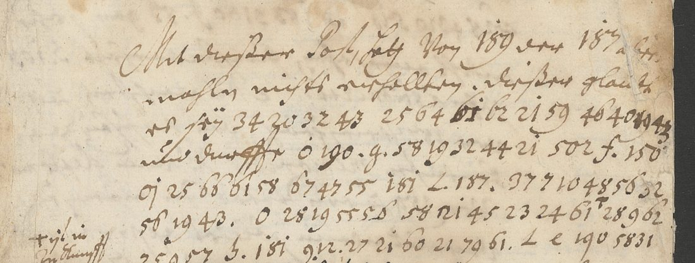
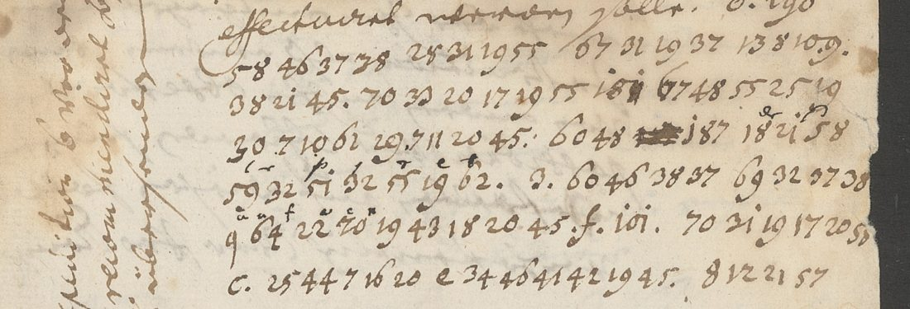

At a glanceKey recovered from the ciphertext alone · partial · 865 of 1,361 cipher tokens (63.6%); the letter cipher 638 of 682 (93.5%)
- The letters
- Fifteen letters, 7 March to 14 July 1706, from an agent in Vienna who signs with a cover name read “Sidon”, to the Baron de Schenck, chamberlain of King Augustus II, at Cracow and Lublin.
- Where
- Archiwum Narodowe w Krakowie, AKM 21 plik 30/1 (DECODE R7486–R7500), catalogued on DECODE as from “NN z Drezna (jezuita?)”, with no decipherment.
- The cipher
- Clear German with single words and phrases in a homophonic letter table (a = 7, 8, 9; b = 10, 11, 12; … three numbers to a letter in alphabetical order), three-digit code numbers for people and things, and dotted letter signs.
- How it was deciphered
- A free solver gave nothing; a search that kept the table in alphabetical blocks and moved only the block boundaries found it from the ciphertext alone. The recipient’s own glosses agree with it and give three words of the code: der, von, der Kayser. Words of the code’s alphabetical 500s and a few persons were then fixed from context.
- What it says
- Court news from Vienna in the year of Ramillies and Turin, the Saxon king's affairs at the imperial court, rivalries for a post, the Malcontents in Hungary: “dieser glaubet sey kein guttes omen”.
- Still open
- 65 of the 77 three-digit codes, nearly all persons (187, 181, 166, 190 …): their roles are clear, their names are not, and no key survives. Also eight short runs and about ninety small word signs.
On DECODE these fifteen letters were catalogued with eighteen letters to Hetman Adam Mikołaj Sieniawski under one range of records (R7468–R7500, catalogue entry 333). Those are other correspondents in four other keys, each with its own page (a different cipher in each): Brâncoveanu and Cantacuzino, news from Bender, 1709, an adviser, c. 1707 and Chomentowski at the Porte.
01 The records
DECODE R7486–R7500, Archiwum Narodowe w Krakowie, AKM 21 plik 30/1, items 1–15, uploaded in September 2023 with status N/A, cipher type “unknown” and no key or decryption file. DECODE gives the sender as “NN z Drezna (jezuita?)” and the receiver as “Schenck (Szench) szambelan Augusta II”. The neighbouring records R7460–R7467 and R7501–R7507 belong to other collections and correspondents and give no key for these.
02 The Vienna letters to Schenck
The address leaf of the letter of 27 March reads A Monsieur / Mons.r Le Baron de Schenck / Chambell. de Sa Majesté / Le Roy de Pologne / à Cracovie. Every letter is dated from Vienna (“W. d. 12. Maj 1706”), not Dresden; the writer numbers them (N. 15 on 27 March, N. 47 on 14 July, so more than one a week), closes “Votre tres humble et tres obeiss. Serviteur” and signs with a name read “Sidon” or “Sadon”, probably a cover name. The receipt dockets say “Recept. d. 18 May 1706 in Cracau”, “d. 7. Junÿ 1706 in Lublin”; a later archive hand wrote “Seligman” and “Lehman” on two address leaves.
| DECODE | No. | Date | DECODE | No. | Date |
|---|---|---|---|---|---|
| R7486 | 18 | 7 March 1706 | R7494 | 35 | 5 June |
| R7487 | – | 13 March | R7495 | 38 | 15 June |
| R7488 | 15 | 27 March | R7496 | 39 | 16 June |
| R7489 | 27 | 8 May | R7497 | 40 | 19 June |
| R7490 | 28 | 12 May | R7498 | 41 | 23 June |
| R7491 | 31 | 22 May | R7499 | 44 | 3 July |
| R7492 | – | 26 May | R7500 | 47 | 14 July |
| R7493 | 32 | 29 May |
Most of each letter is in clear German, mixed with French and Latin: the siege of Landau and the fall of Hagenau, Barcelona relieved, Ramillies and the coming peace congress (who might mediate, Denmark or Sweden), the relief of Turin, the Malcontents in Hungary. The cipher covers names and the delicate words.

03 The letter table
Three numbers to each letter, in alphabetical order, with no j and no v:
| a | b | c | d | e | f | g | h | i | k | l | m |
|---|---|---|---|---|---|---|---|---|---|---|---|
| 7 8 9 | 10 11 12 | 13 14 15 | 16 17 18 | 19 20 21 | 22 23 24 | 25 26 27 | 28 29 30 | 31 32 33 | 34 35 36 | 37 38 39 | 40 41 42 |
| n | o | p | q | r | s | t | u | w, v | y | z | |
| 43 44 45 | 46 47 48 | 49 50 51 | 52 53 54 | 55 56 57 | 58 59 60 | 61 62 63 | 64 65 66 | 67 68 69 70 | 76 77 78 | 79 |
The end of the table is irregular: 70 is w (wieder, wegen), 76–78 are y (Ogilvy, Convoy, Secretarÿ), 79 is z (zugleich, correspondenz, Reichsvicecantzler); 67–69 serve for both v and w (von, Vanitäten, Avisen). The single digits 7, 8 and 9 inside runs are therefore a. No key sheet survives with the letters.
The recipient worked some runs out himself. Over “58 31 15 28 25 19 58 14 28 37 8 26 19 43” (sich geschlagen) in N. 18 he wrote small letters s, a, k, l, a, and over “… 51 32 55 19 62” (dessipiret) p, r, e, t: they agree with the table.
04 The decipherment
106 runs of the letter table, 682 numbers. Read in their sentences (word division and spelling are the writer's):
- “dieser glaubet sey kein guttes omen”; “o. Herr Senfft hat gar 3. 181 abgesezt, L e 190 sich geschlagen”; “es soll hier viel Cabalen … wieder 181 vorgehabt haben” (N. 18, 7 March).
- “o. Reichsvicecantzler” (N. 18); “wegen der Invasion” (13 March); “eine Convoy”, “Plessen”, “correspondenz” (N. 15).
- “de Baron Kleinburg alhier”, “Ogilvy”, “aus Muscau geschrieben”, “confidence”, “malevoli” (N. 28, 12 May).
- “wie auch beygleich b. 150 ein rescript, so b. 154 L. 166 zugleich unterschrieben, erhalten”; “combination”, “du cabinet”, “in puncto diversatis religionis” (N. 38, 15 June).
- “Secretarÿ”, “wegen o introduction”, “dimission”, “wegen Nellenburg” (N. 41, 23 June).
- “oo. Malcontenten auffs neue allarmiren dürfften”, “die schon accordirten puncten wieder resiliren”, “diffidence” (N. 47, 14 July).

638 of the 682 numbers (93.5%) read as sense. Seven runs that a single slip spoils still read (introduc[t]ion, punc[t]en, d[i]mission, be[m]ühen); eight do not: “gutswor”, “sollwiglaufeenden” (perhaps zuwiderlauffenden, with the recipient's a u f over it), “lceth”, “ditlan”, “datmseyihm” and three of one or two letters (“iwzo” is ijzo, the writer’s spelling of itzo). Their digits were checked twice on the images.
05 The codes
Three layers sit beside the letter table: three-digit numbers for persons, courts and words (77 distinct, 502 occurrences), a few two- and one-digit numbers (83, “5”, “3.”, “2.”), and dotted letters before codes and runs (o., b., L., d., e., f., g., c., m., p., oo, ooo; 134 occurrences). The recipient settled the last two layers himself in N. 32: he wrote der over “o.” and von Kayser over “5 83”. The dotted letters are therefore a code for small words, not nulls.
| Code | n | Value | Grade | Evidence |
|---|---|---|---|---|
| o. | 34 | der | C | the recipient’s gloss; “Es hat 189 o. 187 heute … schreiben wollen”, where the writer first wrote der and struck it |
| 5, 83 | 3, 9 | von, der Kayser | C | the recipient’s gloss; “83 ist wegen 204 also zu timide”, “f. 83 gar sehr wohl angesehen” |
| L., f., b. | 11, 13, 18 | und, bey, von dem | M, M, I | “b. 154 L. 166 zugleich unterschrieben”; “ob 189 f. 254 reussire”; “b. 187 bin ersuchet worden” |
| 189 | 56 | Baron Schenck, the addressee | M | “einem diplomate vor 189”, “das diploma des 189”, the genealogy of “der Schenckisch-Nideggischen familie”; “des 189 zugestossenen Unpäßlichkeit” |
| 150 | 42 | King Augustus II | M | “in favorem 150”; “dass 150 nichts von Schweden zu erwarten habe”; “Ministres 3. 150” |
| 100 | 9 | the imperial court | M | “das interieur von 100”; “bei 100 mächtige grosse desordre” |
| 204 | 5 | Sweden | M | “83 ist wegen 204 also zu timide”; “Resolutionen, so etwann 204 eine jalousie verursachen könnten” |
| 509, 513, 515, 519, 524 | 17 | Friede, Ordre, Progressen, Reise, Urlaub | M | “in pto des 509, worauf nunmehro gedacht werden will”; “die 513 du cabinet”; “weiter glückliche 515”; “seine 519 auf morgen oder übermorgen festgestellet”; “beÿ 100 524 nehmen” |
| 502, 518, 521 | 9 | Abreise, Recommendation, Resolution | I | bounded by the alphabetical order of the 500s, which rise from F (509) through O, P, R to U (524), and fitting their sentences |
The persons are the gap. Their roles are clear from a second reading of every sentence that holds a code: 187 (104 times) is the writer’s principal in Vienna, in the King’s service and paid by bill of exchange; 181 (67) is the King’s man at the imperial court, with a secretary, couriers to 150 and rheumatism in his arm; 166 a minister at the King’s side; 190 an imperial minister who “nec superiorem, nec parem aut inferiorem vertragen kann” and wants “ein monopolium der affairen” (not Charles XII, who is named in clear in the same letter); 132 and 193 rivals for one post. The 100s and 200s do not follow the alphabet (204 Sweden breaks it), so position bounds nothing, and none of the names written in clear (Wackerbarth, Senfft, Plessen, Heinisch) can be tied to a code.
06 Method
- Pulled the metadata of R7460–R7507 through the DECODE API and the images with a logged-in session; no record carries a key or decipherment.
- Two transcription passes over the 52 images of the Schenck letters: clear text as far as legible, every cipher number, superscript and docket.
- A free homophonic solver (any number to any letter, German n-grams of the 1720s–60s) gave no sense on the 642 numbers then in hand.
- The runs end in 19 43, 21 45, 20 44, 19 55, and the frequent numbers cluster. If the homophones are consecutive numbers in alphabetical order, the key is only 23 boundaries. Annealing those boundaries alone against the same model gave blocks of three from a = 7–9 in the best restart (−913 against −1,212 to −1,496 for the others) and, at once, de Baron Kleinburg alhier and correspondenz.
- Every run was transcribed again at full resolution against the key: 24 lines corrected, most of them the writer's 31 taken for 21 and his delta-shaped 6 for 0 or 8.
- A second pass re-read every sentence that holds a code or a dotted sign (about 90 crops) and the recipient's glosses; the code was then tested for alphabetical order, which holds for the 500s and not for the persons.
- Outside help was sought for the names: printed editions, the lists of Saxon envoys at Vienna (Wackerbarth to 1706, Vesnich 1706–08), and the Wiener Diarium of 1706 for dated cribs, which the Austrian National Library serves only behind a bot check. None gave a key or a name.
- The keys of the Sieniawski letters once filed with these (Kaczka’s key A, the R7475 table) were scored on the runs and do not fit (−5.6 and −7.0 per character against −2.8 for the block key).
07 What remains uncertain
- 65 of the 77 three-digit codes, 394 occurrences, nearly all persons: 187, 181, 166, 190, 254, 258, 132, 193, 186 and the singletons. No key is filed with the letters, on DECODE or in print, and the clear text gives roles, not names; the Saxon cipher keys of the period would be in the Hauptstaatsarchiv Dresden.
- About ninety small word signs (d., e., g., c., m., p., oo, ooo, “3.”, “2.”): articles or pronouns, but no single value fits every occurrence.
- Eight runs (44 numbers) with no sense, listed above; their digits were checked twice, and each occurs once.
- Grades: o., 5 and 83 C (the recipient's gloss); 189, 150, 100, 204, L., f. and five words of the 500s M; b., 502, 518, 521 I. The clear text is transcribed only in part ([?] where water damage or the hand defeat it).
- Who “Sidon” was, and which Schenck: neither is identified. DECODE's “NN z Drezna (jezuita?)” does not fit letters dated from Vienna.
Full texts
The transcription and the decryption of every document on this page, so that the reading can be used and checked. Short files are shown here; all are in the repository.
R7486, N. 18, Vienna, 7 March 1706
A letter of the numbered series from the Vienna agent signing 'Sidon' to Baron Schenck, chamberlain of Augustus II, at Cracow, 7 March 1706: court news and intrigue in clear German, with the two-digit letter cipher deciphered (in braces) and most three-digit person codes left open.
Transcription
# R7486 N. 18 Wien 7 March 1706 (P3 foot: "d. 7. Marti 1706") docket: "Lehman[?]" / "Recept. 12 aprilis 1706"; later hand "Wien 7 marty 1706" images: P1 (text p.1), P2 (address leaf/back, docket only), P3 (pp.2-3 spread)
# Conventions: the digit 6 is written like a Greek delta (ascender loop); 0 is a plain o. "3." (flat-topped 3 with a dot) may be the Kurrent letter z. used as an isolated sign; transcribed as seen.
# A lone digit 7 (often with a dot before or after it) recurs inside runs (P1 l.5, l.25, l.28; P3a l.13; P3b l.19; P3 margin) - it looks like a sign of its own, not half of a pair.
# "oj" (o with dot + j) occurs twice as an isolated sign (P1 l.5, P3b l.18).
[P1 top] N. 18 Monsieur (pencil folio 288)
[P1 l.1] Mit dieser Post, habe von 189 der 187 alt-
[P1 l.2] mahl nichts erhallten. dieser glaub-
[P1 l.3] et seÿ 34 20 32 43 25 64 61 62 21 59 46 40 19 43 (61 heavily re-inked/overwritten; final 19 43 re-inked darker) (chk: was 34 30 ... 59 40 40)
[P1 l.4] alhier durch o 190. g. 58 19 32 44 21 502 f. 150" ("g." with dot; 502 could be 50 2; 150 has a small mark ' above right)
[P1 l.5] oj 25 66 61 58 67 47 55 181 L 187. 37 7? 10 48 56 32 (raw last run: 37710485632 {?split}; first digit 3?|9; "66" = two delta-6s)
[P1 l.6] 56 19 43. o 28 19 55 56' 58 21 45 23 24 61^r? 28962{?split: 28 9 62}
[P1 l.7] 25957{?split: 25 9 57} 3. 181 9?12. 27 21 60 21 79 61. L e 190 58 31
[P1 l.8] 15 28 25 19 58^s 14^a 28^k 37^l 8^a' 26 19 43^a?. Unterdessen[?] 187 (superscript small letters s a k l a over the run, a further "a" over 43) (chk: was 8 20 19 43; 26 has the delta-6 loop: geschlagen)
[P1 l.9] sich nicht erklaeret, Es verlanget 187 sehr
[P1 l.10] zu wissen ob der Courrier mit voriger (ctx: was Courier[?])
[P1 l.11] Post, welche jetzo 181 an 413 dirigiret
[P1 l.12] worden, richtig werden eingelauffen
[P1 l.13] seÿn. heute seÿnd Ihro Kh. der Prince
[P1 l.14] von Savoyen nach Italien aufgebrochen
[P1 l.15] dass bin gleich beÿ der Conferentz [?] und (ctx: was das [?] gleich)
[P1 l.16] habe Sie beÿde zu deren Wagen[?] mit (ctx: was [?])
[P1 l.17] begleitet. der Herr von Heinisch[?]
[P1 l.18] lässet seine Anliegen[?] beÿ dem[?] 189 (ctx: was [?] Zeit von)
[P1 l.19] auf alle Arten[?] recommendiren und
[P1 l.20] glaubt dass er wohl durch seinen Fleiss
[P1 l.21] und auch 150 und 181 viel nützliches (ctx: was m[?] 181 [?])
[P1 l.22] effectuiret werden solle. o. 190
[P1 l.23] 58 46 37 78? 28? 31 19 55 67 31 19 37 13 8 10 .9. ("5-8": 5 joined to 8 by a stroke; 78 is clear but soll needs 38/39) (chk: was 25 21 19 55 67 21 19 37 13810. o.)
[P1 l.24] 38 21 45. 70 32 20 17 19 55 181 67 48 55 25 19
[P1 l.25] 30 .7 10 61 29 .7 11 20 45. 60 48 ~~[blotted group]~~ 187 18^[er] 21 58 (small "er" above 18/21, a curl above 58)
[P1 l.26] 59 32^[lr?] 51^p 32^[/] 55^r 19^e 62^[t?]. 3. 60 46 38 37 69 32 27? 38 (superscripts small, positions approximate) (chk: was 51^r)
[P1 l.27] 9^a 64^u 22^f 20^[c n] 19 43 18 20 45. f. 101. 70 31 19 17 20 56 (101 written ioi with dots) (chk: was 9^a 64^n f 22^a 40^c ^n ... 70 21 19; superscripts a u f over 9 64 22, c n over 20)
[P1 l.28] c. 25 44 7 16 20 e 34 46 41 42 19 45. 8 12 21 57
## margin P1 left, beside l.6-8: "+ ist in Zukunfft 192." (looks like a key note: the sign + is henceforth 192)
## margin P1 left (vertical, beside l.20-29): "die Expedition b. vor der o. [?]llerst[?] / 166. recommendiret desto ehester / zu überschreiben"
[P2] address leaf/back: later hand (brown) "Wien 7 marty 1706"; docket "Lehman[?]" / "Recept. 12 aprilis 1706". Lower left: offset (mirror) of the signature from P3. No cipher.
[P3a l.1] 46 28 43 19 516{?split: 51 6} o[heavy blot, isolated o?] 183 31 60. f. 83 gar sehr (1833160 raw; 183 likely code) (chk: was 40 28 43 19; ohne, continues P1 l.28 'aber')
[P3a l.2] wohl angesehen, [in]sonderheit 3. 103
[P3a l.3] estimiret. Mit nächster Post
[P3a l.4] wird 187 übersenden[?], den aufsatz des (ctx: was [?])
[P3a l.5] Freÿherrlichen[?] memorials zu einem diplomate (ctx: was [?]chen)
[P3a l.6] vor 189 [?] zu [?]
[P3a l.7] damit wann solches approbiret
[P3a l.8] alles [?] eher [?] zu [?]
[P3a l.9] gebracht werden. Es kömmt[?] (ctx: was [?])
[P3a l.10] der taxe[?] selbsten mit 181 der 187 und (ctx: was Sache)
[P3a l.11] so vielleicht[?] von 230. beÿ dem Rescript (ctx: was [?] ... [?])
[P3a l.12] eine moderation zu erhalten. o. 55.
[P3a l.13] 19 31 13. 28 58 67 32 14 20 15 7 43 61 79 (chk: was 19 21 ... 61 39?|29)
[P3a l.14] 37 19 55. 59 47. ~~1?5~~. 134. zu notificiren
[P3a l.15] [?] dass Er von sich so ob
[P3a l.16] futura [?] nicht Ihro Königs
[P3a l.17] freÿde [?] der Herr Graff [?]
[P3a l.18] darauff von Ihro als [?] an
[P3a l.19] an den König von Schweden. Ich
[P3a l.20] will hoffen, es werde derselbe
[P3a l.21] nach der Ihm mitgegebenen
[P3a l.22] Instruction, alß etwann seine
[P3a l.23] von anderen an Ihm observirten
[P3a l.24] passionen von Schweden folgen
[P3a l.25] ~~[struck word]~~ auf diesen fall
[P3a l.26] [?]lich von Ihro Königl.
## margin P3a left: "No" (a small mark)
[P3b l.1] ein guten effect bei generositet[?] seÿn
[P3b l.2] möchte. Gewünscht[?] ist es wann 150 (ctx: was Gnädigst)
[P3b l.3] a bel agio 3.? 18 19 43 508 sich überzeu-
[P3b l.4] gen können, dass 150. nichts von
[P3b l.5] Schweden[?] zu erwarten habe. Unterdessen
[P3b l.6] beÿ nächster sicherheit wegen (ctx: was meiner [?]heit nach)
[P3b l.7] richtig [?] Posten der
[P3b l.8] 189 der 187 seine sentiments
[P3b l.9] eröffnen werde. beÿ 166. bittet (ctx: was selbst[?])
[P3b l.10] 187 sehr um pardon dass Er (ctx: was [?])
[P3b l.11] mit dieser Post nicht seine
[P3b l.12] devoir ein Genüge[?] leisten[?].
[P3b l.13] Er soll mit nächster gewiss
[P3b l.14] [?] Ihm die [?]
[P3b l.15] des 136. etwas Zeit wegge- (ctx: was [?])
[P3b l.16] nommen; welches 187. Ich
[P3b l.17] [?] dem[?] committeroten[?]
[P3b l.18] 189. mit[?] sicherheit so wohl o. 190 (ctx: was [?]heit so [?])
[P3b l.19] betreffend[?] bloss zu denen nöthigen (ctx: was [?] [?] zu [?])
[P3b l.20] mesures[?] [?] darum
[P3b l.21] alle [?] ~~ein~~ 510 durch 181
[P3b l.22] und[?] 190 vermeine, dass die Gedancken (ctx: was o 190 ... [?])
[P3b l.23] so geheim[?] gehallten werden damit oj 59 47
[P3b l.24] 181 15 48 45. 62. .7. 31 55. erfolgen[?] (ctx: was erhollen[?]) (chk: was 02?|62; 6 is the delta form)
[P3b l.25] werden[?] bleibe
[P3b l.26] Monsr. Votre tres humb. e tres obeiss. [signature "S..don"?]
[P3 foot, below middle] paraph + "d. 7. Marti 1706"
## margin P3 middle (vertical, between the pages, reads bottom to top; 4 lines; starts "P.S."):
## "P.S. dass 190. nec superiorem, nec parem [...]m aut inferiorem vertragen[?]"
## "[?] können, gönnen ein monopolium 3. 7 22 24 7. 32 55 19 43 [?]" (the cipher run 7 22 24 7. 32 55 19 43 is underlined)
## "[?] seÿ 527. [?] haben wolle [?] als 186 exempel, be-" (ctx: tail reads "[...]trefft haben wolle als 186 exempel be-[zeugt?]")
## "[?] genug. Ob es 150 [?] ... [?] erfordert die Zeit" (ctx: "Ob es 150 avantage[?] [?] lehret[?] die Zeit")Decryption
# R7486 N. 18 Wien 7 March 1706 (P3 foot: "d. 7. Marti 1706") docket: "Lehman[?]" / "Recept. 12 aprilis 1706"; later hand "Wien 7 marty 1706" images: P1 (text p.1), P2 (address leaf/back, docket only), P3 (pp.2-3 spread)
# Conventions: the digit 6 is written like a Greek delta (ascender loop); 0 is a plain o. "3." (flat-topped 3 with a dot) may be the Kurrent letter z. used as an isolated sign; transcribed as seen.
# A lone digit 7 (often with a dot before or after it) recurs inside runs (P1 l.5, l.25, l.28; P3a l.13; P3b l.19; P3 margin) - it looks like a sign of its own, not half of a pair.
# "oj" (o with dot + j) occurs twice as an isolated sign (P1 l.5, P3b l.18).
[P1 top] N. 18 Monsieur (pencil folio 288)
[P1 l.1] Mit dieser Post, habe von 189<Baron Schenck? (I)> der 187 alt-
[P1 l.2] mahl nichts erhallten. dieser glaub-
[P1 l.3] et seÿ 34 20 32 43 25 64 61 62 21 59 46 40 19 43 61 {keinguttesoment} heavily re-inked/overwritten; final 19 43 {en} re-inked darker) (chk: was 34 30 59 40 40 {khsmm})
[P1 l.4] alhier durch o 190<the King of Sweden? (I)>. g. 58 19 32 44 21 {seine} 502 f. 150<King Augustus? (I)>" ("g." with dot; 502 could be 50 2; 150<King Augustus? (I)> has a small mark ' above right)
[P1 l.5] oj 25 66 61 58 67 47 55 {gutswor} 181 L 187. 37 7 10 48 56 32 {labori} (raw last run: 37710485632 {?split}; first digit 3?|9; "66" = two delta-6s)
[P1 l.6] 56 19 43 28 19 55 56 58 21 45 23 24 61 {renherrsenfft} 28962{?split: 28 9 62 {hat}}
[P1 l.7] 25957{?split: 25 9 57 {gar}} 3. 181 9 12 27 21 60 21 {abgese} 79 61. L e 190<the King of Sweden? (I)> 58 31 {si}
[P1 l.8] 15 28 25 19 58 14 28 37 8 26 19 43 {chgeschlagen}. Unterdessen[?] 187 (superscript small letters s a k l a over the run, a further "a" over 43) (chk: was 8 20 19 43 26 {aeeng} has the delta-6 loop: geschlagen)
[P1 l.9] sich nicht erklaeret, Es verlanget 187 sehr
[P1 l.10] zu wissen ob der Courier[?] mit voriger
[P1 l.11] Post, welche jetzo 181 an 413 dirigiret
[P1 l.12] worden, richtig werden eingelauffen
[P1 l.13] seÿn. heute seÿnd Ihro Kh. der Prince
[P1 l.14] von Savoyen nach Italien aufgebrochen
[P1 l.15] das [?] gleich beÿ der Conferentz[?] und
[P1 l.16] habe Sie beÿd zu deren[?] [?] mit
[P1 l.17] begleitet. der Herr von Heinisch[?]
[P1 l.18] lässet seine [?] Zeit von 189<Baron Schenck? (I)>
[P1 l.19] auf alle Arten[?] recommendiren und
[P1 l.20] glaubt dass er wohl durch seinen Fleiss
[P1 l.21] und auch 150<King Augustus? (I)> m[?] 181 [?] nützliches
[P1 l.22] effectuiret werden solle. o. 190<the King of Sweden? (I)>
[P1 l.23] 58 46 37 78 28 31 19 55 67 31 19 37 13 8 10 9 {solzhierwielcaba}. ("5-8": 5 joined to 8 by a stroke; 78 is clear but soll needs 38 39 {ll}) (chk: was 25 21 19 55 67 21 19 37 {geerweel} 13810. o.)
[P1 l.24] 38 21 45 70 32 20 17 19 55 {lenxieder} 181 67 48 55 25 19 {worge}
[P1 l.25] 30 7 10 61 29 7 11 20 45 60 48 {habthabenso} ~~[blotted group]~~ 187 18 21 58 {des} (small "er" above 18 21 {de}, a curl above 58)
[P1 l.26] 59 32 51 32 55 19 62 {sipiret}. 3. 60 46 38 37 69 32 27 38 {sollwigl} (superscripts small, positions approximate) (chk: was 51^r)
[P1 l.27] 9 64 22 20 19 43 18 20 45 {aufeenden}. f. 101. 70 31 19 17 20 56 {xieder} (101 written ioi with dots) (chk: was 9 64 22 40 70 21 19 {aufmxee}; superscripts a u f over 9 64 22 {auf}, c n over 20)
[P1 l.28] c. 25 44 7 16 20 34 46 41 42 19 45 8 12 21 57 {gnadekommenaber}
## margin P1 left, beside l.6-8: "+ ist in Zukunfft 192." (looks like a key note: the sign + is henceforth 192)
## margin P1 left (vertical, beside l.20-29): "die Expedition b. vor der o. [?]llerst[?] / 166. recommendiret desto ehester / zu überschreiben"
[P2] address leaf/back: later hand (brown) "Wien 7 marty 1706"; docket "Lehman[?]" / "Recept. 12 aprilis 1706". Lower left: offset (mirror) of the signature from P3. No cipher.
[P3a l.1] 46 28 43 19 {ohne} 516{?split: 51 6} o[heavy blot, isolated o?] 183 31 60 {is}. f. 83 gar sehr (1833160 raw; 183 likely code) (chk: was 40 28 43 19 {mhne}; ohne, continues P1 l.28 'aber')
[P3a l.2] wohl angesehen, [in]sonderheit 3. 103
[P3a l.3] estimiret. Mit nächster Post
[P3a l.4] wird 187 [?], den aufsatz des
[P3a l.5] [?]chen memorials zu einem diplomate
[P3a l.6] vor 189<Baron Schenck? (I)> [?] zu [?]
[P3a l.7] damit wann solches approbiret
[P3a l.8] alles [?] eher [?] zu [?]
[P3a l.9] gebracht werden. Es [?]
[P3a l.10] der Sache selbsten mit 181 der 187 und
[P3a l.11] so [?] von 230. beÿ dem [?]
[P3a l.12] eine moderation zu erhalten. o. 55.
[P3a l.13] 19 31 13 28 58 67 32 14 20 15 7 43 61 {eichswicecant} 79 (chk: was 19 21 61 39 {eetl})
[P3a l.14] 37 19 55 59 47 {lerso}. ~~1?5~~. 134. zu notificiren
[P3a l.15] [?] dass Er von sich so ob
[P3a l.16] futura [?] nicht Ihro Königs
[P3a l.17] freÿde [?] der Herr Graff [?]
[P3a l.18] darauff von Ihro als [?] an
[P3a l.19] an den König von Schweden. Ich
[P3a l.20] will hoffen, es werde derselbe
[P3a l.21] nach der Ihm mitgegebenen
[P3a l.22] Instruction, alß etwann seine
[P3a l.23] von anderen an Ihm observirten
[P3a l.24] passionen von Schweden folgen
[P3a l.25] ~~[struck word]~~ auf diesen fall
[P3a l.26] [?]lich von Ihro Königl.
## margin P3a left: "No" (a small mark)
[P3b l.1] ein guten effect bei generositet[?] seÿn
[P3b l.2] möchte. Gnädigst ist es wann 150<King Augustus? (I)>
[P3b l.3] a bel agio 3.? 18 19 43 {den} 508 sich überzeu-
[P3b l.4] gen können, dass 150<King Augustus? (I)>. nichts von
[P3b l.5] Schweden[?] zu erwarten habe. Unterdessen
[P3b l.6] beÿ meiner [?]heit nach
[P3b l.7] richtig [?] Posten der
[P3b l.8] 189<Baron Schenck? (I)> der 187 seine sentiments
[P3b l.9] eröffnen werden. beÿ 166. selbst[?]
[P3b l.10] 187 [?] um pardon dass Er
[P3b l.11] mit dieser Post nicht seine
[P3b l.12] devoir ein [?] leisten[?].
[P3b l.13] Er soll mit nächster gewiss
[P3b l.14] [?] Ihm die [?]
[P3b l.15] des 136. etwas Zeit [?]
[P3b l.16] nommen; welches 187. Ich
[P3b l.17] [?] dem[?] committeroten[?]
[P3b l.18] 189<Baron Schenck? (I)>. [?]heit so [?] o. 190<the King of Sweden? (I)>
[P3b l.19] [?] [?] zu [?] nöthigen
[P3b l.20] mesures[?] [?] darum
[P3b l.21] alle [?] ~~ein~~ 510 durch 181
[P3b l.22] o 190<the King of Sweden? (I)> vermeine, dass die [?]
[P3b l.23] so [?] werden damit oj 59 47 {so}
[P3b l.24] 181 15 48 45 62 7 31 55 {contair}. erhollen[?] (chk: was 02?|62; 6 is the delta form)
[P3b l.25] werden[?] bleibe
[P3b l.26] Monsr. Votre tres humb. e tres obeiss. [signature "S..don"?]
[P3 foot, below middle] paraph + "d. 7. Marti 1706"
## margin P3 middle (vertical, between the pages, reads bottom to top; 4 lines; starts "P.S."):
## "P.S. dass 190. nec superiorem, nec parem [...]m aut inferiorem vertragen[?]"
## "[?] können, gönnen ein monopolium 3. 7 22 24 7. 32 55 19 43 [?]" (the cipher run 7 22 24 7. 32 55 19 43 is underlined)
## "[?] seÿ 527. [?] haben wolle [?] als 186 exempel, be-"
## "[?] genug. Ob es 150 [?] ... [?] erfordert die Zeit"R7487, Vienna, 13 March 1706
A letter of the numbered series from the Vienna agent signing 'Sidon' to Baron Schenck, chamberlain of Augustus II, at Cracow, 13 March 1706: court news and intrigue in clear German, with the two-digit letter cipher deciphered (in braces) and most three-digit person codes left open.
Transcription
# R7487 N. [none visible] Wien 13 March 1706 (foot of p.4: "W[ien] d. 13 Mart 1706") docket: none besides later hand "Wien 13 marty 1706" / "Seligman" at top of P2 images: P1 (text p.1), P3 (pp.2-3 spread), P2 (p.4, end of letter + signature)
# Reading order P1 -> P3a -> P3b -> P2. Mostly clear text; only two 2-digit runs.
[P1 top] Monsieur (pencil folio 290)
[P1 l.1] Es ist heute die Post abermahl wegen
[P1 l.2] des anhalltenden Schnee- und Regenwetters
[P1 l.3] sehr spat angekommen. Nichts destoweniger
[P1 l.4] habe 181 alles vorgestellet, was Sie
[P1 l.5] wegen des 37 15 19 61 28 Brieffes[?] gemeldet, (ctx: word after run is not Graf; ~Brieffes) (raw 3715196128; "1961" written with delta-6)
[P1 l.6] Sie hatten aber bereits ein Copie darvon.
[P1 l.7] dem 187 ist nichts bekümmerlicher alß
[P1 l.8] dass zwischen 181 und 190 die Missverstand
[P1 l.9] nicht mehr ab als zu nimbt, und weiss
[P1 l.10] 187 kaum glaubet vermögend zu seyn
[P1 l.11] solchen ein temperament oder hülffe zu
[P1 l.12] finden, bevorab da es scheinet ob
[P1 l.13] trage auch 150 kein besondere confi-
[P1 l.14] dence mehr gegen 190. Unterdessen einige
[P1 l.15] nachdenckliche proben sich eüssern, (ctx: was [?]liche)
[P1 l.16] wegen der 3243649{?split: 32 43 64 9|32 43 6 49} 59 32 4[hole]4. d. 314 (paper hole after "4"; one or two groups lost)
[P1 l.17] Fra[?]stmann[?] f. 83. Kein [hole] [?] (ctx: was [?]mann; Fraustadt?)
[P1 l.18] positis ponendis. Mann trägt [hole]
[P1 l.19] mit einer Zeitung, ob habe der H.
[P1 l.20] General Rhenschild dem Könige von
[P1 l.21] Schweden vorgeschlagen, das
[P3a l.1] Zubezeugung der Grossmüthigkeit
[P3a l.2] dem Königl. Prinzen, kein Regi-
[P3a l.3] ment und jedes [?] gefangen
[P3a l.4] werden freÿ geben, auch solchen
[P3a l.5] durch die übrig gefangene comple-
[P3a l.6] tiren lassen, und Ihn zu einer Leib-
[P3a l.7] guardie [?] darbeÿ aber
[P3a l.8] bedingen solle, dass dieser nie-
[P3a l.9] mahls wider wieder[?] den
[P3a l.10] König von Schweden dienen solle:
[P3a l.11] was an diesem Regiment[?] und
[P3a l.12] auf was absichten es geschehe, wird
[P3a l.13] die Zeit die beste solution[?] davon
[P3a l.14] geben. der 181 verwundert
[P3a l.15] sich sehr, dass in einiger Zeit von
[P3a l.16] 186 nichts eingelauffen, dar-
[P3a l.17] unter 187 remonstriret, Es seÿ
[P3a l.18] der 186 doch, dass wann Ihm je- (ctx: was sei-)
[P3a l.19] mand wer es auch seÿ die Ant- (ctx: was ne Ordre)
[P3a l.20] wort schuldig bleibe, so unter-
[P3b l.1] liesse Er ferner[?] zu schreiben: Er
[P3b l.2] meinte aber 181. dem 186 wären
[P3b l.3] seine überhäuffte occupationes
[P3b l.4] bekannt, und solchem nach dass
[P3b l.5] selber mit Ihm eine distinction
[P3b l.6] gegen andere correspondencen zu
[P3b l.7] machen. Ich sehe es vor rathsam (ctx: was [?]sam)
[P3b l.8] an, der 186 möchte etwas von
[P3b l.9] dem rigore seines sonst nicht un-
[P3b l.10] rechten principij zu remittiren. Ge-
[P3b l.11] wiss ist es, dass die Unterschrift[?]
[P3b l.12] des Herren Landgraffens von Hessen[?]
[P3b l.13] berg, Ihm viel, die publica und
[P3b l.14] Königl. Mayt. dienste aber noch
[P3b l.15] mehr Zeit wegnehmen; darbeÿ
[P3b l.16] aber auch dem und wann sich eine
[P3b l.17] [?]lichkeit zeiget, welche man
[P3b l.18] zuvor so viel möglich vorbiegt[?]
[P3b l.19] und dardurch geniesst die kräffte
[P2 top] later hand: "Wien 13 marty 1706" / "Seligman"
[P2 l.1] nicht verbessert werden. Die Corre-
[P2 l.2] spondentz mit 189 wird nunmehro
[P2 l.3] schon besser sich einrichten lassen. (ctx: was [?])
[P2 l.4] die briefe durch den Courrier seÿnd
[P2 l.5] alle eingelauffen und hat 181 eben-
[P2 l.6] falls dieser tagen einen an 150
[P2 l.7] spediret. Auf dessen retour
[P2 l.8] 181 mit grossem verlangen wartet,
[P2 l.9] ob der 181 retour noch vor dem
[P2 l.10] ferien zu hoffen, zweiffelt 187
[P2 l.11] und darff sich dieser nicht unter-
[P2 l.12] stehen, ferner remonstrationen dass
[P2 l.13] selber zu thun. Weilen 181 persuadirt (ctx: was 187; the code is clearly 181)
[P2 l.14] ist derjenige seÿ sein feind, der Ihm
[P2 l.15] ijzo dargegen rathe, bis Er von 150 auf
[P2 l.16] seine repraesentation antwort habe.
[P2 l.17] womit verharre
[P2 l.18] Monsieur
[P2 foot left] paraph "W" + "d. 13 Mart 1706." [P2 foot right] Votre tres humble / tres obeiss. Serv. / [signature, flourish "S..don"?]Decryption
# R7487 N. [none visible] Wien 13 March 1706 (foot of p.4: "W[ien] d. 13 Mart 1706") docket: none besides later hand "Wien 13 marty 1706" / "Seligman" at top of P2 images: P1 (text p.1), P3 (pp.2-3 spread), P2 (p.4, end of letter + signature)
# Reading order P1 -> P3a -> P3b -> P2. Mostly clear text; only two 2-digit runs.
[P1 top] Monsieur (pencil folio 290)
[P1 l.1] Es ist heute die Post abermahl wegen
[P1 l.2] des anhalltenden Schnee- und Regenwetters
[P1 l.3] sehr spat angekommen. Nichts destoweniger
[P1 l.4] habe 181 alles vorgestellet, was Sie
[P1 l.5] wegen des 37 15 19 61 28 {lceth} [?] gemeldet, (raw 3715196128; "1961" written with delta-6)
[P1 l.6] Sie hatten aber bereits ein Copie darvon.
[P1 l.7] dem 187 ist nichts bekümmerlicher alß
[P1 l.8] dass zwischen 181 und 190<the King of Sweden? (I)> die Missverstand
[P1 l.9] nicht mehr ab als zu nimbt, und weiss
[P1 l.10] 187 kaum glaubet vermögend zu seyn
[P1 l.11] solchen ein temperament oder hülffe zu
[P1 l.12] finden, bevorab da es scheinet ob
[P1 l.13] trage auch 150<King Augustus? (I)> kein besondere confi-
[P1 l.14] dence mehr gegen 190<the King of Sweden? (I)>. Unterdessen einige
[P1 l.15] [?]liche proben sich eüssern,
[P1 l.16] wegen der 3243649{?split: 32 43 64 9 43 {inuan} 6 49 59 32 {psi} 4[hole]4. d. 314 (paper hole after "4"; one or two groups lost)
[P1 l.17] [?]mann f. 83. Kein [hole] [?]
[P1 l.18] positis ponendis. Mann trägt [hole]
[P1 l.19] mit einer Zeitung, ob habe der H.
[P1 l.20] General Rhenschild dem Könige von
[P1 l.21] Schweden vorgeschlagen, das
[P3a l.1] Zubezeugung der Grossmüthigkeit
[P3a l.2] dem Königl. Prinzen, kein Regi-
[P3a l.3] ment und jedes [?] gefangen
[P3a l.4] werden freÿ geben, auch solchen
[P3a l.5] durch die übrig gefangene comple-
[P3a l.6] tiren lassen, und Ihn zu einer Leib-
[P3a l.7] guardie [?] darbeÿ aber
[P3a l.8] bedingen solle, dass dieser nie-
[P3a l.9] mahls wider wieder[?] den
[P3a l.10] König von Schweden dienen solle:
[P3a l.11] was an diesem Regiment[?] und
[P3a l.12] auf was absichten es geschehe, wird
[P3a l.13] die Zeit die beste solution[?] davon
[P3a l.14] geben. der 181 verwundert
[P3a l.15] sich sehr, dass in einiger Zeit von
[P3a l.16] 186 nichts eingelauffen, dar-
[P3a l.17] unter 187 remonstriret, Es seÿ
[P3a l.18] der 186 doch, dass wann Ihm sei-
[P3a l.19] ne Ordre es auch seÿ die Ant-
[P3a l.20] wort schuldig bleibe, so unter-
[P3b l.1] liesse Er ferner[?] zu schreiben: Er
[P3b l.2] meinte aber 181. dem 186 waren
[P3b l.3] seine überhäuffte occupationes
[P3b l.4] bekannt, und solchem nach dass
[P3b l.5] selber mit Ihm eine distinction
[P3b l.6] gegen andere correspondencen zu
[P3b l.7] machen. Ich sehe es vor [?]sam
[P3b l.8] an, der 186 möchte etwas von
[P3b l.9] dem rigore seines sonst nicht un-
[P3b l.10] rechten principij zu remittiren. Ge-
[P3b l.11] wiss ist es, dass die Unterschrift[?]
[P3b l.12] des Herren Landgraffens von Hessen[?]
[P3b l.13] berg, Ihm viel, die publica und
[P3b l.14] Königl. Mayt. dienste aber noch
[P3b l.15] mehr Zeit wegnehmen; darbeÿ
[P3b l.16] aber auch dem und wann sich eine
[P3b l.17] [?]lichkeit zeiget, welche man
[P3b l.18] zuvor so viel möglich vorbiegt[?]
[P3b l.19] und dardurch geniesst die kräffte
[P2 top] later hand: "Wien 13 marty 1706" / "Seligman"
[P2 l.1] nicht verbessert werden. Die Corre-
[P2 l.2] spondentz mit 189<Baron Schenck? (I)> wird nunmehro
[P2 l.3] [?] besser sich einrichten lassen.
[P2 l.4] die briefe durch den Courrier seÿnd
[P2 l.5] alle eingelauffen und hat 181 eben-
[P2 l.6] falls dieser tagen einen an 150<King Augustus? (I)>
[P2 l.7] spediret. Auf dessen retour
[P2 l.8] 181 mit grossem verlangen wartet,
[P2 l.9] ob der 181 retour noch vor dem
[P2 l.10] ferien zu hoffen, zweiffelt 187
[P2 l.11] und darff sich dieser nicht unter-
[P2 l.12] stehen, ferner remonstrationen dass
[P2 l.13] selber zu thun. Weilen 187 persuadirt
[P2 l.14] ist derjenige seÿ sein feind, der Ihm
[P2 l.15] ijzo dargegen rathe, bis Er von 150<King Augustus? (I)> auf
[P2 l.16] seine repraesentation antwort habe.
[P2 l.17] womit verharre
[P2 l.18] Monsieur
[P2 foot left] paraph "W" + "d. 13 Mart 1706." [P2 foot right] Votre tres humble / tres obeiss. Serv. / [signature, flourish "S..don"?]R7488, N. 15, Vienna, 27 March 1706
A letter of the numbered series from the Vienna agent signing 'Sidon' to Baron Schenck, chamberlain of Augustus II, at Cracow, 27 March 1706: court news and intrigue in clear German, with the two-digit letter cipher deciphered (in braces) and most three-digit person codes left open.
Transcription
# R7488 N. 15 Wien 27 March 1706 (foot of p.2: "[paraph] d. 27. Mart 1706") docket (P2, left, vertical): "Wien 27 marty 1706 / Seligman"; small note on P2 right, upside down: "R. 4 [?]" images: P1 (text p.1), P2 (address leaf, red seal), P3 (spread: left = p.2 end of letter, right = blank)
# Hand distinguishes plain 0 ("40") from the delta-shaped 6 ("46"). Reading order P1 -> P3a.
[P1 top] N. 15 Monsieur (pencil folio 292)
[P1 l.1] Es seÿnd unterschiedene Posten ver-
[P1 l.2] strichen dass von 189 weder 181 noch
[P1 l.3] 187 keine Zeÿlen erhallten. darum
[P1 l.4] kömmt[?] man nicht weiss was daraus
[P1 l.5] zu schliessen. Es hat mir auch 187
[P1 l.6] aufgetragen dessen Zeilen mit
[P1 l.7] verlohrener [?] zu schreiben
[P1 l.8] weilen Er in der persuasion das
[P1 l.9] auch solche verlohren gehen machten (ctx: was selbst ... machen[?])
[P1 l.10] Es seÿ 181 16 19 31 präsumption ob wir (raw 161931; 3 written like z-tailed 3) (chk: was 16 19 21)
[P1 l.11] [?]bruch[?] 254. e 352 müsse zu unterbringen[?]
[P1 l.12] o. 13 46 55 57 20 59 49 46 45 18 21 45 79 so nō ("nō" = no with overline; 46 55 57 written 46555 7 run together)
[P1 l.13] 526. in Zukunfft zu notiren: etwas müsse
[P1 l.14] entamiret haben. der 187 hat mir
[P1 l.15] gesagt ich solle wenig worte
[P1 l.16] schreiben, bis man wegen sicher-
[P1 l.17] heit der briefe mehr wegen[?]
[P2] address: "A Monsieur / Mons.r Le Baron de Schenck / Chambell. de Sa Majesté / Le Roy de Pologne / tres humbl. / à Cracovie"; red wax seal; docket (vertical, left) "Wien 27 marty 1706 / Seligman"; upside-down note right "R. 4 [?]"
[P3a l.1] wesen[?] wäre und 181 lassen 189
[P3a l.2] melden wie seine 519 auf 40 46^[e?] 55 (ctx: small e/umlaut sign above 46)
[P3a l.3] 25 19 43, 46 17 56, 64 10 21 57 42 46 27 (chk: was 46 15 56, 64?|67; small mark over 64)
[P3a l.4] 21 45 festgestellet und wolle Er nur
[P3a l.5] noch beÿ 100. 524 nehmen[?], denn (ctx: was [?]n)
[P3a l.6] 49 37 20 58 59 21 44 aber eine
[P3a l.7] 521 woraus schutz[?] [?] von
[P3a l.8] 150 Ihm 20 32 44 20 15 46 45 67 48 77 (3 of 32 written over/corrected, heavy ink) (chk: was 3?2, 67?|64)
[P3a l.9] seiner antwort[?] Thun[?] denn
[P3a l.10] allzeit wird 187 mit 150
[P3a l.11] ein [?] [?].
[P3a l.12] Ich aber verharre
[P3a l.13] Monsieur
[P3a foot] paraph + "d. 27. Mart 1706" Votr. tres humble / Serviteur / [signature "Sadon"?]
[P3b] blank (pencil folio 293)Decryption
# R7488 N. 15 Wien 27 March 1706 (foot of p.2: "[paraph] d. 27. Mart 1706") docket (P2, left, vertical): "Wien 27 marty 1706 / Seligman"; small note on P2 right, upside down: "R. 4 [?]" images: P1 (text p.1), P2 (address leaf, red seal), P3 (spread: left = p.2 end of letter, right = blank)
# Hand distinguishes plain 0 ("40") from the delta-shaped 6 ("46"). Reading order P1 -> P3a.
[P1 top] N. 15 Monsieur (pencil folio 292)
[P1 l.1] Es seÿnd unterschiedene Posten ver-
[P1 l.2] strichen dass von 189<Baron Schenck? (I)> weder 181 noch
[P1 l.3] 187 keine Zeÿlen erhallten. darum
[P1 l.4] [?] man nicht weiss was daraus
[P1 l.5] zu schliessen. Es hat mir auch 187
[P1 l.6] aufgetragen dessen Zeilen mit
[P1 l.7] verlohrener [?] zu schreiben
[P1 l.8] weilen Er in der persuasion das
[P1 l.9] auch selbst verlohren gehen machen[?]
[P1 l.10] Es seÿ 181 16 19 31 {dei} präsumption ob wir (raw 161931; 3 written like z-tailed 3) (chk: was 16 19 21 {dee})
[P1 l.11] [?]bruch[?] 254. e 352 müsse zu unterbringen[?]
[P1 l.12] o. 13 46 55 57 20 59 49 46 45 18 21 45 {corresponden} 79 so nō ("nō" = no with overline; 46 55 57 {orr} written 46555 7 run together)
[P1 l.13] 526. in Zukunfft zu notiren: etwas müsse
[P1 l.14] entamiret haben. der 187 hat mir
[P1 l.15] gesagt ich solle wenig worte
[P1 l.16] schreiben, bis man wegen sicher-
[P1 l.17] heit der briefe mehr wegen[?]
[P2] address: "A Monsieur / Mons.r Le Baron de Schenck / Chambell. de Sa Majesté / Le Roy de Pologne / tres humbl. / à Cracovie"; red wax seal; docket (vertical, left) "Wien 27 marty 1706 / Seligman"; upside-down note right "R. 4 [?]"
[P3a l.1] wesen[?] wäre und 181 lassen 189<Baron Schenck? (I)>
[P3a l.2] melden wie seine 519 auf 40 46 55 {mor}
[P3a l.3] 25 19 43 46 17 56 64 10 21 57 42 46 27 {genodrubermog} (chk: was 46 15 56 64 {ocru}; small mark over 64)
[P3a l.4] 21 45 {en} festgestellet und wolle Er nur
[P3a l.5] noch beÿ 100<the Imperial court? (M)>. 524 [?]n, denn
[P3a l.6] 49 37 20 58 59 21 44 {plessen} aber eine
[P3a l.7] 521 woraus schutz[?] [?] von
[P3a l.8] 150<King Augustus? (I)> Ihm 20 32 44 20 15 46 45 67 48 77 {eineconwoz} (3 of 32 written over/corrected, heavy ink) (chk: was 3?2, 67?|64)
[P3a l.9] seiner antwort[?] Thun[?] denn
[P3a l.10] allzeit wird 187 mit 150<King Augustus? (I)>
[P3a l.11] ein [?] [?].
[P3a l.12] Ich aber verharre
[P3a l.13] Monsieur
[P3a foot] paraph + "d. 27. Mart 1706" Votr. tres humble / Serviteur / [signature "Sadon"?]
[P3b] blank (pencil folio 293)R7489, N. 27, Vienna, 8 May 1706
A letter of the numbered series from the Vienna agent signing 'Sidon' to Baron Schenck, chamberlain of Augustus II, at Cracow, 8 May 1706: court news and intrigue in clear German, with the two-digit letter cipher deciphered (in braces) and most three-digit person codes left open.
Transcription
# R7489 N. 27 Wien 8 May 1706 (closing, P2 left margin: "W. d. 8. Maj 1706") docket: later hand "Wien 8 may 1706" top of P1; no Rec. docket seen images: P1 (text p.1), P3 (pp.2-3 spread), P2 (p.4 + closing written vertically in left margin)
# Reading order P1 -> P3a -> P3b -> P2. Water-stained, faded lower parts. Almost all clear text: one short 2-digit run? none; only 3-digit codes.
[P1 top] N. 27. Monsieur (pencil folio 294; later hand top right "Wien 8 may 1706")
[P1 l.1] Des 166. reconvalescence hat den 187 ei-
[P1 l.2] nen grossen Kummer[?] benommen,
[P1 l.3] Er bittet [?] seine Hertzl. gra-
[P1 l.4] tulation abzustatten. Wegen der
[P1 l.5] [?] affaire seÿnd heute denen[?]
[P1 l.6] Königl. Handbriefe an Ihro Kaÿ-
[P1 l.7] serl. Maÿt. eingelauffen und
[P1 l.8] soll nunmehro alles vollends auf
[P1 l.9] beste beobachtet werden, wo- (ctx: was [?])
[P1 l.10] von heute abermahl ein allerun-
[P1 l.11] [?] [?] ergangen, dessen
[P1 l.12] Verzögerung 190. widerumb
[P1 l.13] auf sich genommen; ich weiss
[P1 l.14] nicht woran Er solche diligiret[?].
[P1 l.15] Was[?] von dem Graffen Lagnasco[?] (ctx: was Über[?] ... [?] Legnago[?])
[P1 l.16] mit heütiger Post eingelauffen
[P1 l.17] wird hierbeÿ geschickt. [blot] o (a small "a" or "d" and an isolated "o" at line end, possibly cipher sign "o")
[P1 l.18] 562 181 träget 187 grosses verlangen
[P3a l.1] aus [?] Ursachen
[P3a l.2] die particularitäten von der jüngsten
[P3a l.3] action beÿ Montechiaro seÿn nu-
[P3a l.4] mehro auch eingelauffen und ha-
[P3a l.5] ben 6000 [?] gegen 25.^[m] Frantz- ("25" overlined with small "m" above = 25 thousand; not a cipher gloss)
[P3a l.6] [?] doch etliche Stunden lang^[50?] (small "50"/"5o" above right of line end)
[P3a l.7] tapffern Stand gehallten, und
[P3a l.8] von denen Frantzosen 3 Briga-
[P3a l.9] diers 400 Officirer und über
[P3a l.10] 600 gemeine Niedergemacht
[P3a l.11] haben, endlich aber [?] das
[P3a l.12] Feld und Geschütz[?] [?]
[P3a l.13] einiger bagage lassen müssen.
[P3a l.14] die [?] [?] ist [?]
[P3a l.15] grossen von [?]
[P3a l.16] [?] Gener. Major [?]
[P3a l.17] [?] beÿ der [?]
[P3a l.18] [?] [?] [?]
## margin P3a left, at l.10: "6." (or "b.")
## margin P3 middle (between pages, faded): "f [?] / prinzipiell[?]" (2 words, illegible)
[P3b l.1] und Hungarn wollen die friedens
[P3b l.2] aspecten noch immer gar favo-
[P3b l.3] rable continuiren, und machen sich
[P3b l.4] viele die hoffnung, welen Ihro
[P3b l.5] Kaÿserl. Maÿt. den Ragotzkÿ
[P3b l.6] erlaubet einen Courrier zu Ihren[?]
[P3b l.7] Gemahl zu thun, dass solche nicht
[P3b l.8] ohne glückliche wirckung seÿn
[P3b l.9] werden. Aus Spanien lauffen
[P3b l.10] die Nachrichten so different, dass
[P3b l.11] man fast nicht ~~[blot]~~ weiss was
[P3b l.12] zu glauben; erwarten [?]
[P3b l.13] ein Courrierer[?] sich einfinden.
[P3b l.14] Europa hat wohl noch nie in
[P3b l.15] grösseren Revolution als
[P3b l.16] ijzo sich befunden. Danne-
[P3b l.17] marck [?] [?] besag[?]
[P3b l.18] mit Schweden wegen der Kau-
[P3b l.19] [?] Angelegenheit in Miss-
[P3b l.20] verständnüss[?] gerathen; allein
[P3b l.21] [faded line] [?]
[P2 l.1] maximen [?] als [?]
[P2 l.2] [?] sein vermögen auf zu
[P2 l.3] dass[?] wann 189 die Commission (ctx: was der [?])
[P2 l.4] wegen 181 verlangten Bücher[?] (ctx: was [?] [?])
[P2 l.5] aufgetragen, belobt 187. und
[P2 l.6] Nachricht, weilen Er derselben
[P2 l.7] gefraget worden. Ein anderes
[P2 l.8] ist wegen heütiger Wiener[?]
[P2 l.9] [?] [?] ohnmöglich
[P2 l.10] anders dass [?] noch [?]
[P2 l.11] und[?] die Potentaten wegen der Acht-
[P2 l.12] erklärung wider deren [?]
[P2 l.13] von Churfürsten zu Cölln und Bäÿern
[P2 l.14] ~~[?]~~ zu [?] sehr streng
[P2 l.15] verboten worden, doch [?]
[P2 l.16] [?] [?] [?]
[P2 l.17] Stunde nach [?] auf die
[P2 l.18] Post dem Herrn Graffen v. Wackerb. (ctx: was [?] dem [?])
[P2 l.19] abgegeben bereits ein Exemplar
[P2 l.20] erhallten, so ein [?] beÿzu-
[P2 l.21] wollen, [?] [?]
[P2 l.22] [?] [?], gebracht
[P2 l.23] [?] 150 noch nicht [?]
## P2 left margin (vertical, reads bottom to top), end of letter:
## "Königl. [?] werde, doch [?] 189"
## "[?] es [?] 150. [?]"
## "ich [?]" "[?] [signature 'Sadon'?]"
## paraph "W" + "d. 8. Maj 1706."Decryption
# R7489 N. 27 Wien 8 May 1706 (closing, P2 left margin: "W. d. 8. Maj 1706") docket: later hand "Wien 8 may 1706" top of P1; no Rec. docket seen images: P1 (text p.1), P3 (pp.2-3 spread), P2 (p.4 + closing written vertically in left margin)
# Reading order P1 -> P3a -> P3b -> P2. Water-stained, faded lower parts. Almost all clear text: one short 2-digit run? none; only 3-digit codes.
[P1 top] N. 27. Monsieur (pencil folio 294; later hand top right "Wien 8 may 1706")
[P1 l.1] Des 166. reconvalescence hat den 187 ei-
[P1 l.2] nen grossen Kummer[?] benommen,
[P1 l.3] Er bittet [?] seine Hertzl. gra-
[P1 l.4] tulation abzustatten. Wegen der
[P1 l.5] [?] affaire seÿnd heute denen[?]
[P1 l.6] Königl. Handbriefe an Ihro Kaÿ-
[P1 l.7] serl. Maÿt. eingelauffen und
[P1 l.8] soll nunmehro alles vollends auf
[P1 l.9] beste [?] werden, wo-
[P1 l.10] von heute abermahl ein allerun-
[P1 l.11] [?] [?] ergangen, dessen
[P1 l.12] Verzögerung 190<the King of Sweden? (I)>. widerumb
[P1 l.13] auf sich genommen; ich weiss
[P1 l.14] nicht woran Er solche diligiret[?].
[P1 l.15] Über[?] von dem [?] Legnago[?]
[P1 l.16] mit heütiger Post eingelauffen
[P1 l.17] wird hierbeÿ geschickt. [blot] o (a small "a" or "d" and an isolated "o" at line end, possibly cipher sign "o")
[P1 l.18] 562 181 träget 187 grosses verlangen
[P3a l.1] aus [?] Ursachen
[P3a l.2] die particularitäten von der jüngsten
[P3a l.3] action beÿ Montechiaro seÿn nu-
[P3a l.4] mehro auch eingelauffen und ha-
[P3a l.5] ben 6000 [?] gegen 25.^[m] Frantz- ("25" overlined with small "m" above = 25 thousand; not a cipher gloss)
[P3a l.6] [?] doch etliche Stunden lang^[50?] (small "50"/"5o" above right of line end)
[P3a l.7] tapffern Stand gehallten, und
[P3a l.8] von denen Frantzosen 3 Briga-
[P3a l.9] diers 400 Officirer und über
[P3a l.10] 600 gemeine Niedergemacht
[P3a l.11] haben, endlich aber [?] das
[P3a l.12] Feld und Geschütz[?] [?]
[P3a l.13] einiger bagage lassen müssen.
[P3a l.14] die [?] [?] ist [?]
[P3a l.15] grossen von [?]
[P3a l.16] [?] Gener. Major [?]
[P3a l.17] [?] beÿ der [?]
[P3a l.18] [?] [?] [?]
## margin P3a left, at l.10: "6." (or "b.")
## margin P3 middle (between pages, faded): "f [?] / prinzipiell[?]" (2 words, illegible)
[P3b l.1] und Hungarn wollen die friedens
[P3b l.2] aspecten noch immer gar favo-
[P3b l.3] rable continuiren, und machen sich
[P3b l.4] viele die hoffnung, welen Ihro
[P3b l.5] Kaÿserl. Maÿt. den Ragotzkÿ
[P3b l.6] erlaubet einen Courrier zu Ihren[?]
[P3b l.7] Gemahl zu thun, dass solche nicht
[P3b l.8] ohne glückliche wirckung seÿn
[P3b l.9] werden. Aus Spanien lauffen
[P3b l.10] die Nachrichten so different, dass
[P3b l.11] man fast nicht ~~[blot]~~ weiss was
[P3b l.12] zu glauben; erwarten [?]
[P3b l.13] ein Courrierer[?] sich einfinden.
[P3b l.14] Europa hat wohl noch nie in
[P3b l.15] grösseren Revolution als
[P3b l.16] ijzo sich befunden. Danne-
[P3b l.17] marck [?] [?] besag[?]
[P3b l.18] mit Schweden wegen der Kau-
[P3b l.19] [?] Angelegenheit in Miss-
[P3b l.20] verständnüss[?] gerathen; allein
[P3b l.21] [faded line] [?]
[P2 l.1] maximen [?] als [?]
[P2 l.2] [?] sein vermögen auf zu
[P2 l.3] der [?] 189<Baron Schenck? (I)> die Commission
[P2 l.4] wegen 181 [?] [?]
[P2 l.5] aufgetragen, belobt 187. und
[P2 l.6] Nachricht, weilen Er derselben
[P2 l.7] gefraget worden. Ein anderes
[P2 l.8] ist wegen heütiger [?]
[P2 l.9] [?] [?] ohnmöglich
[P2 l.10] anders dass [?] noch [?]
[P2 l.11] und[?] die Potentaten wegen der Acht-
[P2 l.12] erklärung wider deren [?]
[P2 l.13] von Chur-[?] zu Cölln und Bäÿern
[P2 l.14] ~~[?]~~ zu [?] sehr streng
[P2 l.15] verboten worden, doch [?]
[P2 l.16] [?] [?] [?]
[P2 l.17] Stunde nach [?] auf die
[P2 l.18] [?] dem [?] v. Wackerb.
[P2 l.19] abgegeben bereits ein Exemplar
[P2 l.20] erhallten, so ein [?] beÿzu-
[P2 l.21] wollen, [?] [?]
[P2 l.22] [?] [?], gebracht
[P2 l.23] [?] 150<King Augustus? (I)> noch nicht [?]
## P2 left margin (vertical, reads bottom to top), end of letter:
## "Königl. [?] werde, doch [?] 189"
## "[?] es [?] 150. [?]"
## "ich [?]" "[?] [signature 'Sadon'?]"
## paraph "W" + "d. 8. Maj 1706."R7490, N. 28, Vienna, 12 May 1706
A letter of the numbered series from the Vienna agent signing 'Sidon' to Baron Schenck, chamberlain of Augustus II, at Cracow, 12 May 1706: court news and intrigue in clear German, with the two-digit letter cipher deciphered (in braces) and most three-digit person codes left open.
Transcription
# R7490 N. 28 Wien 12 May 1706 (P1 top right: "W. d 12. Maj 1706") docket (P4 top): "Recept. d. 18 May 1706 / [?] Sandau[?]"; later hand "Wien 12 may" images: P1 (p.1), P5 (spread pp.2-3), P2 (p.4, pencil 298), P3 (p.5), P4 (p.6, end + signature + vertical margin)
# Reading order P1 -> P5a -> P5b -> P2 -> P3 -> P4. P1 clear text only.
[P1 top] N. 28 (pencil folio 296) W. d 12. Maj 1706
[P1 l.0] Monsieur
[P1 l.1] Die Campagne lässet sich vor der ganzen[?] Par-
[P1 l.2] theÿ so wohl in Italien als an dem Ober-Rhein
[P1 l.3] gar schlecht und sehr contraire an. Ausser allen
[P1 l.4] Zweiffel wird Ihnen schon bekannt seÿn dass
[P1 l.5] Landau mit 80 Bataillons und 140 Esquadrons
[P1 l.6] berennet. Und weilen es wegen nothdürfftig
[P1 l.7] [?], noch mit denen andern unentbehr-
[P1 l.8] lichen Requisitis aus einer denen fruchtigen[?]
[P1 l.9] so fatalen und nunmehr fast incorrigiblen
[P1 l.10] Sicherheit gebührend nicht versehen, der
[P1 l.11] tapffere General Graff von Thüngen[?] sich auch
[P1 l.12] nicht darinnen befindet, so würde an
[P1 l.13] dessen Verluste fast nicht mehr zu zweif-
[P1 l.14] feln. da wann Haguenau und dessen
[P1 l.15] [?] zugleich verlohren. der gute
[P1 l.16] Herr Graff v. Wackerbart ist derhalben
[P1 l.17] sehr bestürtzt, weilen der beste theil seines
[P1 l.18] Regiments in Hagenau lieget und beÿ
[P1 l.19] der Eroberung die armen Leüte zu
[P1 l.20] Kriegs=Gefangenen gemacht werden
[P1 l.21] müssten. Aus Spanien wollen noch
[P1 l.22] viel gute hoffnungen gegeben werden
[P1 l.23] dass man sich wegen Barcellona
[P1 l.24] keines Unfalls zu besorgen haben
[P1 l.25] dürffte. Da man glaubt dass
[P5a l.1] dass die Frantzosen solche belagerung ehest
[P5a l.2] aufheben, durch die grosse Ohnmacht der
[P5a l.3] Engel- und Holländer daraufhin gezwungen
[P5a l.4] werden. Und wollen bereits einige Nach-
[P5a l.5] richt haben, ob habe der Ritter Leake
[P5a l.6] den Graffen Tholouse von Barcellona
[P5a l.7] gäntzlich zurückgeschlagen. Des
[P5a l.8] Königs Carls grosse ~~[?]~~ frommigkeit
[P5a l.9] und männliche tugend standen[?] macht
[P5a l.10] allhier beÿ jedermann eine vortre-
[P5a l.11] flicke impression, es könnte dem-
[P5a l.12] selben an Göttlicher Gnade und daher
[P5a l.13] fliessenden glücklichen Succesen nicht feh-
[P5a l.14] len, bevorab da Er beÿ allen seinen
[P5a l.15] Vornehmen eine gantz ungemeine Re-
[P5a l.16] signation in den Göttlichen willen zu
[P5a l.17] seiner Hauptmaxime führete. Was
[P5a l.18] des Herren Gener. von Grossh[?] Schlag
[P5a l.19] des Radonisky[?] anlangen betrifft,
[P5a l.20] so ist beÿ der Situation des Kriegs
[P5a l.21] [?] unmöglich weiter zu bringen
[P5a l.22] [?] [?] welches beÿ denen
[P5a l.23] [?] [?] lange[?] [?]
[P5a l.24] [faded] [?] mehr [?] [?]
[P5a l.25] [faded] [?] [?]
[P5b l.1] Gelegenheit anlass zu einer salvati[on] geben
[P5b l.2] will. Zudem mag Glogau[?] in den Defensiv[?]
[P5b l.3] stande nicht seÿn, dass wann unter dem
[P5b l.4] prätext K. 6. [?] daraus Leute zu
[P5b l.5] stellen[?], umb es zu conserviren können[?].
[P5b l.6] Mann hat hier auch absehen auf Jau-
[P5b l.7] [?] Schweidnitz gehabt, wofern dieses
[P5b l.8] [?] von der General gelegener zu
[P5b l.9] stellen. dieses kann ich wohl be-
[P5b l.10] betheuerlich[?] versichern, dass 100 alles
[P5b l.11] was möglich in favorem 150 zu thun be-
[P5b l.12] gierig, allein 83 ist wegen 204 also zu timi-
[P5b l.13] de: welches dessen innerlichen[?] [?] (ctx: was [?] [?] [?])
[P5b l.14] Zustande und erschöpften Kräfften (ctx: was verschiedenen Krafft)
[P5b l.15] beÿzumessen. Er hat auch Morgen[?]
[P5b l.16] ein schreiben vor seiner frauen[?] den 187
[P5b l.17] ein avertiment gegeben, ausser 134 al-
[P5b l.18] les zu attendiren, weilen selbiger einen
[P5b l.19] grossen pendants von 204 wollte von
[P5b l.20] richtig antwor[t]en d. o 502 181 e 340. (d. and o with dots; e without dot; 340 has two small dots above right)
[P5b l.21] wird sich solches leicht approfondi-
[P5b l.22] ren lassen. Längsten [?] o. 187 [?] ("o." written large/heavy, possibly re-inked)
[P5b l.23] von [?] [?] die [?] Conside-
[P5b l.24] ration geführet ob solche Justitz 208 — (dash = line filler)
[P5b l.25] 207. m 19 31 43 20 44 509 gearbeitet (ctx: was [?]) (raw "193143 2044"; "m" isolated letter, or small m?; 207 has dot)
[P5b l.26] werden. o. 187. [?] [?] allesamt
[P5b l.27] [?] [faded]
## margin P5 middle (between pages, at P5b l.12): "f [?] / [?]" (faded, 2 words)
[P2 top] (pencil folio 298; small mark "N:" at top left edge)
[P2 l.1] [z?] 38 39 19 59. 1. e 181 502 zu differiren und (first sign "y"/"z"-like, maybe end of the previous word or a sign; "38" with dot after 3; 50 could be 59; "1." isolated digit 1 with dot) (chk: was 50?|59; first sign may be a 9 (a): alles)
[P2 l.2] habe es nur 189 par avance melden wollen (ctx: was [?] [?])
[P2 l.3] und überall desto precautioner[?] sich aufzu-
[P2 l.4] führen. 258 hat auch dieser tage gegen
[P2 l.5] 187 in einem discurse erwehnet wie o.
[P2 l.6] 46 25 31 37 67 76. so hinführo 452 [?] (ctx: was [?]) (46 written 4 + delta-6; 76 or 26)
[P2 l.7] 208. [?] [?] [?] 3 [?] 520. p. ("3" isolated with dot above, possibly letter z.)
[P2 l.8] 16 19 ~~40~~ 10. 7. 55 46 45 34 37 20 31 43. 10 (40 struck through heavily; "10. 7. 55" separated by dots; "16" has a mark above)
[P2 l.9] 64 55 25 7 37 29 32 19 57 [?]. o. aber alles ("64" written 6 4; 7 isolated; "29"|"20"; 57|51)
[P2 l.10] 207. 525. offenbahre. Ob derselbe aus
[P2 l.11] passionen herrühre wollen 3. 452. nicht
[P2 l.12] wohl affectioniret zu seÿn scheinet[?] wird
[P2 l.13] [?] [?] seÿn f. o. 502. 181. e. 349
[P2 l.14] [?] ist 181 518 d. 340 [?]nöthig
[P2 l.15] gestalten 187 einigen deren noch wohl (187 re-inked heavier)
[P2 l.16] affectionirten Ministren[?] wie b. 40. 7.
[P2 l.17] 37. 19. 67. 46 37 31 sehr wacker Ihr mach- (chk: was 57?|67; malevoli)
[P2 l.18] niren, haben auch 190. an sich ziehen
[P2 l.19] wollen, welchen aber ~~[?]~~ 187 auf
[P2 l.20] bessere gedancken gebracht auch dessen
[P2 l.21] übrigen desseins zuwider[?] in seinen
[P2 l.22] Kräfften traversiret und die Ihre[?]
[P2 l.23] Intrigen[?] hoffentlich nicht reüssiren solle.
[P2 l.24] [?] der [?] [?] ist
[P2 l.25] [?] zu [?] [faded]
# P3 (p.5, no folio). "ooo" = three o's in a row, a recurring sign group (l.2, l.4, l.19 "ooo"); "oo" in l.15.
[P3 l.1] p. vorzustehen, 258: zusprechen[?]. o. sagte[?] 3. 289?|209 ("3." = flat-topped 3 with dot, possibly letter z.)
[P3 l.2] 10 19 ooo gestöret: allein 1. 16 7 61 40 58 20 76?|70 (raw "1676140" - "16 7 61 40"|"16 76 14 0" {?split}; "40" has a tick; "5820 70" written with a dot inside "58.20"; last group 70|76 with a dot above)
[P3 l.3] 31 29 42 oj 8. 00. 59 42 64 59 14 9 66 geschrieben. (ctx: was gestrichen) ("29" has a heavy 2 corrected; "e7"/"oj" sign; "8." then "06" or "66" (delta-6s) with a curl above; "64"/"6t" heavily overwritten; "14 9" may be 149; "66" ends the run) (chk: was e7?|oj 8. 06?|66 ... ~~64~~|64?; the two signs after 8. are plain o o (cf. ooo), 64 re-inked over itself)
[P3 l.4] Er glaubte aber ooo 206 59 31 13 28 17. 21 60 ("ooo" struck/overlined?; 206 = 20 + delta-6; "17.21" dot between)
[P3 l.5] 29 9?|93 37 11 21 55 12 18 42 64^[ll|11] 29 20 45 möchte. o (a small "ll"/"11" above the "6" of 64; "93 37" written "9 37" separated)
[P3 l.6] 187 hat deshalb[?] bloss 189 darumb zu melden
[P3 l.7] gebeten, damit man einiger massen
[P3 l.8] darauff reflectiren möchte, wann etwas
[P3 l.9] weiteres solte können approfondiret
[P3 l.10] werden. Inmassen es Ihm gantz [un-]
[P3 l.11] glaublich scheinen als ein spargement
[P3 l.12] vorkömmt, so 150 troubliren sollte. Indes-
[P3 l.13] sen hält 187 davor dass [?] dinge auf
[P3 l.14] nicht in Wind zu schlagen. Cives salutaris
[P3 l.15] et circumspecta diffidentia est mater
[P3 l.16] felicitatis. Vorhero[?] scheinet ob habe o 187
[P3 l.17] auch eins und das andere attendiret, welches so
[P3 l.18] beÿ Ihm oo 13 47 45 22 31 18 19 45 15 21 so [?]
[P3 l.19] [?] durch 528. [?] [?] [?] [?].
[P3 l.20] gehallten 3. 1. 31 67?|60 79 46 187. doch [?] werden (small "oi"/"ri" written above 67; 31 6 7 9 with a hooked 6; "1." isolated 1)
[P3 l.21] ~~V.~~ solle. Weshalber 187 vigilant seÿn wird ("V." underlined/struck at start; small "c" above "halber")
[P3 l.22] hernach[?] 28. o 61. 3. habe 526 d. 341. L. mögen (28 0 61 or "280 61"; "3." flat 3 with dot; "L." sign)
[P3 l.23] mit 7 67 31 59 20 45. 3. 31 28 41 ohne [?] dedi- (7 isolated; "64"|"67"; "3." again; "41" 4 overwritten) (chk: was 64?|67 31 19; avisen)
[P3 l.24] cirt[?] werden. Doch wie in dergl. materien
[P3 l.25] [?] [?] so hält 187 davor ooo
[P4 top] docket: later hand "Wien 12 may"; contemporary "Recept. d. 18 May 1706 / in Cracau"
[P4 l.1] der frühern[?] [?] dessen bestellung
[P4 l.2] der H. Graff von Wackerbarth prätendiren
[P4 l.3] ersehen wird. Und ist gewiss auch
[P4 l.4] die Kaÿserl. Cantzleÿ noch viel diffi-
[P4 l.5] culteten machen würde, wann sie
[P4 l.6] nicht von der Herrn [?] Ihro Kaÿserl.
[P4 l.7] Maÿt. wegen Ihro Königl. Maÿt. un-
[P4 l.8] serem allergnädigsten Herren zu gewiss
[P4 l.9] [?] erhielt[?]. [?]
[P4 l.10] in Zukunfft ein [?]. Indem
[P4 l.11] beÿ jeglichen Vorfallen [?]
[P4 l.12] [?] die fatalia so grosse
[P4 l.13] [?] [?] Kein Momentum
[P4 l.14] temporis [?] abfangen. beÿ
[P4 l.15] 166. bittet 187 seine schuldigste (ctx: was 100.; the code is 166)
[P4 l.16] recommendation in denen verbind-
[P4 l.17] lichsten terminis abzustatten
[P4 l.18] auf[?] 186. dass Er arriviret zu
[P4 l.19] seiner neuen function[?] hertzlich
[P4 l.20] zu gratuliren. Er wollte [?]
[P4 l.21] dem 187 auf alle weise[?] ver-
[P4 l.22] schulden[?], Ich aber verharre
[P4 l.23] Monsieur
[P4 foot right] Votre tres humble / et tres obeiss. / Servit. / [signature "Sadon"?]
## margin P4 left (vertical, reads bottom-to-top, 5 lines, P.S.):
## "[?] auf 2. Monat prorogiret und [?]"
## "wann sich [?] [?] [?] [?]"
## "grosser [?]."
## "Von [?] Mons: [?] [?] soll [?] in [?]"
## "[?] terminis [?] [?]"Decryption
# R7490 N. 28 Wien 12 May 1706 (P1 top right: "W. d 12. Maj 1706") docket (P4 top): "Recept. d. 18 May 1706 / [?] Sandau[?]"; later hand "Wien 12 may" images: P1 (p.1), P5 (spread pp.2-3), P2 (p.4, pencil 298), P3 (p.5), P4 (p.6, end + signature + vertical margin)
# Reading order P1 -> P5a -> P5b -> P2 -> P3 -> P4. P1 clear text only.
[P1 top] N. 28 (pencil folio 296) W. d 12. Maj 1706
[P1 l.0] Monsieur
[P1 l.1] Die Campagne lässet sich vor der ganzen[?] Par-
[P1 l.2] theÿ so wohl in Italien als an dem Ober-Rhein
[P1 l.3] gar schlecht und sehr contraire an. Ausser allen
[P1 l.4] Zweiffel wird Ihnen schon bekannt seÿn dass
[P1 l.5] Landau mit 80 Bataillons und 140 Esquadrons
[P1 l.6] berennet. Und weilen es wegen nothdürfftig
[P1 l.7] [?], noch mit denen andern unentbehr-
[P1 l.8] lichen Requisitis aus einer denen fruchtigen[?]
[P1 l.9] so fatalen und nunmehr fast incorrigiblen
[P1 l.10] Sicherheit gebührend nicht versehen, der
[P1 l.11] tapffere General Graff von Thüngen[?] sich auch
[P1 l.12] nicht darinnen befindet, so würde an
[P1 l.13] dessen Verluste fast nicht mehr zu zweif-
[P1 l.14] feln. da wann Haguenau und dessen
[P1 l.15] [?] zugleich verlohren. der gute
[P1 l.16] Herr Graff v. Wackerbart ist derhalben
[P1 l.17] sehr bestürtzt, weilen der beste theil seines
[P1 l.18] Regiments in Hagenau lieget und beÿ
[P1 l.19] der Eroberung die armen Leüte zu
[P1 l.20] Kriegs=Gefangenen gemacht werden
[P1 l.21] müssten. Aus Spanien wollen noch
[P1 l.22] viel gute hoffnungen gegeben werden
[P1 l.23] dass man sich wegen Barcellona
[P1 l.24] keines Unfalls zu besorgen haben
[P1 l.25] dürffte. Da man glaubt dass
[P5a l.1] dass die Frantzosen solche belagerung ehest
[P5a l.2] aufheben, durch die grosse Ohnmacht der
[P5a l.3] Engel- und Holländer daraufhin gezwungen
[P5a l.4] werden. Und wollen bereits einige Nach-
[P5a l.5] richt haben, ob habe der Ritter Leake
[P5a l.6] den Graffen Tholouse von Barcellona
[P5a l.7] gäntzlich zurückgeschlagen. Des
[P5a l.8] Königs Carls grosse ~~[?]~~ frommigkeit
[P5a l.9] und männliche tugend standen[?] macht
[P5a l.10] allhier beÿ jedermann eine vortre-
[P5a l.11] flicke impression, es könnte dem-
[P5a l.12] selben an Göttlicher Gnade und daher
[P5a l.13] fliessenden glücklichen Succesen nicht feh-
[P5a l.14] len, bevorab da Er beÿ allen seinen
[P5a l.15] Vornehmen eine gantz ungemeine Re-
[P5a l.16] signation in den Göttlichen willen zu
[P5a l.17] seiner Hauptmaxime führete. Was
[P5a l.18] des Herren Gener. von Grossh[?] Schlag
[P5a l.19] des Radonisky[?] anlangen betrifft,
[P5a l.20] so ist beÿ der Situation des Kriegs
[P5a l.21] [?] unmöglich weiter zu bringen
[P5a l.22] [?] [?] welches beÿ denen
[P5a l.23] [?] [?] lange[?] [?]
[P5a l.24] [faded] [?] mehr [?] [?]
[P5a l.25] [faded] [?] [?]
[P5b l.1] Gelegenheit anlass zu einer salvati[on] geben
[P5b l.2] will. Zudem mag Glogau[?] in den Defensiv[?]
[P5b l.3] stande nicht seÿn, dass wann unter dem
[P5b l.4] prätext K. 6. [?] daraus Leute zu
[P5b l.5] stellen[?], umb es zu conserviren können[?].
[P5b l.6] Mann hat hier auch absehen auf Jau-
[P5b l.7] [?] Schweidnitz gehabt, wofern dieses
[P5b l.8] [?] von der General gelegener zu
[P5b l.9] stellen. dieses kann ich wohl be-
[P5b l.10] [?]lich versichern, dass 100<the Imperial court? (M)> alles
[P5b l.11] [?] möglich in favorem 150<King Augustus? (I)> zu thun be-
[P5b l.12] gierig, allein 83 ist wegen 204 also zu
[P5b l.13] de: [?] [?] [?]
[P5b l.14] [?] zustande und verschiedenen Krafft
[P5b l.15] beÿzumessen. Er hat auch Morgen[?]
[P5b l.16] ein schreiben vor seiner frauen[?] den 187
[P5b l.17] ein avertiment gegeben, ausser 134 al-
[P5b l.18] les zu attendiren, weilen selbiger einen
[P5b l.19] grossen pendants von 204 wollte von
[P5b l.20] richtig antwor[t]en d. o 502 181 e 340. (d. and o with dots; e without dot; 340 has two small dots above right)
[P5b l.21] wird sich solches [?] approfondi-
[P5b l.22] ren lassen. Längsten [?] o. 187 [?] ("o." written large/heavy, possibly re-inked)
[P5b l.23] von [?] [?] die [?] Conside-
[P5b l.24] ration geführet ob solche Justitz 208<der Kayser (gloss)> — (dash = line filler)
[P5b l.25] 207. m 19 31 43 20 44 {einen} 509 [?] (raw "193143 2044"; "m" isolated letter, or small m?; 207 has dot)
[P5b l.26] werden. o. 187. [?] [?] allesamt
[P5b l.27] [?] [faded]
## margin P5 middle (between pages, at P5b l.12): "f [?] / [?]" (faded, 2 words)
[P2 top] (pencil folio 298; small mark "N:" at top left edge)
[P2 l.1] [z?] 38 39 19 59 {lles}. 1. e 181 502 zu differiren und (first sign "y"/"z"-like, maybe end of the previous word or a sign; "38" with dot after 3; 50 could be 59; "1." isolated digit 1 with dot) (chk: was 50?|59; first sign may be a 9 (a): alles)
[P2 l.2] [?] [?] nur 189<Baron Schenck? (I)> par avance melden wollen
[P2 l.3] und überall dasselbe [?] zu [?]
[P2 l.4] [?]. 258 hat auch dieser tage gegen
[P2 l.5] 187 in einem discurse [?] wie o.
[P2 l.6] 46 25 31 37 67 76 {ogilwz}. so [?] 452 [?] (46 written 4 + delta-6; 76 or 26)
[P2 l.7] 208<der Kayser (gloss)>. [?] [?] [?] 3 [?] 520. p. ("3" isolated with dot above, possibly letter z.)
[P2 l.8] 16 19 40 10 7 55 46 45 34 37 20 31 43 10 40 {dembaronkleinbm} struck through heavily; "10 7 55 {bar}" separated by dots; "16" has a mark above)
[P2 l.9] 64 55 25 7 37 29 32 19 57 {urgalhier} [?]. o. aber alles ("64" written 6 4; 7 isolated; "29 20 57 {her})
[P2 l.10] 207. 525. offenbahre. Ob [?] aus
[P2 l.11] [?] [?] wollen 3. 452. nicht
[P2 l.12] [?] affectioniret [?] [?] wird
[P2 l.13] [?] [?] seÿn f. o. 502. 181. e. 349
[P2 l.14] [?] ist 181 518 d. 340 [?]nöthig
[P2 l.15] [?] 187 [?] [?] [?] (187 re-inked heavier)
[P2 l.16] affectionirten [?] wie b. 40 7 {ma}.
[P2 l.17] 37 19 67 46 37 31 {lewoli} sehr [?] [?] mach- (chk: was 57?|67; malevoli)
[P2 l.18] niren, haben auch 190<the King of Sweden? (I)>. an sich [?]
[P2 l.19] [?], welchen aber ~~[?]~~ 187 auf
[P2 l.20] [?] gedancken gebracht auch [?]
[P2 l.21] [?] desseins [?] in seinen
[P2 l.22] Kräfften traversiret [?] die [?]
[P2 l.23] [?] hoffentlich nicht [?] solle.
[P2 l.24] [?] der [?] [?] ist
[P2 l.25] [?] zu [?] [faded]
# P3 (p.5, no folio). "ooo" = three o's in a row, a recurring sign group (l.2, l.4, l.19 "ooo"); "oo" in l.15.
[P3 l.1] p. [?]stehen, 258. [?]. o. [?] 3. 289?|209 ("3." = flat-topped 3 with dot, possibly letter z.)
[P3 l.2] 10 19 {be} ooo gestöret: allein 1. 16 7 61 40 58 20 76 {datmsez} (raw "1676140" - "16 7 61 40 16 76 14 {datmdzc} 0" {?split}; "40" has a tick; "5820 70" written with a dot inside "58 20 {se}"; last group 70|76 with a dot above)
[P3 l.3] 31 29 42 {ihm} oj 8. 00. 59 42 64 59 14 9 66 {smuscau} gestrichen. ("29" has a heavy 2 corrected; "e7"/"oj" sign; "8." then "06" or "66" (delta-6s) with a curl above; "64"/"6t" heavily overwritten; "14 9 {ca}" may be 149; "66" ends the run) (chk: was e7?|oj 8. 06?|66 ... ~~64 64 {uu}; the two signs after 8. are plain o o (cf. ooo), 64 re-inked over itself)
[P3 l.4] Er glaubte aber ooo 206 59 31 13 28 17 21 60 {sichdes} ("ooo" struck/overlined?; 206 = 20 + delta-6; "17 21 {de}" dot between)
[P3 l.5] 29 9 37 11 21 55 12 18 42 64 29 20 45 {halberbdmuhen} möchte. o (a small "ll"/"11" above the "6" of 64; "93 37" written "9 37 {al}" separated)
[P3 l.6] 187 [?] [?] [?] 189<Baron Schenck? (I)> darumb zu melden
[P3 l.7] gebeten, damit man einiger massen
[P3 l.8] darauff reflectiren möchte, wann etwas
[P3 l.9] wahres[?] solte. Kann approfondiret
[P3 l.10] werden: [?] es Ihm gantz
[P3 l.11] glaublich scheinen als ein spargement
[P3 l.12] vorkömmt, so 150<King Augustus? (I)> troubliren sollte. Indes-
[P3 l.13] sen hält 187 davor dass [?] auf
[P3 l.14] nicht in [?] [?]. Cives salutaris
[P3 l.15] et circumspecta diffidentia est mater
[P3 l.16] felicitatis. [?] [?] ob habe o 187
[P3 l.17] [?] und das andere attendiret, welches[?]
[P3 l.18] beÿ Ihm oo 13 47 45 22 31 18 19 45 15 21 {confidence} so [?]
[P3 l.19] [?] durch 528. [?] [?] [?] [?].
[P3 l.20] gehallten 3. 1. 31 67 {iw} 79 46 187. doch [?] werden (small "oi"/"ri" written above 67 31 {wi} 6 7 9 {aa} with a hooked 6; "1." isolated 1)
[P3 l.21] ~~V.~~ solle. [?] halber[?] 187 vigilant seÿn [?] ("V." underlined/struck at start; small "c" above "halber")
[P3 l.22] [?] 28 61 {ht}. 3. [?] 526 d. 341. L. mögen (28 0 61 or "280 61"; "3." flat 3 with dot; "L." sign)
[P3 l.23] [?] 7 67 31 59 20 45 {awisen}. 3. 31 28 41 {ihm} [?] deb[?]- (7 isolated; "64 67 {uw}"; "3." again; "41" 4 overwritten) (chk: was 64 31 19 {uie}; avisen)
[P3 l.24] ~~[?]~~ [?] werden. Doch [?] in [?] materien
[P3 l.25] [?] [?] so hält 187 davor ooo
[P4 top] docket: later hand "Wien 12 may"; contemporary "Recept. d. 18 May 1706 / in Cracau"
[P4 l.1] der frühern[?] [?] dessen bestellung
[P4 l.2] der H. Graff von Wackerbarth prätendiren
[P4 l.3] ersehen wird. Und ist gewiss auch
[P4 l.4] die Kaÿserl. Cantzleÿ noch viel diffi-
[P4 l.5] culteten machen würde, wann sie
[P4 l.6] nicht von der Herrn [?] Ihro Kaÿserl.
[P4 l.7] Maÿt. wegen Ihro Königl. Maÿt. un-
[P4 l.8] serem allergnädigsten Herren zu gewiss
[P4 l.9] [?] erhielt[?]. [?]
[P4 l.10] in Zukunfft ein [?]. Indem
[P4 l.11] beÿ jeglichen Vorfallen [?]
[P4 l.12] [?] die fatalia so grosse
[P4 l.13] [?] [?] Kein Momentum
[P4 l.14] temporis [?] abfangen. beÿ
[P4 l.15] 100<the Imperial court? (M)>. [?] 187 [?] [?]
[P4 l.16] recommendation in denen [?]-
[P4 l.17] lichsten terminis abzuschlagen[?]
[P4 l.18] auf 186. [?] arriviren zu
[P4 l.19] [?] [?] [?] [?] zu
[P4 l.20] [?] gratuliren. Er wollte[?]
[P4 l.21] [?] 187 auf alle [?] [?]
[P4 l.22] [?], [?] einen [?]
[P4 l.23] Monsieur
[P4 foot right] Votre tres humble / et tres obeiss. / Servit. / [signature "Sadon"?]
## margin P4 left (vertical, reads bottom-to-top, 5 lines, P.S.):
## "[?] auf 2. Monat prorogiret und [?]"
## "wann sich [?] [?] [?] [?]"
## "grosser [?]."
## "Von [?] Mons: [?] [?] soll [?] in [?]"
## "[?] terminis [?] [?]"R7491, N. 31, Vienna, 22 May 1706
A letter of the numbered series from the Vienna agent signing 'Sidon' to Baron Schenck, chamberlain of Augustus II, at Cracow, 22 May 1706: court news and intrigue in clear German, with the two-digit letter cipher deciphered (in braces) and most three-digit person codes left open.
Transcription
# R7491 N. 31 ("No 31") Wien 22 May 1706 (closing on P2: "W. d. 22 Maj 1706") docket (P1 top right): "Recept. 28 May in [?] / [?] 1706"; later hand "Wien 22 may 1706" images: P1 (p.1, pencil 299), P3 (spread pp.2-3, pencil 300), P2 (p.4 end, with upside-down lines at top and marginal notes)
# Reading order P1 -> P3a -> P3b -> P2.
[P1 top] No 31 (pencil 299) later hand: "Wien 22 may 1706"
[P1 top right] docket: "Recept. 28 May in [?] / [?] 1706"
[P1 l.0] Monsieur.
[P1 l.1] Die Schreiben des 189 vom 12 und 15
[P1 l.2] curr: oder sub. N. 27. und 28. seÿnd mit
[P1 l.3] heütiger Post zugleich eingelauffen und
[P1 l.4] [?] des 181 Kummer [?] [?]
[P1 l.5] gestillet worden. Weilen auch 187. [?]-
[P1 l.6] he[?] in diesen Geschäfften des 181 zu ver-
[P1 l.7] [?] zu helffen, geschallten[?] [?]
[P1 l.8] [?] [?] solche [?] will:
[P1 l.9] [?] die wegen [?] [?] Kau-
[P1 l.10] [?] beÿ 122 nicht länger bleiben
[P1 l.11] [?] [?] [?] [?]
[P1 l.12] [?]: so wird Er heüte nur
[P1 l.13] mit wenig worten das [?]
[P1 l.14] [?] [?] das übrige aber
[P1 l.15] bis zu künfftiger Post aussetzen
[P1 l.16] müssen. Was des Herren Gener.
[P1 l.17] Radomsky Vorschlag wegen Liegnitz
[P1 l.18] betrifft, will 187. diese ferien selbst
[P1 l.19] untersuchen, und seine Gedancken
[P1 l.20] [?] ein [?] eröffnen.
[P1 l.21] Vielleicht kann durch des 181 [?]
[P1 l.22] wort auch dissfalls etwas fruchtt-
[P1 l.23] barliches effectuiret werden.
[P1 l.24] dieses ist gewiss dass 100 ijzo in allen (ctx: was von)
[P1 l.25] Resolutionen, so etwann 204 eine
[P1 l.26] jalousie verursachen könnten, sehr
[P1 l.27] behutsam sich aufführet, und muss
[P1 l.28] 187 gestehen, dass von Vielen, welchen
[P1 l.29] das interieur von 100 genau bekannt
[P3a l.1] solche conduite vor ein stück der ijzigen unglück-
[P3a l.2] lichen conjuncturen erachten, und nicht
[P3a l.3] gäntzlich improbiren. Was die
[P3a l.4] Brieffe so an 181. in Zukunfft der 189 (ctx: was Kreffte[?])
[P3a l.5] ablassen will, anbetrifft, so lässt
[P3a l.6] sich 181 des 189. Vorschlag gar wohl
[P3a l.7] gefallen; Nur soll das erste mahl
[P3a l.8] gemeldet werden was der eines
[P3a l.9] Rescriptes[?] sich 189. beÿ denen Kriegs-
[P3a l.10] [?] würde, die von 187 ge-
[P3a l.11] [?] möchte. Wegen der Schlesi-
[P3a l.12] schen[?] Angelegenheiten will des 187 Mei-
[P3a l.13] nung über seinen Vorschlag der
[P3a l.14] 187. mir zuvor aufsetzen und
[P3a l.15] seinem bona fide seine Meinung
[P3a l.16] eröffnen. Herr von [?]
[P3a l.17] ist über die gegebene Nachricht von
[P3a l.18] Hertzen erfreuet, und erwartet
[P3a l.19] sehnlich die völlige Expedition
[P3a l.20] der Vergünstigung[?] nicht allein 181 alle
[P3a l.21] schuldige veneration darneben[?] zu bezeigen (ctx: was [?]: veneratur[?] [?])
[P3a l.22] und Kunfftig deren Angelegenheit
[P3a l.23] ohne einiges salarium zu übernehmen[?]
[P3a l.24] [?] wird auch seine [?]
[P3a l.25] [?] danckbar [?] beÿ
[P3a l.26] allen occasionen von dem 189 bezeugen[?]
[P3a l.27] gen. der 190. [?] [?]
[P3a l.28] ~~[struck word]~~ 3. 349. d. 314. will aber 58 19 31 ("3." flat 3 with dot; "d." with dot)
## margin P3a left, beside l.8: "an 187"
[P3b l.1] 43. 10. ~~[struck group, heavy ink]~~^[515 f] e. 349 auf seinem Versicheren (above the struck group a correction "515" + a sign like "f"/"ꝑ" with dot; e. 349 follows; possibly the struck group was "o" or "e" + number replaced by 515)
[P3b l.2] so aber 181 nicht glaublich hält. welches
[P3b l.3] die Zeit wird eröffnen müssen. o.
[P3b l.4] 11 8 45. 3. 231 233. dürffte allerdings noch (two dots above "11" (ü-like); "11 8 45" written separately; "3." flat 3)
[P3b l.5] [?] Mitteln[?] sich [?]
[P3b l.6] und es beÿ 100 mächtige grosse desordre.
[P3b l.7] dass man sich sogar selbst der Zeit
[P3b l.8] und deren [?] Momentorum [?]
[P3b l.9] [?] [?]. [?] gehet man
[P3b l.10] zu [?] aber gar zu langsam. Indes-
[P3b l.11] sen muss die [?] Campagne
[P3b l.12] [?] der Sachen das grösste Licht
[P3b l.13] geben, wovon 187 mit nächsten ein
[P3b l.14] mehreres zu melden verspricht.
[P3b l.15] Gewiss ist es dass [?]heit 10|o
[P3b l.16] 134. c. 60 21 33 45 19 55 49 56 46. 50 47 ("c." with dot; 60 = 6+0; "49 56 46" written "495646" with superscript-like stroke over 46; "46." then "50 47")
[P3b l.17] 58 31 61 32 48 44. allzu hefftige Worte- (ctx: was all[?] [?] [?])
[P3b l.18] gebrauchte; auch sonsten einige Umstände
[P3b l.19] angemercket werden, so einige ap-
[P3b l.20] prehension Ursachen[?]. Est modus
[P3b l.21] in rebus [?] sich [?] alles Verstand.
[P3b l.22] [?] 189. von denen Wienerischen Zeitung
[P3b l.23] Verlangen möchte 187. gerne wissen,
[P3b l.24] der Mercurius hat allein also so viel
[P3b l.25] [?], dass man [?] gar
[P3b l.26] nicht weiss. das Diarium ist etwas aber
[P3b l.27] nicht viel besser, [?] [?] es
[P3b l.28] [?] die [?] [?]
[P3b l.29] müssen anckommen: [?] man
[P3b l.30] [?] Extract [?] allen [?] gleich
[P2 l.1] würdige in solchen [?] [?]
[P2 l.2] und in einen [?] [?] [?]
[P2 l.3] solle. die heute d. 262 eingelauffene (ctx: was [?] 3.) ("3." flat 3 with dot; 262 = 2 + delta-6 + 2)
[P2 l.4] brieffe hat 181 zur Verwahrung[?] zu sich
[P2 l.5] genommen, und begehret dass 189 (ctx: was [?] auch)
[P2 l.6] melden solle, wie 190. auch oo 518. d. 349 ("oo" two o's; "d." with dot; 349 has a 4 rewritten over another digit, "34(7?)9")
[P2 l.7] geg[?] 81. fol. 25 19 16 20 45 14 34 20. das ("81. fol." looks like "81 fol."; 16 = 1+delta-6 with tick)
[P2 l.8] ^ wie Hier Hagenau übergegangen ist bereits ge- (^ = insertion caret linking to left-margin note)
[P2 l.9] [?], und seÿn die zu unseren Contin-
[P2 l.10] gent gehörige troupplen so darinnen
[P2 l.11] gelegen, zu Kriegsgefangenen gemacht
[P2 l.12] worden. durch einen Courierer
[P2 l.13] ist der Entsatz von Barcellona gestern
[P2 l.14] confirmiret worden. Dabeÿ noch
[P2 l.15] dieses appendiciret wird, dass Alcantara
[P2 l.16] gleichfalls über gegangen und der My-
[P2 l.17] lord Galloway sich verzeiget[?] gegen
[P2 l.18] 27. oder 28. April von Madrit zu stehen.
[P2 l.19] [?] des Bischoffs zu Raab durchl. ist
[P2 l.20] derjenige Pallast, welchen [?]
[P2 l.21] die Königin Christina bewohnet[?] auch
[P2 l.22] prächtigste meubliret worden und lässet
[P2 l.23] der Monsignor Kaunitz eine kostbahre
[P2 l.24] Liberei von [?] [?].
[P2 l.25] Ihro Kaÿserl. Maÿst. haben sich einige
[P2 l.26] tage zu Laxenburg divertiret, sind
[P2 l.27] aber gestern abends [?]
[P2 l.28] allhier angelanget. [?]
[P2 l.29] ein [?]. [?] [?]
[P2 l.30] etwas. Votre
[P2 l.31] [faded] beÿ dem 166. [?] tres humble et
[P2 l.32] [?] recommendat[?] [?] tres obeiss. [signature "Sadon"?]
[P2 foot left] "W. d. 22 Maj 1706."
## margin P2 left, at l.8 (insertion): "^ wie hier [?] Unterschied[?] geändert[?] werde"
## margin P2 left, at l.12-19: "^ Dero [?] / [?] / aber [?] / [?] / [?] von [?] / Graffen von / Wackerb. / soll [?] / [?]"
## P2 top, written upside down (P.S., 3-4 lines, faded, partly trimmed):
## "Weilen[?] Mons. 186. in Krack. arriviret, bitte demselben"
## "meine recommendation zu machen und der [?] be-"
## "[?] seiner [?] [?] [?]. Ob [?]"
## "[?] [?] ist [?] [?] [?] d[?]"Decryption
# R7491 N. 31 ("No 31") Wien 22 May 1706 (closing on P2: "W. d. 22 Maj 1706") docket (P1 top right): "Recept. 28 May in [?] / [?] 1706"; later hand "Wien 22 may 1706" images: P1 (p.1, pencil 299), P3 (spread pp.2-3, pencil 300), P2 (p.4 end, with upside-down lines at top and marginal notes)
# Reading order P1 -> P3a -> P3b -> P2.
[P1 top] No 31 (pencil 299) later hand: "Wien 22 may 1706"
[P1 top right] docket: "Recept. 28 May in [?] / [?] 1706"
[P1 l.0] Monsieur.
[P1 l.1] Die Schreiben des 189<Baron Schenck? (I)> vom 12 und 15
[P1 l.2] curr: oder sub. N. 27. und 28. seÿnd mit
[P1 l.3] heütiger Post zugleich eingelauffen und
[P1 l.4] [?] des 181 Kummer [?] [?]
[P1 l.5] gestillet worden. Weilen auch 187. [?]-
[P1 l.6] he[?] in diesen Geschäfften des 181 zu ver-
[P1 l.7] [?] zu helffen, geschallten[?] [?]
[P1 l.8] [?] [?] solche [?] will:
[P1 l.9] [?] die wegen [?] [?] Kau-
[P1 l.10] [?] beÿ 122 nicht länger bleiben
[P1 l.11] [?] [?] [?] [?]
[P1 l.12] [?]: so wird Er heüte nur
[P1 l.13] mit wenig worten das [?]
[P1 l.14] [?] [?] das übrige aber
[P1 l.15] bis zu künfftiger Post aussetzen
[P1 l.16] müssen. Was des Herren Gener.
[P1 l.17] Radomsky Vorschlag wegen Liegnitz
[P1 l.18] betrifft, will 187. diese ferien selbst
[P1 l.19] untersuchen, und seine Gedancken
[P1 l.20] [?] ein [?] eröffnen.
[P1 l.21] Vielleicht kann durch des 181 [?]
[P1 l.22] wort auch dissfalls etwas fruchtt-
[P1 l.23] barliches effectuiret werden.
[P1 l.24] dieses ist gewiss dass 100<the Imperial court? (M)> von allen
[P1 l.25] Resolutionen, so[?] [?] 204 eine
[P1 l.26] jalousie [?] [?], [?]
[P1 l.27] [?] sich aufführet, und muss
[P1 l.28] 187 gestehen, dass von [?], welchen
[P1 l.29] das interieur von 100<the Imperial court? (M)> genau bekannt
[P3a l.1] solche conduite vor ein stück der ijzigen unglück-
[P3a l.2] lichen conjuncturen erachten, und nicht
[P3a l.3] gäntzlich improbiren. Was die
[P3a l.4] Kreffte[?] so an 181. in Zukunfft der 189<Baron Schenck? (I)>
[P3a l.5] ablassen will, anbetrifft, so lässt
[P3a l.6] sich 181 des 189<Baron Schenck? (I)>. Vorschlag gar wohl
[P3a l.7] gefallen; Nur soll das erste mahl
[P3a l.8] gemeldet werden was der eines
[P3a l.9] Rescriptes[?] sich 189<Baron Schenck? (I)>. beÿ denen Kriegs-
[P3a l.10] [?] würde, die von 187 ge-
[P3a l.11] [?] möchte. Wegen der Schlesi-
[P3a l.12] schen[?] Angelegenheiten will des 187 Mei-
[P3a l.13] nung über seinen Vorschlag der
[P3a l.14] 187. mir zuvor aufsetzen und
[P3a l.15] seinem bona fide seine Meinung
[P3a l.16] eröffnen. Herr von [?]
[P3a l.17] ist über die gegebene Nachricht von
[P3a l.18] Hertzen erfreuet, und erwartet
[P3a l.19] sehnlich die völlige Expedition
[P3a l.20] der [?] nicht allein 181 alle
[P3a l.21] [?]: veneratur[?] [?]
[P3a l.22] und Kunfftig deren Angelegenheit
[P3a l.23] ohne einiges salarium zu übernehmen[?]
[P3a l.24] [?] wird auch seine [?]
[P3a l.25] [?] danckbar [?] beÿ
[P3a l.26] allen occasionen von dem 189<Baron Schenck? (I)> bezeugen[?]
[P3a l.27] gen. der 190<the King of Sweden? (I)>. [?] [?]
[P3a l.28] ~~[struck word]~~ 3. 349. d. 314. will aber 58 19 31 {sei} ("3." flat 3 with dot; "d." with dot)
## margin P3a left, beside l.8: "an 187"
[P3b l.1] 43 10 {nb}. ~~[struck group, heavy ink]~~^[515 f] e. 349 auf seinem Versicheren (above the struck group a correction "515" + a sign like "f"/"ꝑ" with dot; e. 349 follows; possibly the struck group was "o" or "e" + number replaced by 515)
[P3b l.2] so aber 181 nicht glaublich hält. welches
[P3b l.3] die Zeit wird eröffnen müssen. o.
[P3b l.4] 11 8 45 {ban}. 3. 231 233. dürffte allerdings noch (two dots above "11" (ü-like); "11 8 45 {ban}" written separately; "3." flat 3)
[P3b l.5] [?] Mitteln[?] sich [?]
[P3b l.6] und es beÿ 100<the Imperial court? (M)> mächtige grosse desordre.
[P3b l.7] dass man sich sogar selbst der Zeit
[P3b l.8] und deren [?] Momentorum [?]
[P3b l.9] [?] [?]. [?] gehet man
[P3b l.10] zu [?] aber gar zu langsam. Indes-
[P3b l.11] sen muss die [?] Campagne
[P3b l.12] [?] der Sachen das grösste Licht
[P3b l.13] geben, wovon 187 mit nächsten ein
[P3b l.14] mehreres zu melden verspricht.
[P3b l.15] [?] ist es dass [?]heit 10
[P3b l.16] 134. c. 60 21 33 45 19 55 49 56 46 50 47 {seinerpropo} ("c." with dot; 60 = 6+0; "49 56 46 {pro}" written "495646" with superscript-like stroke over 46 46 {oo}." then "50 47 {po}")
[P3b l.17] 58 31 61 32 48 44 {sition}. all[?] [?] [?]
[P3b l.18] [?]; auch [?] einige Umstände
[P3b l.19] [?] werden, so einige ap-
[P3b l.20] prehension Ursachen[?]. Est modus
[P3b l.21] in rebus [?] sich [?] alles Verstand.
[P3b l.22] [?] 189<Baron Schenck? (I)>. von denen Wienerischen Zeitung
[P3b l.23] Verlangen möchte 187. gerne wissen,
[P3b l.24] der Mercurius hat allein also so viel
[P3b l.25] [?], dass man [?] gar
[P3b l.26] nicht weiss. das Diarium ist etwas aber
[P3b l.27] nicht viel besser, [?] [?] es
[P3b l.28] [?] die [?] [?]
[P3b l.29] müssen anckommen: [?] man
[P3b l.30] [?] Extract [?] allen [?] gleich
[P2 l.1] würdige in solchen [?] [?]
[P2 l.2] und in einen [?] [?] [?]
[P2 l.3] solle. die [?] 3. 262 eingelauffene ("3." flat 3 with dot; 262 = 2 + delta-6 + 2)
[P2 l.4] [?] hat 181 zur [?] zu sich
[P2 l.5] genommen, und [?] auch 189<Baron Schenck? (I)>
[P2 l.6] melden solle, wie 190<the King of Sweden? (I)>. auch oo 518. d. 349 ("oo" two o's; "d." with dot; 349 has a 4 rewritten over another digit, "34 7 9 {kaa}")
[P2 l.7] geg[?] 81. fol. 25 19 16 20 45 14 34 20 {gedencke}. das ("81. fol." looks like "81 fol."; 16 = 1+delta-6 with tick)
[P2 l.8] ^ wie Hier Hagenau übergegangen ist bereits ge- (^ = insertion caret linking to left-margin note)
[P2 l.9] [?], und seÿn die zu unseren Contin-
[P2 l.10] gent gehörige troupplen so darinnen
[P2 l.11] gelegen, zu Kriegsgefangenen gemacht
[P2 l.12] worden. durch einen Courierer
[P2 l.13] ist der Entsatz von Barcellona gestern
[P2 l.14] confirmiret worden. Dabeÿ noch
[P2 l.15] dieses appendiciret wird, dass Alcantara
[P2 l.16] gleichfalls über gegangen und der My-
[P2 l.17] lord Galloway sich verzeiget[?] gegen
[P2 l.18] 27. oder 28. April von Madrit zu stehen.
[P2 l.19] [?] des Bischoffs zu Raab durchl. ist
[P2 l.20] derjenige Pallast, welchen [?]
[P2 l.21] die Königin Christina bewohnet[?] auch
[P2 l.22] prächtigste meubliret worden und lässet
[P2 l.23] der Monsignor Kaunitz eine kostbahre
[P2 l.24] Liberei von [?] [?].
[P2 l.25] Ihro Kaÿserl. Maÿst. haben sich einige
[P2 l.26] tage zu Laxenburg divertiret, sind
[P2 l.27] aber gestern abends [?]
[P2 l.28] allhier angelanget. [?]
[P2 l.29] ein [?]. [?] [?]
[P2 l.30] etwas. Votre
[P2 l.31] [faded] beÿ dem 166. [?] tres humble et
[P2 l.32] [?] recommendat[?] [?] tres obeiss. [signature "Sadon"?]
[P2 foot left] "W. d. 22 Maj 1706."
## margin P2 left, at l.8 (insertion): "^ wie hier [?] Unterschied[?] geändert[?] werde"
## margin P2 left, at l.12-19: "^ Dero [?] / [?] / aber [?] / [?] / [?] von [?] / Graffen von / Wackerb. / soll [?] / [?]"
## P2 top, written upside down (P.S., 3-4 lines, faded, partly trimmed):
## "[?] Mons. 186. in Krak. arrivirt, bitte demselben"
## "meine recommendation zu machen und der [?] be-"
## "[?] seiner [?] [?] [?]. Ob [?]"
## "[?] [?] ist [?] [?] [?] d[?]"R7492, Vienna, 26 May 1706
A letter of the numbered series from the Vienna agent signing 'Sidon' to Baron Schenck, chamberlain of Augustus II, at Cracow, 26 May 1706: court news and intrigue in clear German, with the two-digit letter cipher deciphered (in braces) and most three-digit person codes left open.
Transcription
# R7492 N. [none visible] Wien 26 May 1706 (P2 foot: "W. d. 26. Maj 1706") docket (P1 top right): "Recept. 2[?] maj 1706" (day overwritten, 2x); later hand "Wien 26 may 1706" images: P1 (p.1, pencil 301), P3 (spread pp.2-3, pencil 302), P2 (p.4, end + signature; lower half blank with show-through)
# Reading order P1 -> P3a -> P3b -> P2. Faint text at left of P1 is show-through from the verso, not a margin note.
[P1 top] (pencil 301) later hand "Wien 26 may 1706"
[P1 top right] docket: "Recept. 2[?] maj 1706" (day digits struck/overwritten)
[P1 l.0] Monsieur
[P1 l.1] Es hat ~~der~~ 189 o. 187. heute sehr weit-
[P1 l.2] läufftig schreiben wollen; Allein es ist
[P1 l.3] Ihm wenig Zeit übrig geblieben, weilen
[P1 l.4] man auch der Schur[?] ist heute oo höchst[?]
[P1 l.5] nachtheilige 526. zu kommen, so bishero
[P1 l.6] c. 157.^[b] 527. d. 349. geschehen. die Bosheit[?] (small "b"/"6" written above between 157 and 527 - possibly a gloss or a correction of 157 to 156; "c." "d." with dots)
[P1 l.7] ist so weit gegangen, dass man [?]
[P1 l.8] ausländische[?] Ministres 3. 150. in einem (ctx: was ausführliche) ("3." flat 3 with dot)
[P1 l.9] schreiben ames ignobles basses et [?]ram-
[P1 l.10] pantes, so die [?] [?] qualitä-
[P1 l.11] ten beschaffen [?], genennet.
[P1 l.12] 181 ist darüber sehr empfindlich[?] und hat (ctx: was 187; the heavy re-inked code reads 181)
[P1 l.13] zuvor[?] verlanget 189 Nachricht zu geben
[P1 l.14] doch dass es biss zu anderen Zeiten
[P1 l.15] menagiret bleiben solle. Es scheinet
[P1 l.16] ob dürffte einiger massen 258 impli- (258 bold/re-inked)
[P1 l.17] ciret werden. Von heute allerunter-
[P1 l.18] eingereichten Bericht habe bloss
[P1 l.19] dem Herrn Agent Bell[?] in des Cantzleÿ
[P1 l.20] Paquet ein Duplicat[?] zugestellet.
[P1 l.21] 190 wollte 187 sollte dergleichen an 154
[P1 l.22] überschreiben, welches Ihm ~~[struck, 3 digits?]~~ 150 f. (struck group heavily inked, possibly a number; "f." large with dot)
[P1 l.23] 58 19 31 45 20 55 519. 3. 355. d. 349 ("58 19 31 45 20 55" separated; 519 = "5 19"? written "519." with dot; "3." flat 3 with dots)
[P1 l.24] befohlen[?] es allzeit[?] bis auf fernere
[P1 l.25] ordre zu halten. Unterdessen M. 181 o. ("N." or "M."; 181 with tick)
[P1 l.26] 187. Nachricht gegeben und von Ihm zur
[P1 l.27] Antwort erhallten, dass 3. 189
[P1 l.28] [ver]mögen[?] solle, derselbe[?] mit
[P3a l.1] 166 zu senden, damit durch dessen
[P3a l.2] Vermittelung von 150 eine ordre
[P3a l.3] an 187 ergehen möchte, wie Er
[P3a l.4] sich verhallten solle. Es wäre
[P3a l.5] aber gut wann die ordre so[?]
[P3a l.6] gleich an 190 mit geschickt würde,
[P3a l.7] [?] seine 518. gegen den [?]
[P3a l.8] nach St. Germ.[?] [?]. ("St. Germ." or "Sl. Gezann."; unclear)
[P3a l.9] Von der glücklichen Eroberung Bar-
[P3a l.10] cellona hat der 187. die felicitation
[P3a l.11] in dem allerhöchsten [?] ange-
[P3a l.12] bracht, zugleich auch den Catalo-
[P3a l.13] gum der neuen Cardinäle. Man
[P3a l.14] glaubt dass der Reservaten in
[P3a l.15] pectore, wohl der Savia[?] seÿn mögen.
[P3a l.16] Wegen des Prÿshiere[?] angele-
[P3a l.17] genheit will mit nächstem die
[P3a l.18] antwort überschicken, bishero
[P3a l.19] ist die Sache noch nicht zum Vor-
[P3a l.20] trage wegen überhäuffter Ver-
[P3a l.21] richtungen beÿ der Cantzleÿ
[P3a l.22] gediehen. Das [?] Kreÿs[?] alli-
[P3a l.23] tanten möcht ich wünschen dass
[P3a l.24] dieselben zu [?] beÿ dem
[P3a l.25] Feüererung[?] brauchen könnte.
[P3b l.1] Wegen des Radoniski[?] [?]
[P3b l.2] Ihro Mt. dem Herrn [?]: solches
[P3b l.3] [?] mit [?] anlegen; dass
[P3b l.4] solches noch etwann auf Liegnitz
[P3b l.5] möchte retorquiret werden.
[P3b l.6] Man hat mir [?] en confi-
[P3b l.7] dence gesagt, wie 100 auch
[P3b l.8] 206 nicht recht vergnügt seÿ,
[P3b l.9] und eine declaration dessen
[P3b l.10] [?] Verlanget ob 3. o. 500 ("3." flat 3 with dot; "o." with dot)
[P3b l.11] ein [?] [?] wolle oder
[P3b l.12] nicht; [?] [?] Antworten
[P3b l.13] folgen möchte, [?] nach
[P3b l.14] dessen [?]. Es
[P3b l.15] [?] 189 o. 187. [?] umb
[P3b l.16] 166. Titul [?], welchen Er gern
[P3b l.17] an denselben schreiben und
[P3b l.18] seine felicitation ablegen
[P3b l.19] wollte. Wegen des Hertz.
[P3b l.20] von Curland [?] Ihro
[P3b l.21] Mt. mit heütiger Post [?]
[P3b l.22] antworten zu [?]
[P3b l.23] [?] auch das 189 schreiben
[P3b l.24] [?] genommen; [?]
[P3b l.25] [?] hat [?] 181. der 187
[P3b l.26] ein mehreres nicht [?]
[P2 l.1] dass Er sich nur noch ein etwas
[P2 l.2] patientiren solle: welches [?]
[P2 l.3] beÿ seinem [?] desiderio [?]
[P2 l.4] gar zu discontentirt sich bezei-
[P2 l.5] gen[?] würde, wann die gute
[P2 l.6] hoffnung auf einmahl so
[P2 l.7] gar sehr fallen sollte. Ein
[P2 l.8] mehreres ist heut ohn-
[P2 l.9] möglich. Ich verharre
[P2 l.10] Monsieur
[P2 foot right] Votr. tres humb. / et tres obeissant / Serviteur / [signature "Sadoni"?]
[P2 foot left] "W. d. 26. Maj 1706."
# P2 lower half otherwise blank (show-through of the verso only).Decryption
# R7492 N. [none visible] Wien 26 May 1706 (P2 foot: "W. d. 26. Maj 1706") docket (P1 top right): "Recept. 2[?] maj 1706" (day overwritten, 2x); later hand "Wien 26 may 1706" images: P1 (p.1, pencil 301), P3 (spread pp.2-3, pencil 302), P2 (p.4, end + signature; lower half blank with show-through)
# Reading order P1 -> P3a -> P3b -> P2. Faint text at left of P1 is show-through from the verso, not a margin note.
[P1 top] (pencil 301) later hand "Wien 26 may 1706"
[P1 top right] docket: "Recept. 2[?] maj 1706" (day digits struck/overwritten)
[P1 l.0] Monsieur
[P1 l.1] Es hat ~~der~~ 189<Baron Schenck? (I)> o. 187. heute sehr weit-
[P1 l.2] läufftig schreiben wollen; Allein es ist
[P1 l.3] Ihm wenig Zeit übrig geblieben, weilen
[P1 l.4] man auch der [?] ist heute oo [?]
[P1 l.5] nachtheilige 526. zu kommen, so bishero
[P1 l.6] c. 157.^[b] 527. d. 349. geschehen. die [?] (small "b"/"6" written above between 157 and 527 - possibly a gloss or a correction of 157 to 156; "c." "d." with dots)
[P1 l.7] ist so weit gegangen, dass man [?]
[P1 l.8] ausführliche Ministres 3. 150<King Augustus? (I)>. in einem ("3." flat 3 with dot)
[P1 l.9] schreiben ames ignobles basses et [?]ram-
[P1 l.10] pantes, so die [?] [?] qualitä-
[P1 l.11] ten beschaffen [?], genennet.
[P1 l.12] 187 ist darüber sehr [?] und hat (187 heavily re-inked, perhaps over 181)
[P1 l.13] [?] verlanget 189<Baron Schenck? (I)> Nachricht zu geben
[P1 l.14] [?] dass es biss zu anderen Zeiten[?]
[P1 l.15] menagiret bleiben solle. Es scheinet
[P1 l.16] ob dürffte einiger massen 258 impli- (258 bold/re-inked)
[P1 l.17] ciret werden. Von heute allerunter-
[P1 l.18] [?] [?] habe [?]
[P1 l.19] dem Herrn Agent Bell[?] in des Cantzleÿ
[P1 l.20] Paquet ein [?] zugestellet.
[P1 l.21] 190<the King of Sweden? (I)> wollte 187 sollte [?] 154
[P1 l.22] [?] welches Ihm ~~[struck, 3 digits?]~~ 150<King Augustus? (I)> f. (struck group heavily inked, possibly a number; "f." large with dot)
[P1 l.23] 58 19 31 45 20 55 {seiner} 519. 3. 355. d. 349 ("58 19 31 45 20 55 {seiner}" separated; 519 = "5 19"? written "519." with dot; "3." flat 3 with dots)
[P1 l.24] [?] es allein[?] bis auf [?]
[P1 l.25] ordre [?]. [?] N. 181 o. ("N." or "M."; 181 with tick)
[P1 l.26] 187. Nachricht gegeben und von Ihm zur
[P1 l.27] Antwort erhallten, dass 3. 189<Baron Schenck? (I)>
[P1 l.28] [?] solle, derselbe[?] [?]
[P3a l.1] 166 zu senden, damit durch dessen
[P3a l.2] Vermittelung von 150<King Augustus? (I)> eine ordre
[P3a l.3] an 187 ergehen möchte, wie Er
[P3a l.4] sich verhallten solle. Es wäre
[P3a l.5] aber gut wann die ordre so[?]
[P3a l.6] gleich an 190<the King of Sweden? (I)> mit geschickt würde,
[P3a l.7] [?] seine 518. gegen den [?]
[P3a l.8] nach St. Germ.[?] [?]. ("St. Germ." or "Sl. Gezann."; unclear)
[P3a l.9] Von der glücklichen Eroberung Bar-
[P3a l.10] cellona hat der 187. die felicitation
[P3a l.11] in dem allerhöchsten [?] ange-
[P3a l.12] bracht, zugleich auch den Catalo-
[P3a l.13] gum der neuen Cardinäle. Man
[P3a l.14] glaubt dass der Reservaten in
[P3a l.15] pectore, wohl der Savia[?] seÿn mögen.
[P3a l.16] Wegen des Prÿshiere[?] angele-
[P3a l.17] genheit will mit nächstem die
[P3a l.18] antwort überschicken, bishero
[P3a l.19] ist die Sache noch nicht zum Vor-
[P3a l.20] trage wegen überhäuffter Ver-
[P3a l.21] richtungen beÿ der Cantzleÿ
[P3a l.22] gediehen. Das [?] Kreÿs[?] alli-
[P3a l.23] tanten möcht ich wünschen dass
[P3a l.24] dieselben zu [?] beÿ dem
[P3a l.25] Feüererung[?] brauchen könnte.
[P3b l.1] Wegen des Radoniski[?] [?]
[P3b l.2] Ihro Mt. dem Herrn [?]: solches
[P3b l.3] [?] mit [?] anlegen; dass
[P3b l.4] solches noch etwann auf Liegnitz
[P3b l.5] möchte retorquiret werden.
[P3b l.6] Man hat mir [?] en confi-
[P3b l.7] dence gesagt, wie 100<the Imperial court? (M)> auch
[P3b l.8] 206 nicht recht vergnügt seÿ,
[P3b l.9] und eine declaration dessen
[P3b l.10] [?] Verlanget ob 3. o. 500 ("3." flat 3 with dot; "o." with dot)
[P3b l.11] ein [?] [?] wolle oder
[P3b l.12] nicht; [?] [?] Antworten
[P3b l.13] folgen möchte, [?] nach
[P3b l.14] dessen [?]. Es
[P3b l.15] [?] 189<Baron Schenck? (I)> o. 187. [?] umb
[P3b l.16] 166. Titul [?], welchen Er gern
[P3b l.17] an denselben schreiben und
[P3b l.18] seine felicitation ablegen
[P3b l.19] wollte. Wegen des Hertz.
[P3b l.20] von Curland [?] Ihro
[P3b l.21] Mt. mit heütiger Post [?]
[P3b l.22] antworten zu [?]
[P3b l.23] [?] auch das 189<Baron Schenck? (I)> schreiben
[P3b l.24] [?] genommen; [?]
[P3b l.25] [?] hat [?] 181. der 187
[P3b l.26] ein mehreres nicht [?]
[P2 l.1] dass Er sich nur noch ein etwas
[P2 l.2] patientiren solle: welches [?]
[P2 l.3] beÿ seinem [?] desiderio [?]
[P2 l.4] gar zu discontentirt sich bezei-
[P2 l.5] gen[?] würde, wann die gute
[P2 l.6] hoffnung auf einmahl so
[P2 l.7] gar sehr fallen sollte. Ein
[P2 l.8] mehreres ist heut ohn-
[P2 l.9] möglich. Ich verharre
[P2 l.10] Monsieur
[P2 foot right] Votr. tres humb. / et tres obeissant / Serviteur / [signature "Sadoni"?]
[P2 foot left] "W. d. 26. Maj 1706."
# P2 lower half otherwise blank (show-through of the verso only).R7493, N. 32, Vienna, 29 May 1706
A letter of the numbered series from the Vienna agent signing 'Sidon' to Baron Schenck, chamberlain of Augustus II, at Cracow, 29 May 1706: court news and intrigue in clear German, with the two-digit letter cipher deciphered (in braces) and most three-digit person codes left open.
Transcription
# R7493 N. 32 Wien 29 May 1706 (later hand "Wien 29 may 1706"; closing date on P2 foot left, trimmed/faded "W[ien] [?] 1706"?) docket (P1 top right): "Recept. d. 7. Junÿ 1706 / in Lublin[?]" images: P1 (p.1, f.303), P6 (spread: left = p.2 = 303v, right = p.3 = f.304), P4 (p.4 = 304v), P3 (p.5 = f.305), P5 (spread: left = p.6 = 305v, right = p.7 = f.306), P2 (p.8 = 306v, end + signature)
# Order inferred from pencil folios (303, 304, 305, 306) and spreads; check continuity before relying on it.
# Heavy water damage (brown tide marks, lost/abraded patches) on all leaves; many clear words unreadable.
[P1 top] N. 32. (pencil 303) later hand "Wien 29 may 1706"
[P1 top right] docket: "Recept. d. 7. Junÿ 1706 / in Lublin[?]"
[P1 l.0] Monsieur
[P1 l.1] Des 189. Meinung dass der 258. Vorgeben[?] und
[P1 l.2] desavantage des 452. aus passionibus herrühre,
[P1 l.3] mag nicht ungegründet seÿn, weilen man
[P1 l.4] in Erfahrung bracht, dass ~~[?]~~^[der] 0. 208. 16 19 43 (small "der" written above, between the struck word and "0."/208 - a gloss over 208 or a correction of the struck word; "0." large o with dot; "16" with tick)
[P1 l.4/5 interlinear, below "~~[?]~~ 0. 208", above "5 83" of l.5] "von[?] Kayser" (ctx, enlarged crop ctx_7493_c: "der" sits over the sign "0."; "von Kayser" sits directly over "5 83" -> gloss of 5 = von, 83 = Kayser; not of 208)
[P1 l.5] 258. Ihm vor 2. Monaten 5 83. 58 19 31 45. ("5" small isolated digit; 83 code; "31" with dot above 3)
[P1 l.6] 519 hinterhinten[?] beÿgelegt, sich aller wegen (519 at line start)
[P1 l.7] Commendirung 25 19 37 17 20 55. entschuldiget, ("37" written "3'7"/"3.7" with a mark; 17 with dot)
[P1 l.8] Und obschon[?] 451. in nichts seines modicum[?]
[P1 l.9] Vorgeschlagen wie der 205. welle[?] zu effectui- (205|203)
[P1 l.10] ren, doch noch nicht völlig zulänglich[?]
[P1 l.11] seinem Vorbringe[?] verordnet gesucht, dass
[P1 l.12] 452. davon [?] seÿ. Es hat 181 Unter- ("45" + small "2" raised: 452)
[P1 l.13] gebenen[?] Umbstände an 166. zu melden
[P1 l.14] welche aber 189. von [?] auf das 187 in
[P1 l.15] [?] [?] Ihm das 166. 61 31 61 62 64 37. (raw "6i 3i oi 6264 37" - 61 31 01? 61 62 64 37 {?split}; 2nd group "31" with dot; 3rd "01"|"61") (chk: 3rd group written oi = 61, not 01)
[P1 l.16] [?]. [?] dem 189 der 187. [?]
[P1 l.17] [?] [?] [?] [?]. Re-
[P1 l.18] commendation von 100: [?] part zu
[P1 l.19] geben. Es will [?] [?] dass man in-
[P1 l.20] [?] nähere auf die [?] [?] auf
[P1 l.21] des [?] [?] die [?]
[P1 l.22] mutante 526. (7. 64 58) (so [?] per q. [?] ("7." isolated 7 with dot; "64 58" written "6458"; bracketed and underlined in the MS; small mark "v" above end of line)
[P1 l.23] [?] 343. [?] [?]
[P1 l.24] Conat[?] [?] soll, ein [?] 17 32 20 44 21 (raw "17 3220 4421" {?split: 17 32 20 44 21}; very faded) (chk: was 3?2; run ends with 55 at the start of l.25: diener)
[P1 l.25] 55 [?] 258. [?] [?] [?] [?] (faded line, first group "55" or "85")
[P6a l.1] Mit letzterer Post hat an 189 o: 132. eine französische ("o:" heavily re-inked; 132 with first digit re-inked (1 over 2?))
[P6a l.2] Relation 3. 83. abgestattet so Er bereits[?] darauss ("3." flat 3 with dot)
[P6a l.3] 187. gewiesen[?], Selbiger hat sich sehr über
[P6a l.4] die libertatem styli aufs empfindlichste passion-
[P6a l.5] g. 103. condamniret[?]. Es ist [?] dass dieser (ctx: sign before 103 is g., not 0.)
[P6a l.6] kein flattirender Mazarin sondern ein
[P6a l.7] [?] Richelieu seÿ, [?] hat [?]
[P6a l.8] mit dem letzteren den Ruhm, dass [?]
[P6a l.9] [?] als das [?] [?] [?]
[P6a l.10] [?] seÿ, und dass Er [?] fanfaronades[?]
[P6a l.11] als [?] [?] liebe, Liegnitz [?]
[P6a l.12] fermeté[?] seine Resolutiones [?]. Es
[P6a l.13] [?] auch so 181 selbst, dass [?]
[P6a l.14] 187. recht habe, und das 103 ein recelerdi[?]
[P6a l.15] [?] von 150 seÿ, [?] dem [?] 187 [?]
[P6a l.16] [?] alles 40 31 59 62 56 8 64 19 45 (raw "403159 62 58 8 64 19 45"; "58 8" or "5 88" or "58 6?"; very compressed) (chk: was 58 8?|5; the 6 has the delta loop: mistrauen)
[P6a l.17] so einige [?] [?] 181 und 103
[P6a l.18] [?], [?] worden.
[P6a l.19] [?] ist es das recte [?], [?] reli-
[P6a l.20] gione realitet verlangen und [?]
[P6a l.21] [?] satisfaction gerade[?] [?]
[P6a l.22] [?] indiscreten tractements [?]
[P6a l.23] [?] machinationes 0. 181 seÿn auf ("0." large o with dot)
[P6a l.24] [?] 0. 502 181. [?] gäntzlich [?] worden ("0." small o with dot)
[P6b top] (pencil 304)
[P6b l.1] [?] [?] auch allerhand dessein[?] [?] seÿn wird[?]
[P6b l.2] [?] 0. 525. 3. 204. q^[sign] 150 f. 83. [?] [?] ("0." large o; "3." flat 3 with dot; after 204 a large "9"/"q" with a dark cross-shaped sign written below it ("ꝑ"/"+"-like, heavy ink) - possibly the "+" sign of R7486 margin note "+ ist in Zukunfft 192"; "f." with dot)
[P6b l.3] [?]vantage zu machen [?], welches [?]
[P6b l.4] 187. auch [?] [?] [?] contra-
[P6b l.5] miniret[?], [?] wie [?] [?] [?]
[P6b l.6] [?] practiciren können, wann Er [?] sei-
[P6b l.7] ner subsistence [?] [?] und [?]
[P6b l.8] [?] [?] haben. Er hat auch [?]
[P6b l.9] [?] dass [?] Monseigneur[?] 5. Mo- ("5." isolated digit with dot? or "J.")
[P6b l.10] nate nicht mehr als 400 th[aler] erhalten und
[P6b l.11] [?] [?] noch nicht [?], wann
[P6b l.12] nicht 181 so [?] [?] und Ihm mit
[P6b l.13] 2. [?] [?] [?] präterit[?] [?]
[P6b l.14] [?] [?] [?] Jahr [?] ge-
[P6b l.15] holffen. die besten [?] [?] muss Er
[P6b l.16] auf die [?] [?] [?]
[P6b l.17] [?] die [?] arcana zu penetri-
[P6b l.18] ren[?]. [?] [?] [?], welches [?]
[P6b l.19] und Ihm studiret, und so [?] [?]
[P6b l.20] [?]. [?] [?] secretario erhallten
[P6b l.21] so perfectissime französisch italienisch [?]
[P6b l.22] [?] [?] [?] [?]
[P6b l.23] [?], zu 150 [?] [?] allein
[P6b l.24] [?] [?] wollen [?] [?]
[P6b l.25] [?] und auch [?]
[P6b l.26] [?] zu 150. [?]
# P4 = f.304v (no folio visible). All clear text except 3-digit codes.
[P4 l.1] expediens durch hülffe des 166. aus[?] zu finden seÿ,
[P4 l.2] damit 187. in dem [?] [?] möge
[P4 l.3] 150. desto besser dienste zu leisten; [?]
[P4 l.4] Er der 181 nicht gern disfalls so gar offt incommo-
[P4 l.5] diren, will. Wegen 188 [?] des [?]
[P4 l.6] diplomatis, und [?], verspricht auf
[P4 l.7] [?] beÿgehende[?] [?] und den von Ihm
[P4 l.8] verbesserten Aufsatz. Er bittet 187 [?]
[P4 l.9] [?] nachdem das diploma des 189
[P4 l.10] [?] wird passiret seÿn umso[?] zu re-
[P4 l.11] mittiren, weilen man aus mangel der
[P4 l.12] Zeit und [?] [?] Copiam [?]
[P4 l.13] behallten können. Auf 187. heütiger bericht
[P4 l.14] wird [?] dass beÿ [?] die [?]
[P4 l.15] [?] [?] [?] [?]. als
[P4 l.16] [?] und Schweden [?]: die [?]
[P4 l.17] [?] solle[?] seÿn, wegen der [?] [?]
[P4 l.18] [?] tumulte allzugrossen und [?] man [?]
[P4 l.19] [?] submissionen. [?] mit [?]
[P4 l.20] specialiora: und [?] [?] dass
[P4 l.21] [?] [?] [?] klar[?] [?] affir-
[P4 l.22] mativa & negativa [?] [?] werden
[P4 l.23] [?] der 166 [?] [?] gestellet
[P4 l.24] [?] solle: welches das avantageuse[?]
[P4 l.25] [?] éclat in [?]. [?] [?]
[P4 l.26] [?] [?] [?] profitabler
[P4 l.27] [?] [?] so die [?]
# P3 = f.305 (news from Spain; no cipher seen)
[P3 l.1] [?] aus [?] [?] Ratschläge
[P3 l.2] braucht. die glückliche Entsetzung von Bar-
[P3 l.3] cellona continuiret, [?] varii[?] [?] einiger
[P3 l.4] Umbstände, nemblich ob der Conte Toulouse
[P3 l.5] zur See geschlagen, und 2). ob der Duc
[P3 l.6] d'Anjou sich retiriret habe nach Roussillon
[P3 l.7] [?] und [?] wird dubiös ge-
[P3 l.8] macht und [?], dass der Toulouse
[P3 l.9] auf ordre von dem französ. Hoffe sich
[P3 l.10] ohne Hinderung des [?] [?] in
[P3 l.11] den Hafen nach Toulon in Sicherheit
[P3 l.12] [?]. [?] aber der Duc d'An-
[P3 l.13] jou keinen [?] zu seiner retraite
[P3 l.14] offen gefunden, sondern [?]
[P3 l.15] [?] seÿ, dass Ihm keine re-
[P3 l.16] traite zu [?] ohnmüglich [?]
[P3 l.17] würde. Am französ. Hoffe solle
[P3 l.18] [?] [?] grosse [?]
[P3 l.19] seÿn, [?] der Mons. Berwicks
[P3 l.20] Armee [?] an den Mylord Gallo-
[P3 l.21] way sich ergeben und [?] an [?]
[P3 l.22] [?] [?]; [?] [?]
[P3 l.23] der König aus [?] [?] [?]
[P3 l.24] troupplen von [?] [?] [?]
[P3 l.25] nach [?] [?]
# P5a = f.305v, P5b = f.306 (pencil 306). Clear text with a few 3-digit codes.
[P5a l.1] und allda den gäntzlichen Verlust ab-
[P5a l.2] [?]. Zu Madrit soll der
[P5a l.3] Mylord Galloway mit grosser solenni-
[P5a l.4] täten eingezogen, und alles vor
[P5a l.5] König Carl den 24. Maÿ acclamiret
[P5a l.6] [?], und der Duc d'Anjou gäntzlich
[P5a l.7] von dannen weggeflohen seÿn.
[P5a l.8] In Hungarn will sich die friedens hoff-
[P5a l.9] nung [?], welches Neüjahrs[?]
[P5a l.10] Monat[?] sich der Ihro Hoch[?]. der Bischoff
[P5a l.11] von Olmütz, samt dem Graffen von
[P5a l.12] Wratislaw. Excell. nach Pressburg[?]
[P5a l.13] begeben werden, alles in Zukunfft
[P5a l.14] [?] [?] congresso[?] seÿn soll [?]
[P5a l.15] [?] [?] wurden. [?] [?]
[P5a l.16] [?] [?] [?] [?]
[P5a l.17] [?] [?] [?], so nicht
[P5a l.18] weit von Ihro Kaÿsl. Mt. der
[P5a l.19] Herren Statthalter [?] [?]
[P5a l.20] [?] sich von dubia [?] [?]
[P5a l.21] und [?] [?] [?]
[P5a l.22] [?] [?], wird auch 187 aller
[P5a l.23] [?] Relation bekannt werden
[P5a l.24] [?] [?] [?] [?]
[P5a l.25] [?] [?] [?]
[P5b l.1] nicht wenig allarmirt werden, von
[P5b l.2] [?], dass solcher tumult einige
[P5b l.3] [?] anstellt bereits beÿgeleget
[P5b l.4] seÿ; [?] die sich [?] auf das
[P5b l.5] wegen der [?] Mangel[?] so
[P5b l.6] [?] Marech. de Villars an Rhein[?] [?]
[P5b l.7] übrig bleiben, nachdem der grösste
[P5b l.8] Theil von seiner Armée auf nach
[P5b l.9] des Marchio Abmarche[?] nach
[P5b l.10] Spanien [?] beordert, [?]
[P5b l.11] Ihren Landstetten[?] [?] [?]
[P5b l.12] befinden: Wegen der [?]
[P5b l.13] liberation haben Ihro Kaÿsl. Mt.
[P5b l.14] [?] [?] Ihro [?]
[P5b l.15] [?] aufs [?] des Herrn Ebrst[?] Excell. ("Excell." written above)
[P5b l.16] Hoffmarschall[?] Baron W. [?] [?]
[P5b l.17] [?], die [?] occupationes [?]
[P5b l.18] [?] nicht [?]. Ihre Kaÿsl. Maÿt.
[P5b l.19] [?] [?] interesse an dem in 187. [?]
[P5b l.20] [?] [?] [?]
[P5b l.21] [?] [?] liberation, [?]
[P5b l.22] [?] [?] [?] [faded]
# P2 = f.306v, end of letter. Faint lower third.
[P2 l.1] [?] declaration, nach der [?] [?]
[P2 l.2] Hoffe resolviret [?] und [?]
[P2 l.3] [?], dass man Ihro K. Mayt. [?]
[P2 l.4] [?] gestellet seÿe, und [?] [?]
[P2 l.5] wann ein [?] [?] [?]
[P2 l.6] trouble [?] [?] [?]
[P2 l.7] werden möchte: welches Er aber [?]
[P2 l.8] [?] nicht weiter nachsehen [?]
[P2 l.9] will, sondern in [?] zu [?]
[P2 l.10] ren gesonnen, [?] [?] liberation[?]
[P2 l.11] und so [?] [?] zu condescendiren.
[P2 l.12] [?] [?] Gen. v. [?] [?] retiriret
[P2 l.13] nach Liegnitz ist grosser apparenz. [?]
[P2 l.14] [?] der [?] [?] [?] pass
[P2 l.15] [?] dem 181 aus [?] [?]
[P2 l.16] motiven gegen der 187. [?]
[P2 l.17] weilen es zu 150. und 181 grösserer avan-
[P2 l.18] tage gereichet. 166. [?] [?]
[P2 l.19] [?] noch nicht [?] den Vortrag
[P2 l.20] [?]. [?] [?] [?]
[P2 l.21] [?], [?] [?] [?].
[P2 l.22] [?] die Zeit [?] [?]
[P2 l.23] [?] [?]: [?] [?]
[P2 l.24] [?] [?] [?]
[P2 l.25] [?] 166. [?] 150 [?] [?] (very faint; "166." and "150" legible)
[P2 l.26] [?] [?]
[P2 foot] "W. d. 29. Maÿ 1706" Monsieur Votr. tres humb. / et tres obeiss. / Sadon[?]Decryption
# R7493 N. 32 Wien 29 May 1706 (later hand "Wien 29 may 1706"; closing date on P2 foot left, trimmed/faded "W[ien] [?] 1706"?) docket (P1 top right): "Recept. d. 7. Junÿ 1706 / in Lublin[?]" images: P1 (p.1, f.303), P6 (spread: left = p.2 = 303v, right = p.3 = f.304), P4 (p.4 = 304v), P3 (p.5 = f.305), P5 (spread: left = p.6 = 305v, right = p.7 = f.306), P2 (p.8 = 306v, end + signature)
# Order inferred from pencil folios (303, 304, 305, 306) and spreads; check continuity before relying on it.
# Heavy water damage (brown tide marks, lost/abraded patches) on all leaves; many clear words unreadable.
[P1 top] N. 32. (pencil 303) later hand "Wien 29 may 1706"
[P1 top right] docket: "Recept. d. 7. Junÿ 1706 / in Lublin[?]"
[P1 l.0] Monsieur
[P1 l.1] Des 189<Baron Schenck? (I)>. Meinung dass der 258. [?] und
[P1 l.2] desavantage des 452. aus passionibus herrühre,
[P1 l.3] mag nicht ungegründet seÿn, weilen man
[P1 l.4] in Erfahrung bracht, dass ~~[?]~~^[der] 0. 208<der Kayser (gloss)>. 16 19 43 {den} (small "der" written above, between the struck word and "0."/208<der Kayser (gloss)> - a gloss over 208<der Kayser (gloss)> or a correction of the struck word; "0." large o with dot; "16" with tick)
[P1 l.4/5 interlinear, below "~~[?]~~ 0. 208", above "5 83" of l.5] "von[?] Kayser" (same small hand/ink as "der"; looks like a gloss: either 208 = "der Kayser" (cf. brief) or over 5 83)
[P1 l.5] 258. Ihm vor 2. Monaten 5 83. 58 19 31 45 {sein}. ("5" small isolated digit; 83 code; "31" with dot above 3)
[P1 l.6] 519 hinterhinten[?] beÿgelegt, sich aller wegen (519 at line start)
[P1 l.7] Commendirung 25 19 37 17 20 55 {gelder}. entschuldiget, ("37" written "3'7"/"3.7" with a mark; 17 with dot)
[P1 l.8] und ob Ihm 451. in nichtes seines modicum[?]
[P1 l.9] Vorgeschlagen wie der 205. welle[?] zu effectui- (205|203)
[P1 l.10] ren, [?] noch nicht völlig [?] [?]
[P1 l.11] seinem Vorbringe[?] verordnet gesucht, dass
[P1 l.12] 452. davon [?] seÿ. Es hat 181 Unter- ("45" + small "2" raised: 452)
[P1 l.13] [?] [?] an 166. zu melden
[P1 l.14] welche aber 189<Baron Schenck? (I)>. von [?] auf das 187 in
[P1 l.15] [?] [?] Ihm das 166. 61 31 61 62 64 37 {tittul}. (raw "6i 3i oi 6264 37 61 31 {lti} 01? 61 62 64 37 {ttul} {?split}; 2nd group "31" with dot; 3rd "01"|"61") (chk: 3rd group written oi = 61, not 01)
[P1 l.16] [?]. [?] dem 189<Baron Schenck? (I)> der 187. [?]
[P1 l.17] [?] [?] [?] [?]. Re-
[P1 l.18] commendation von 100<the Imperial court? (M)>: [?] part zu
[P1 l.19] geben. Es will [?] [?] dass man in-
[P1 l.20] [?] nähere auf die [?] [?] auf
[P1 l.21] des [?] [?] die [?]
[P1 l.22] mutante 526. (7 64 58 {aus}) (so [?] per q. [?] ("7." isolated 7 with dot; "64 58 {us}" written "6458"; bracketed and underlined in the MS; small mark "v" above end of line)
[P1 l.23] [?] 343. [?] [?]
[P1 l.24] Conat[?] [?] soll, ein [?] 17 32 20 44 21 {diene} (raw "17 3220 4421" {?split: 17 32 20 44 21 {diene}}; very faded) (chk: was 3?2; run ends with 55 at the start of l.25: diener)
[P1 l.25] 55 [?] 258. [?] [?] [?] [?] (faded line, first group "55" or "85")
[P6a l.1] Mit letzterer Post hat an 189<Baron Schenck? (I)> o: 132. eine französische ("o:" heavily re-inked; 132 with first digit re-inked (1 over 2?))
[P6a l.2] Relation 3. 83. abgestattet so Er bereits[?] darauss ("3." flat 3 with dot)
[P6a l.3] 187. gezeichnet[?], [?] hat sich [?] über
[P6a l.4] die libertatem styli aufs [?] passion-
[P6a l.5] 0. 103. [?]. Es ist [?] dass dieser
[P6a l.6] [?] flattirender Mazarin [?] ein
[P6a l.7] [?] Richelieu seÿ, [?] hat [?]
[P6a l.8] mit dem letzteren den Ruhm, dass [?]
[P6a l.9] [?] als das [?] [?] [?]
[P6a l.10] [?] seÿ, und dass Er [?] fanfaronades[?]
[P6a l.11] als [?] [?] liebe, Liegnitz [?]
[P6a l.12] fermeté[?] seine Resolutiones [?]. Es
[P6a l.13] [?] auch so 181 selbst, dass [?]
[P6a l.14] 187. recht habe, und das 103 ein recelerdi[?]
[P6a l.15] [?] von 150<King Augustus? (I)> seÿ, [?] dem [?] 187 [?]
[P6a l.16] [?] alles 40 31 59 62 56 8 64 19 45 {mistrauen} (raw "403159 62 58 8 64 19 45 58 8 {tsauensa}" or "5 88" or "58 6?"; very compressed) (chk: was 58 8 {sa}; the 6 has the delta loop: mistrauen)
[P6a l.17] so einige [?] [?] 181 und 103
[P6a l.18] [?], [?] worden.
[P6a l.19] [?] ist es das recte [?], [?] reli-
[P6a l.20] gione realitet verlangen und [?]
[P6a l.21] [?] satisfaction gerade[?] [?]
[P6a l.22] [?] indiscreten tractements [?]
[P6a l.23] [?] machinationes 0. 181 seÿn auf ("0." large o with dot)
[P6a l.24] [?] 0. 502 181. [?] gäntzlich [?] worden ("0." small o with dot)
[P6b top] (pencil 304)
[P6b l.1] [?] [?] auch allerhand dessein[?] [?] seÿn wird[?]
[P6b l.2] [?] 0. 525. 3. 204. q^[sign] 150<King Augustus? (I)> f. 83. [?] [?] ("0." large o; "3." flat 3 with dot; after 204 a large "9"/"q" with a dark cross-shaped sign written below it ("ꝑ"/"+"-like, heavy ink) - possibly the "+" sign of R7486 margin note "+ ist in Zukunfft 192"; "f." with dot)
[P6b l.3] [?]vantage zu machen [?], welches [?]
[P6b l.4] 187. auch [?] [?] [?] contra-
[P6b l.5] miniret[?], [?] wie [?] [?] [?]
[P6b l.6] [?] practiciren können, wann Er [?] sei-
[P6b l.7] ner subsistence [?] [?] und [?]
[P6b l.8] [?] [?] haben. Er hat auch [?]
[P6b l.9] [?] dass [?] Monseigneur[?] 5. Mo- ("5." isolated digit with dot? or "J.")
[P6b l.10] nate nicht mehr als 400 th[aler] erhalten und
[P6b l.11] [?] [?] noch nicht [?], wann
[P6b l.12] nicht 181 so [?] [?] und Ihm mit
[P6b l.13] 2. [?] [?] [?] präterit[?] [?]
[P6b l.14] [?] [?] [?] Jahr [?] ge-
[P6b l.15] holffen. die besten [?] [?] muss Er
[P6b l.16] auf die [?] [?] [?]
[P6b l.17] [?] die [?] arcana zu penetri-
[P6b l.18] ren[?]. [?] [?] [?], welches [?]
[P6b l.19] und Ihm studiret, und so [?] [?]
[P6b l.20] [?]. [?] [?] secretario erhallten
[P6b l.21] so perfectissime französisch italienisch [?]
[P6b l.22] [?] [?] [?] [?]
[P6b l.23] [?], zu 150<King Augustus? (I)> [?] [?] allein
[P6b l.24] [?] [?] wollen [?] [?]
[P6b l.25] [?] und auch [?]
[P6b l.26] [?] zu 150<King Augustus? (I)>. [?]
# P4 = f.304v (no folio visible). All clear text except 3-digit codes.
[P4 l.1] expediens durch hülffe des 166. aus[?] zu finden seÿ,
[P4 l.2] damit 187. in dem [?] [?] möge
[P4 l.3] 150<King Augustus? (I)>. desto besser dienste zu leisten; [?]
[P4 l.4] Er der 181 nicht gern disfalls so gar offt incommo-
[P4 l.5] diren, will. Wegen 188 [?] des [?]
[P4 l.6] diplomatis, und [?], verspricht auf
[P4 l.7] [?] beÿgehende[?] [?] und den von Ihm
[P4 l.8] verbesserten Aufsatz. Er bittet 187 [?]
[P4 l.9] [?] nachdem das diploma des 189<Baron Schenck? (I)>
[P4 l.10] [?] wird passiret seÿn umso[?] zu re-
[P4 l.11] mittiren, weilen man aus mangel der
[P4 l.12] Zeit und [?] [?] Copiam [?]
[P4 l.13] behallten können. Auf 187. heütiger bericht
[P4 l.14] wird [?] dass beÿ [?] die [?]
[P4 l.15] [?] [?] [?] [?]. als
[P4 l.16] [?] und Schweden [?]: die [?]
[P4 l.17] [?] solle[?] seÿn, wegen der [?] [?]
[P4 l.18] [?] tumulte allzugrossen und [?] man [?]
[P4 l.19] [?] submissionen. [?] mit [?]
[P4 l.20] specialiora: und [?] [?] dass
[P4 l.21] [?] [?] [?] klar[?] [?] affir-
[P4 l.22] mativa & negativa [?] [?] werden
[P4 l.23] [?] der 166 [?] [?] gestellet
[P4 l.24] [?] solle: welches das avantageuse[?]
[P4 l.25] [?] éclat in [?]. [?] [?]
[P4 l.26] [?] [?] [?] profitabler
[P4 l.27] [?] [?] so die [?]
# P3 = f.305 (news from Spain; no cipher seen)
[P3 l.1] [?] aus [?] [?] Ratschläge
[P3 l.2] braucht. die glückliche Entsetzung von Bar-
[P3 l.3] cellona continuiret, [?] varii[?] [?] einiger
[P3 l.4] Umbstände, nemblich ob der Conte Toulouse
[P3 l.5] zur See geschlagen, und 2). ob der Duc
[P3 l.6] d'Anjou sich retiriret habe nach Roussillon
[P3 l.7] [?] und [?] wird dubiös ge-
[P3 l.8] macht und [?], dass der Toulouse
[P3 l.9] auf ordre von dem französ. Hoffe sich
[P3 l.10] ohne Hinderung des [?] [?] in
[P3 l.11] den Hafen nach Toulon in Sicherheit
[P3 l.12] [?]. [?] aber der Duc d'An-
[P3 l.13] jou keinen [?] zu seiner retraite
[P3 l.14] offen gefunden, sondern [?]
[P3 l.15] [?] seÿ, dass Ihm keine re-
[P3 l.16] traite zu [?] ohnmüglich [?]
[P3 l.17] würde. Am französ. Hoffe solle
[P3 l.18] [?] [?] grosse [?]
[P3 l.19] seÿn, [?] der Mons. Berwicks
[P3 l.20] Armee [?] an den Mylord Gallo-
[P3 l.21] way sich ergeben und [?] an [?]
[P3 l.22] [?] [?]; [?] [?]
[P3 l.23] der König aus [?] [?] [?]
[P3 l.24] troupplen von [?] [?] [?]
[P3 l.25] nach [?] [?]
# P5a = f.305v, P5b = f.306 (pencil 306). Clear text with a few 3-digit codes.
[P5a l.1] und allda den gäntzlichen Verlust ab-
[P5a l.2] [?]. Zu Madrit soll der
[P5a l.3] Mylord Galloway mit grosser solenni-
[P5a l.4] täten eingezogen, und alles vor
[P5a l.5] König Carl den 24. Maÿ acclamiret
[P5a l.6] [?], und der Duc d'Anjou gäntzlich
[P5a l.7] von dannen weggeflohen seÿn.
[P5a l.8] In Hungarn will sich die friedens hoff-
[P5a l.9] nung [?], welches Neüjahrs[?]
[P5a l.10] Monat[?] sich der Ihro Hoch[?]. der Bischoff
[P5a l.11] von Olmütz, samt dem Graffen von
[P5a l.12] Wratislaw. Excell. nach Pressburg[?]
[P5a l.13] begeben werden, alles in Zukunfft
[P5a l.14] [?] [?] congresso[?] seÿn soll [?]
[P5a l.15] [?] [?] wurden. [?] [?]
[P5a l.16] [?] [?] [?] [?]
[P5a l.17] [?] [?] [?], so nicht
[P5a l.18] weit von Ihro Kaÿsl. Mt. der
[P5a l.19] Herren Statthalter [?] [?]
[P5a l.20] [?] sich von dubia [?] [?]
[P5a l.21] und [?] [?] [?]
[P5a l.22] [?] [?], wird auch 187 aller
[P5a l.23] [?] Relation bekannt werden
[P5a l.24] [?] [?] [?] [?]
[P5a l.25] [?] [?] [?]
[P5b l.1] nicht wenig allarmirt werden, von
[P5b l.2] [?], dass solcher tumult einige
[P5b l.3] [?] anstellt bereits beÿgeleget
[P5b l.4] seÿ; [?] die sich [?] auf das
[P5b l.5] wegen der [?] Mangel[?] so
[P5b l.6] [?] Marech. de Villars an Rhein[?] [?]
[P5b l.7] übrig bleiben, nachdem der grösste
[P5b l.8] Theil von seiner Armée auf nach
[P5b l.9] des Marchio Abmarche[?] nach
[P5b l.10] Spanien [?] beordert, [?]
[P5b l.11] Ihren Landstetten[?] [?] [?]
[P5b l.12] befinden: Wegen der [?]
[P5b l.13] liberation haben Ihro Kaÿsl. Mt.
[P5b l.14] [?] [?] Ihro [?]
[P5b l.15] [?] aufs [?] des Herrn Ebrst[?] Excell. ("Excell." written above)
[P5b l.16] Hoffmarschall[?] Baron W. [?] [?]
[P5b l.17] [?], die [?] occupationes [?]
[P5b l.18] [?] nicht [?]. Ihre Kaÿsl. Maÿt.
[P5b l.19] [?] [?] interesse an dem in 187. [?]
[P5b l.20] [?] [?] [?]
[P5b l.21] [?] [?] liberation, [?]
[P5b l.22] [?] [?] [?] [faded]
# P2 = f.306v, end of letter. Faint lower third.
[P2 l.1] [?] declaration, nach der [?] [?]
[P2 l.2] Hoffe resolviret [?] und [?]
[P2 l.3] [?], dass man Ihro K. Mayt. [?]
[P2 l.4] [?] gestellet seÿe, und [?] [?]
[P2 l.5] wann ein [?] [?] [?]
[P2 l.6] trouble [?] [?] [?]
[P2 l.7] werden möchte: welches Er aber [?]
[P2 l.8] [?] nicht weiter nachsehen [?]
[P2 l.9] will, sondern in [?] zu [?]
[P2 l.10] ren gesonnen, [?] [?] liberation[?]
[P2 l.11] und so [?] [?] zu condescendiren.
[P2 l.12] [?] [?] Gen. v. [?] [?] retiriret
[P2 l.13] nach Liegnitz ist grosser apparenz. [?]
[P2 l.14] [?] der [?] [?] [?] pass
[P2 l.15] [?] dem 181 aus [?] [?]
[P2 l.16] motiven gegen der 187. [?]
[P2 l.17] weilen es zu 150<King Augustus? (I)>. und 181 grösserer avan-
[P2 l.18] tage gereichet. 166. [?] [?]
[P2 l.19] [?] noch nicht [?] den Vortrag
[P2 l.20] [?]. [?] [?] [?]
[P2 l.21] [?], [?] [?] [?].
[P2 l.22] [?] die Zeit [?] [?]
[P2 l.23] [?] [?]: [?] [?]
[P2 l.24] [?] [?] [?]
[P2 l.25] [?] 166. [?] 150<King Augustus? (I)> [?] [?] (very faint; "166." and "150<King Augustus? (I)>" legible)
[P2 l.26] [?] [?]
[P2 foot] "W. d. 29. Maÿ 1706" Monsieur Votr. tres humb. / et tres obeiss. / Sadon[?]R7494, N. 35, Vienna, 5 June 1706
A letter of the numbered series from the Vienna agent signing 'Sidon' to Baron Schenck, chamberlain of Augustus II, at Cracow, 5 June 1706: court news and intrigue in clear German, with the two-digit letter cipher deciphered (in braces) and most three-digit person codes left open.
Transcription
# R7494 N. 35 Wien 5 Juni 1706 (in text: "den 5. Jun 1706"; back: "5 Junÿ") docket: "Rec. 11 Juny 1706" images: P1 (text p.1, fol. 307), P2 (spread: P2a = p.2 with close and signature, P2b = P.S. on fol. 308), P3 (back: date + docket only) [P1 l.1] Dem heutigen schreiben^d 181 werde [P1 l.2] die continuationes der grossen [P1 l.3] progressen in brabant beygeleg- [P1 l.4] get zu befinden seyn. Auch 187 [P1 l.5] brieffe wird ersehen, dass man [P1 l.6] weiter glückliche 515. (5?15|56; written "5 b." with b-shaped digit) auf [ink blot] vor [P1 l.7] 150 sehr profitable aussehe und [P1 l.8] glaube dass 204 desseins dürffen [P1 l.9] einen Stoss (ctx: was einig[?]) bekommen. Gott wolle [P1 l.10] alles noch gutt machen. Ich besehe[?] [P1 l.11] 189 der 186. hauptsächlich mit [P1 l.12] Vergebung dass sie früher [P1 l.13] so wenig schreiben, kann sie [P1 l.14] wan sie nicht 2. stunde diesen [P1 l.15] tag zu Ausfertigung seiner [P1 l.16] brieffe und übrigen schreiben [P1 l.17] erhalten können. Unter dero [P1 l.18] hochstschätzbare|hochstschätzliche 526. b. 343 d. [P1 l.19] 349. wird 187 (small mark above the 7) nunmehro König[?] (runs to edge; possibly catchword) ## P1 top: "N. 35." top left; "307" foliation (later pencil) top centre. Notes: in 189 (l.11) the 9 is unclear (189|187); "181" l.1 has a "d" superscript belonging to "schreiben" before it. [P2a l.1] Es scheinet dass o. 258 viel schuld bey- [P2a l.2] [?]messen, mir saumer[?] schreibt wan [P2a l.3] 157. 527. betrifft o. 258. hat schon (ctx: was sieh[?] sey) [P2a l.4] vor etlichen tagen seine gutten [P2a l.5] Freunde[?] gesagt. also (ctx: was [?] gesagt. oloo[?|also]) 55 64 40 46 [P2a l.6] 56 [ink blot over one sign, "d." written below it] 150 geben[?] und b. 150 e. 208. [P2a l.7] und 157. zu soutenieren. Es scheinet [P2a l.8] auch obigen 2?8 (208|258|268; middle digit blotted/overwritten). Kein 22 55 19 64 [P2a l.9] 43 16 b. 166. antworten mit nechste [P2a l.10] anstellen[?] es allzu[?] hefftig zu sprechen[?] [P2a l.11] Mitnechster Post sollen die [P2a l.12] allein viel specialia folgen. [P2a l.13] Inmittelst thue die mir [P2a l.14] Gnade und versichere 189 (ctx: was 189|187; 9 clear) [P2a l.15] dass derselben und mysonder- [P2a l.16] heit auch 166. [?]nester [P2a l.17] [?] verstorben werde[?] [P2a l.18] Monsieur [P2a l.19] (left) Wien in höchster (right) Votre tres [P2a l.20] (left) eil den 5. Jun 1706. (right) humble[?] et tres obeiss. serviteur[?] [P2b l.1] P.S. [P2b l.2] Die Einlage bitte ich Herrn [P2b l.3] Hof. Referend. Pfingsten[?] [P2b l.4] nebst meiner gehorsamsten[?] [P2b l.5] Recommendation zu zustel- [P2b l.6] Ich habe mich auch einige [P2b l.7] specialia betreffend, so sie [P2b l.8] verlangt[?] sich [?] machen wollen [P2b l.9] 181 habe mich [?] auffs[?] [P2b l.10] [?]eit, dass es ohnmöglich [P2b l.11] gewesen; es soll aber [P2b l.12] mit nechsten geschehen. ## P2b top: "308" foliation (pencil). ## P3 (back of leaf): top right "5 Junÿ"; docket "Rec. 11 Juny 1706". No cipher.
Decryption
# R7494 N. 35 Wien 5 Juni 1706 (in text: "den 5. Jun 1706"; back: "5 Junÿ") docket: "Rec. 11 Juny 1706" images: P1 (text p.1, fol. 307), P2 (spread: P2a = p.2 with close and signature, P2b = P.S. on fol. 308), P3 (back: date + docket only)
[P1 l.1] Dem heutigen schreiben^d 181 werde
[P1 l.2] die continuationes der grossen
[P1 l.3] progressen in brabant beygeleg-
[P1 l.4] get zu befinden seyn. Auch 187
[P1 l.5] brieffe wird ersehen, dass man
[P1 l.6] weiter glückliche 515. (5?15|56; written "5 b." with b-shaped digit) auf [ink blot] vor
[P1 l.7] 150<King Augustus? (I)> sehr profitable aussehe und
[P1 l.8] glaube dass 204 desseins dürffen
[P1 l.9] einig[?] Stoss bekommen. Gott wolle
[P1 l.10] alles noch gutt machen. Ich besehe[?]
[P1 l.11] 189<Baron Schenck? (I)> der 186. hauptsächlich mit
[P1 l.12] Vergebung dass sie früher
[P1 l.13] so wenig schreiben, kann sie
[P1 l.14] wan sie nicht 2. stunde diesen
[P1 l.15] tag zu Ausfertigung seiner
[P1 l.16] brieffe und übrigen schreiben
[P1 l.17] erhalten können. Unter dero
[P1 l.18] hochstschätzliche 526. b. 343 d.
[P1 l.19] 349. wird 187 (small mark above the 7) nunmehro König[?] (runs to edge; possibly catchword)
## P1 top: "N. 35." top left; "307" foliation (later pencil) top centre. Notes: in 189 (l.11) the 9 is unclear (189|187); "181" l.1 has a "d" superscript belonging to "schreiben" before it.
[P2a l.1] Es scheinet dass o. 258 viel schuld bey-
[P2a l.2] [?]messen, mir saumer[?] schreibt wan
[P2a l.3] 157. 527. betrifft o. 258. sieh[?] sey
[P2a l.4] vor etlichen tagen seine gutten
[P2a l.5] [?] gesagt. oloo[?|also] 55 64 40 46 {rumo}
[P2a l.6] 56 [ink blot over one sign, "d." written below it] 150<King Augustus? (I)> geben[?] und b. 150<King Augustus? (I)> e. 208<der Kayser (gloss)>.
[P2a l.7] und 157. zu soutenieren. Es scheinet
[P2a l.8] auch obigen 2?8 (208|258<der Kayser (gloss)>|268; middle digit blotted/overwritten). Kein 22 55 19 64 {freu}
[P2a l.9] 43 16 {nd} b. 166. antworten mit nechste
[P2a l.10] anstellen[?] es allzu[?] hefftig zu sprechen[?]
[P2a l.11] Mitnechster Post sollen die
[P2a l.12] allein viel specialia folgen.
[P2a l.13] Inmittelst thue die mir
[P2a l.14] Gnade und versichere 189<Baron Schenck? (I)> (189|187<Baron Schenck? (I)>)
[P2a l.15] dass derselben und mysonder-
[P2a l.16] heit auch 166. [?]nester
[P2a l.17] [?] verstorben werde[?]
[P2a l.18] Monsieur
[P2a l.19] (left) Wien in höchster (right) Votre tres
[P2a l.20] (left) eil den 5. Jun 1706. (right) humble[?] et tres obeiss. serviteur[?]
[P2b l.1] P.S.
[P2b l.2] Die Einlage bitte ich Herrn
[P2b l.3] Hof. Referend. Pfingsten[?]
[P2b l.4] nebst meiner gehorsamsten[?]
[P2b l.5] Recommendation zu zustel-
[P2b l.6] Ich habe mich auch einige
[P2b l.7] specialia betreffend, so sie
[P2b l.8] verlangt[?] sich [?] machen wollen
[P2b l.9] 181 habe mich [?] auffs[?]
[P2b l.10] [?]eit, dass es ohnmöglich
[P2b l.11] gewesen; es soll aber
[P2b l.12] mit nechsten geschehen.
## P2b top: "308" foliation (pencil).
## P3 (back of leaf): top right "5 Junÿ"; docket "Rec. 11 Juny 1706". No cipher.R7495, N. 38, Vienna, 15 June 1706
A letter of the numbered series from the Vienna agent signing 'Sidon' to Baron Schenck, chamberlain of Augustus II, at Cracow, 15 June 1706: court news and intrigue in clear German, with the two-digit letter cipher deciphered (in braces) and most three-digit person codes left open.
Transcription
# R7495 N. 38 Wien 15 Juni 1706 (close on last page: "W. d. 15 Jun 1706"; head of last page "Wien 15 Juny 1706") docket: none seen on these images images: P2 (p.1, fol. 309, "N. 38" + "Monsieur"), P5 (spread: P5a = p.2, P5b = p.3 fol. 310), P3 (p.4, fol. 311), P6 (spread: P6a = p.5, P6b = p.6 fol. 312), P1 (p.7), P4 (p.8, close + signature)
## Reading order inferred from foliation (309-312) and text run-ons; image order on DECODE is P1..P6 but P2 is the first page.
[P2 l.1] Das schreiben des 189^b (small "b" written above a long stroke after 189) unterm 9. curr. da-
[P2 l.2] tirt und No. 35. grunlosen[?], habe 187. richtig
[P2 l.3] wie auch beygleich b. 150 19 31 45 55 19 58 13
[P2 l.4] 56 32 ~~4?~~ (one sign blotted/struck through) 49 61 59 46 b. 154 L. 166 79 64 25
[P2 l.5] 37 19 33 14 29 64 44 62 19 55 59 14 30 57 32
[P2 l.6] 20 12 19 45. erhalten. Wann es verlau-
[P2 l.7] tet wünschte 187 zu wissen, ob vielleicht
[P2 l.8] ein 13 46 42 12 32 45 8 62 31 46 43. o (the "8" stands alone, one digit; "31" written 3i with dot)
[P2 l.9] 517 b. 154 L. 166. geschehen. damit man
[P2 l.10] sich darnach richten könne. doch glaube
[P2 l.11] 187. nicht dass dardurch bo (b o|60?) 513 ~~16 6?~~
[P2 l.12] 16 64 14 9 12 31 44 19 61 gar cessiren (chk: was 149{?split}; 14 9 = c a, "du cabinet")
[P2 l.13] werde. welches auch die Gedanken
[P2 l.14] b. 181 seyn. denn 132 will seine
[P2 l.15] fatalité der 187 mit Zweiffelsfreyheit[?]
[P2 l.16] der 181 [ink blot]. 187 nicht eher melden
[P2 l.17] biss 189 das letztere schreiben vom 12
[P2 l.18] curr. wird beantwortet haben.
[P2 l.19] 193. muss infinitis parasangis 132
[P2 l.20] weichen. 132. ist ein guter Jurist,
[P2 l.21] guter publicist, guter Linguist.
[P2 l.22] führet einen ad seculi genium ac-
[P2 l.23] commodatum stylum: hat access bey
[P2 l.24] allen Ministern, da 193 meistens
[P2 l.25] excludiert[?]. welches gewiss grosse
[P2 l.26] avantagen seyn. was 193. rae-
[P2 l.27] sit[?] prästiren werde, stehet zu erwarten
## P2 top: ".N. 38." top left; "309" foliation (pencil).
[P5a l.1] wie ingleich ob nicht in puncto diver-
[P5a l.2] satis 56 20 37 32 26 33 47 45 31 58 (the 7 of 47 inked over/heavier) ei-
[P5a l.3] was zu attendiren. damit 150 kein
[P5a l.4] praejudiz an gewissen Sehen[?] juribus zu
[P5a l.5] wachse. denn ausser diesen seyn 189
[P5a l.6] des 187. sentimens schon bekannt.
[P5a l.7] Überdies (ctx: was Oberstes[?]) verlanget 189 das 187. sei-
[P5a l.8] ne Meinung aufrichtig und B. in
[P5a l.9] vertrauen entdecken solle, was
[P5a l.10] Zu seines höchsten Principals avantage
[P5a l.11] bey itzigen conjoncturen gerathen
[P5a l.12] könnte: weillen es scheinet ob durch
[P5a l.13] die bissherigen glücklichen progressen
[P5a l.14] Frankreich genöthiget, mit mehrern
[P5a l.15] Ernst auf einen reputirlichen und
[P5a l.16] anständigen Frieden zu dencken.
[P5a l.17] Nun habe mir 187. darauff gesagt
[P5a l.18] dass es Zwar wahrscheinlich sey,
[P5a l.19] es werde Frankreich sich aus dem
[P5a l.20] grossen labyrinth, darin es gerathen,
[P5a l.21] durch ein filum Ariadn: pacis
[P5a l.22] heraus zu ziehen trachten: Allein
[P5a l.23] ob es noch so bald geschehen, und ob
[P5a l.24] es nicht vorhero denenselben einen
[P5a l.25] force trachten werde, sich widerum
[P5a l.26] wenigstens in die verfassung zu
[P5a l.27] setzen, dass es sich keinen Frieden
[P5a l.28] dürffte vorschreiben lassen; dieses
[P5b l.1] sey noch unbeschreiblich[?]. Inmittelst sey
[P5b l.2] doch Ihro Königl. Mayt. auf alle weise
[P5b l.3] anzurathen, bey Zeiten dahin die reflexiones
[P5b l.4] einzurichten und gutte bedachtsame con-
[P5b l.5] silia abfassen zu lassen, wenn sie sich
[P5b l.6] bey ereigneten fall bedienen könnte.
[P5b l.7] Da denn so wohl und mit eben dem
[P5b l.8] ponctualité die accidentalia als substan-
[P5b l.9] tialia weile consideration erfordern
[P5b l.10] würden. Quoad. Prius membr. wäre
[P5b l.11] der bey zeiten zu indagiren seyn, wer
[P5b l.12] wohl zum Mediatore oder proxeneta
[P5b l.13] pacis von denen partibus litigantibus
[P5b l.14] dürffte beliebet werden. Könte
[P5b l.15] Dennemarck dazu arriviren, wäre
[P5b l.16] es vor Ihro K. Mayt höchst profitable
[P5b l.17] seyn; weillen man von dessen so
[P5b l.18] vielfaltigen alliirten häuser[?], vielgut
[P5b l.19] [?]es versprechen: Sollte aber Frank-
[P5b l.20] reich auff Schweden beharren, und
[P5b l.21] hierinnen[?] hofft[?], den Zustand der Reichs-
[P5b l.22] mächtigsten[?] friedens billig zu andern
[P5b l.23] Gedanken bringen ~~[?]~~ (word struck/overwritten): dazu
[P5b l.24] condescendiren; so würde man je-
[P5b l.25] he[?] ursache haben die consilia wohl
[P5b l.26] gewahr[?] zu fassen und die mesures
[P5b l.27] ganz anders zu nehmen.
[P5b l.28] 2) würde die meiste Sorge auff
[P5b l.29] Fortsetzung[?] der[?] künfftigen subsistenz[?]
## P5b top: "310" foliation (pencil). No cipher numbers on P5b.
[P3 l.1] vordersamst[?] es würde mehr Gutes[?] ausfündig
[P3 l.2] gemacht werden müssen, durch dem
[P3 l.3] durchdringende Vorstellung so wohl
[P3 l.4] Holl- als vornemlich Engell-ändisch[?]
[P3 l.5] zu permoviren seyn, dass sie Ihro Königl.
[P3 l.6] Mayt so wohl Polnisches, als vor-
[P3 l.7] nemlich Sächsisches Interesse welches
[P3 l.8] (margin left: "letzteres") als ein perpetuum domus, und nicht
[P3 l.9] personale wie das erstere, sich zu
[P3 l.10] Hertzen ziehen und es an Ihrer Wich-
[P3 l.11] vermögender cooperation zu dessen
[P3 l.12] beförderung nicht ermangeln
[P3 l.13] liessen. Ja es würden hierbey
[P3 l.14] alle Wege müssen ausgesuchet
[P3 l.15] werden, wordurch man ver-
[P3 l.16] mittelst des Interesse Poloniae
[P3 l.17] ohne B. dessen Schaden, das Interesse
[P3 l.18] Saxonicum mit erspriesslich[?] könne.
[P3 l.19] Endlich dürffte auch der Ort, wo in
[P3 l.20] Zukunfft der Congress pacificationis
[P3 l.21] angestellet werden sollte, auch zu-
[P3 l.22] vor und anderen reflexion anlass
[P3 l.23] geben. Betreffe es einen Ort in
[P3 l.24] Holland; wäre bey zeiten zu über-
[P3 l.25] legen, wie der Staats Pensionarius
[P3 l.26] Heinsius sambt[?] zugleich der vornehm-
[P3 l.27] sten Membr. von denen Staaten zu
[P3 l.28] dem Interesse Ihro Königl. Mayt
[P3 l.29] zu ziehen.
[P3 l.30] Was die Substantialia belanget, so
[P3 l.31] würde dorzu[?] auch Ihro Kön. Mayt
## P3 left margin beside l.8: "letzteres" (same hand), apparently an insertion before "als ein perpetuum".
## P3 top: "311" foliation (pencil). No cipher numbers on P3 (the "B." in l.17, as in P5a l.8, may be a letter-code or an abbreviation).
[P6a l.1] Mayt höchstpreissliches[?] Geheimen
[P6a l.2] Consilio die materie an die Hand
[P6a l.3] müssen gegeben werden: weillen
[P6a l.4] Ihnen am besten alle Zeithero ge-
[P6a l.5] troffene alliancen und die dorbey
[P6a l.6] geführete absichten bekannt: Ihr
[P6a l.7] auch am vollkommensten wissend
[P6a l.8] was bey vorigen dergl. vorfallen-
[P6a l.9] heiten, vergessen oder negligiret
[P6a l.10] worden; damit man suchte
[P6a l.11] ob etwan[?] vorige dergl. remedia
[P6a l.12] sich ereigneten, dass man selbige
[P6a l.13] vorige zu verbessern prävaliren
[P6a l.14] möchte. Doch weillen die-
[P6a l.15] ses alles subitaneae cogitationes
[P6a l.16] die allerdings einer mehreren
[P6a l.17] maturität und überlegung be-
[P6a l.18] dürffen, und dem 189 bloss
[P6a l.19] seine incumbenz ist. demselben[?] bey-
[P6a l.20] der Zubringung der 187 mich er-
[P6a l.21] öffnet; so werden sie bey 189
[P6a l.22] sich bemühen, es dahin zu antamini-
[P6a l.23] ren, dass solches nicht dem 187. zu
[P6a l.24] dem Nachtheil gedeihen möchte; Es
[P6a l.25] wolle sie durch eine allzu früh-
[P6a l.26] zeitige Klugheit andern vorgreiffen.
[P6a l.27] Sie hat mir noch unterschiedene
[P6a l.28] avertimens geben wollen, ich ihr ge-
[P6a l.29] horsam[?] sollen; allein weillen
[P6a l.30] die abreise der [?] überbringerin[?]
[P6b l.1] ~~[?]~~ mein[?] schuld zu ein Verwunderthat[?] (above line end, inserted: "dem")
[P6b l.2] Theils aber ~~[?]~~ sie nach mir conferen-
[P6b l.3] ce bey Zuruckreise[?] folgen, also ist es dessen
[P6b l.4] nicht ohnmöglich gewesen. Nur dieses
[P6b l.5] hat sie bey heutigen vor nöthig erach-
[P6b l.6] tet, dass Ihm 131 (ctx: was 1?1 (181|131); 131 clear at full resolution) ehestens eine Genealogie
[P6b l.7] communiciren werde, aus welcher sie die
[P6b l.8] Anverwandtschafft oder affinitatis mit
[P6b l.9] der Schenckisch. Nideggischen familie (ctx: was dem Chur[?]Sächsisch. Nideggischen[?])
[P6b l.10] schauen[?] will; und habe der 131 sich offeri- (ctx: was zu)
[P6b l.11] ret, nunmehro bey dem Grunde in
[P6b l.12] Sachen des diplomatis alles was mög-
[P6b l.13] lich bey zutragen. Ich habe meinesteils
[P6b l.14] 131 dem 187|181 (ctx: was 181; last digit has a descender like 7) bisshero gar ersprießliche
[P6b l.15] dienste geleistet. Vorgestern hat
[P6b l.16] erzehlet auch der 187 dass sie vernom-
[P6b l.17] men ob hätten der Prince Louys von
[P6b l.18] Baaden durchl. dem Duc de Marlbo-
[P6b l.19] rough zu denen grossen Progressen
[P6b l.20] congratuliret, und zu seinen Verle-
[P6b l.21] get[?], wass seine weitere desseins
[P6b l.22] wären, wormit sie sich seiner etwa
[P6b l.23] darnach achten, und vielleicht durch
[P6b l.24] eine entreprise dieselben secundi-
[P6b l.25] ren könne: Allein es habe dieser
[P6b l.26] wegen der Gratulation sich be-
[P6b l.27] dancket, im übrigen aber geant-
[P6b l.28] wortet, wie sie den feind sontant[?]
[P6b l.29] es möglich poussiren, mitler Zeit
[P6b l.30] aber gewärtig seyn wollte, was
[P6b l.31] Ihm weiter vorzunehmen aller-
## P6b top: "312" foliation (pencil). 3-digit codes only on this page (131 x2-3, 181, 187).
[P1 l.1] zu dencken habe; welches jedoch es Ihnen die-
[P1 l.2] se absicht zueröffnen und sie zu erinnern,
[P1 l.3] dass sie bey Zeiten sich zu einem so momen-
[P1 l.4] tosen wercke auffs vorsichtigste prä-
[P1 l.5] pariren, alle dorzu erforderliche ingre-
[P1 l.6] dientia bey Zeiten elaboriren und die
[P1 l.7] auch vermuthliche emergentia, erwegen
[P1 l.8] und wie solche auf eine oder andere
[P1 l.9] art entweder abzulehnen oder dem-
[P1 l.10] selben zum Vortheil Ihro K. Mayt sich
[P1 l.11] zu prävaliren; anbey[?] auch[?] mutzen[?] mus-
[P1 l.12] ten[?] man[?] bey diesen subjectis nicht
[P1 l.13] ~~auff~~ (struck/blotted) die figuram externam oder splendo-
[P1 l.14] rem lediglich gesehen, sondern hierbey die
[P1 l.15] Republ. so das Hauss Sachsen so offters
[P1 l.16] unglücklich gemacht vermeiden, und
[P1 l.17] wenigstens ein Persohn dorzu be-
[P1 l.18] liebet werden; welche die co[n]greuss[?]
[P1 l.19] der Sachen wohl inne habe, die arca-
[P1 l.20] na Domus Saxonicae verstünde, die
[P1 l.21] Intentiones dero hohen benachbarten
[P1 l.22] und was von selben vor assistence
[P1 l.23] oder contraminirung zu erwarten,
[P1 l.24] penetrirten; ja wie auch (interlinear "auch" above, same ink) denen unglück-
[P1 l.25] lichen Zeiten ein Vortheil zu ziehen
[P1 l.26] und das fato prudentia major
[P1 l.27] (ist[?] in dem Polln.[?] desshon[?] Kupfer[?], des
[P1 l.28] Herren Maytt. höchste. dh.[?] als ein
[P1 l.29] caracter convenienes[?] gewisslich wol
[P1 l.30] zu practiciren habil wären.)
## P1: no foliation visible in the image; no cipher numbers on P1.
## P4 head (later hand, top centre): "Wien 15 Juny 1706"; below it (another hand, French, top right): "[?]Répondu[?] le 23 Juin ... par M[?] [?]" (reply note, partly illegible)
[P4 l.1] communiciren wurde; wie nicht weniger
[P4 l.2] dem H. Geh. Rath[?] von Overquerque[?] (illegible blotted word at line end)
[P4 l.3] dero hohen Principalen Meinungen
[P4 l.4] mit nechsten gewärtig wären
[P4 l.5] Es sey nun wie Ihm wolle, ob es
[P4 l.6] ein freundliches avertiment dass man
[P4 l.7] Frieden nicht traue, oder dass man
[P4 l.8] selbigen noch keinen richtigen Entschluss
[P4 l.9] gefasset; so sollten doch dergl. dinge
[P4 l.10] dem Prince[?] auch aufmuntern etwas
[P4 l.11] bey der affaire zu thun. da wegen
[P4 l.12] es nunmehro gleichwohl ein ausser-
[P4 l.13] liches[?] etwas[?] beyzutragen hat.
[P4 l.14] Schliesslich will zu Ihr. hochste. Gnad
[P4 l.15] sehen und beständigen affection mich
[P4 l.16] omni meliori modo empfohlen auch
[P4 l.17] im Nahmen 187 ersuchet haben, den-
[P4 l.18] selben b. 150. L. 166. in gutten Concept
[P4 l.19] zu erhalten und zu seiner Nachricht ein
[P4 l.20] Vertrauen zu eröffnen, wie sie f. 150 (g.|f.; f. more likely)
[P4 l.21] angeschrieben[?], und ob derselbe glaube
[P4 l.22] dass Ihm 150. treu und nützliche
[P4 l.23] dienste leiste; und ich ersterbe
[P4 l.24] Ihr. hochstwerthe[?] Gnad.
## P4 bottom left (close): "W. d. 15 Jun 1706." bottom right (subscription): "ganz gehorsamster / treuester diener / Sidon[?]" (signature reads "Sidon"; possibly a cover name)
## No foliation visible on P1/P4 (the second bifolium); P4 is the last page.Decryption
# R7495 N. 38 Wien 15 Juni 1706 (close on last page: "W. d. 15 Jun 1706"; head of last page "Wien 15 Juny 1706") docket: none seen on these images images: P2 (p.1, fol. 309, "N. 38" + "Monsieur"), P5 (spread: P5a = p.2, P5b = p.3 fol. 310), P3 (p.4, fol. 311), P6 (spread: P6a = p.5, P6b = p.6 fol. 312), P1 (p.7), P4 (p.8, close + signature)
## Reading order inferred from foliation (309-312) and text run-ons; image order on DECODE is P1..P6 but P2 is the first page.
[P2 l.1] Das schreiben des 189^b<Baron Schenck? (I)> (small "b" written above a long stroke after 189<Baron Schenck? (I)>) unterm 9. curr. da-
[P2 l.2] tirt und No. 35. grunlosen[?], habe 187. richtig
[P2 l.3] wie auch beygleich b. 150<King Augustus? (I)> 19 31 45 55 19 58 13 {einresc}
[P2 l.4] 56 32 {ri} ~~4?~~ (one sign blotted/struck through) 49 61 59 46 {ptso} b. 154 L. 166 79 64 25 {ug}
[P2 l.5] 37 19 33 14 29 64 44 62 19 55 59 14 30 57 32 {leichunterschri}
[P2 l.6] 20 12 19 45 {eben}. erhalten. Wann es verlau-
[P2 l.7] tet wünschte 187 zu wissen, ob vielleicht
[P2 l.8] ein 13 46 42 12 32 45 8 62 31 46 43 {combination}. o (the "8" stands alone, one digit; "31" written 3i with dot)
[P2 l.9] 517 b. 154 L. 166. geschehen. damit man
[P2 l.10] sich darnach richten könne. doch glaube
[P2 l.11] 187. nicht dass dardurch bo (b o|60?) 513 ~~16 6?~~
[P2 l.12] 16 64 14 9 12 31 44 19 61 {ducabinet} gar cessiren (chk: was 149{?split}; 14 9 {ca} = c a, "du cabinet")
[P2 l.13] werde. welches auch die Gedanken
[P2 l.14] b. 181 seyn. denn 132 will seine
[P2 l.15] fatalité der 187 mit Zweiffelsfreyheit[?]
[P2 l.16] der 181 [ink blot]. 187 nicht eher melden
[P2 l.17] biss 189<Baron Schenck? (I)> das letztere schreiben vom 12
[P2 l.18] curr. wird beantwortet haben.
[P2 l.19] 193. muss infinitis parasangis 132
[P2 l.20] weichen. 132. ist ein guter Jurist,
[P2 l.21] guter publicist, guter Linguist.
[P2 l.22] führet einen ad seculi genium ac-
[P2 l.23] commodatum stylum: hat access bey
[P2 l.24] allen Ministern, da 193 meistens
[P2 l.25] excludiert[?]. welches gewiss grosse
[P2 l.26] avantagen seyn. was 193. rae-
[P2 l.27] sit[?] prästiren werde, stehet zu erwarten
## P2 top: ".N. 38." top left; "309" foliation (pencil).
[P5a l.1] wie ingleich ob nicht in puncto diver-
[P5a l.2] satis 56 20 37 32 26 33 47 45 31 58 {religionis} (the 7 of 47 inked over/heavier) ei-
[P5a l.3] was zu attendiren. damit 150<King Augustus? (I)> kein
[P5a l.4] praejudiz an gewissen Sehen[?] juribus zu
[P5a l.5] wachse. denn ausser diesen seyn 189<Baron Schenck? (I)>
[P5a l.6] des 187. sentimens schon bekannt.
[P5a l.7] Oberstes[?] verlanget 189<Baron Schenck? (I)> das 187. sei-
[P5a l.8] ne Meinung aufrichtig und B. in
[P5a l.9] vertrauen entdecken solle, was
[P5a l.10] Zu seines höchsten Principals avantage
[P5a l.11] bey itzigen conjoncturen gerathen
[P5a l.12] könnte: weillen es scheinet ob durch
[P5a l.13] die bissherigen glücklichen progressen
[P5a l.14] Frankreich genöthiget, mit mehrern
[P5a l.15] Ernst auf einen reputirlichen und
[P5a l.16] anständigen Frieden zu dencken.
[P5a l.17] Nun habe mir 187. darauff gesagt
[P5a l.18] dass es Zwar wahrscheinlich sey,
[P5a l.19] es werde Frankreich sich aus dem
[P5a l.20] grossen labyrinth, darin es gerathen,
[P5a l.21] durch ein filum Ariadn: pacis
[P5a l.22] heraus zu ziehen trachten: Allein
[P5a l.23] ob es noch so bald geschehen, und ob
[P5a l.24] es nicht vorhero denenselben einen
[P5a l.25] force trachten werde, sich widerum
[P5a l.26] wenigstens in die verfassung zu
[P5a l.27] setzen, dass es sich keinen Frieden
[P5a l.28] dürffte vorschreiben lassen; dieses
[P5b l.1] sey noch unbeschreiblich[?]. Inmittelst sey
[P5b l.2] doch Ihro Königl. Mayt. auf alle weise
[P5b l.3] anzurathen, bey Zeiten dahin die reflexiones
[P5b l.4] einzurichten und gutte bedachtsame con-
[P5b l.5] silia abfassen zu lassen, wenn sie sich
[P5b l.6] bey ereigneten fall bedienen könnte.
[P5b l.7] Da denn so wohl und mit eben dem
[P5b l.8] ponctualité die accidentalia als substan-
[P5b l.9] tialia weile consideration erfordern
[P5b l.10] würden. Quoad. Prius membr. wäre
[P5b l.11] der bey zeiten zu indagiren seyn, wer
[P5b l.12] wohl zum Mediatore oder proxeneta
[P5b l.13] pacis von denen partibus litigantibus
[P5b l.14] dürffte beliebet werden. Könte
[P5b l.15] Dennemarck dazu arriviren, wäre
[P5b l.16] es vor Ihro K. Mayt höchst profitable
[P5b l.17] seyn; weillen man von dessen so
[P5b l.18] vielfaltigen alliirten häuser[?], vielgut
[P5b l.19] [?]es versprechen: Sollte aber Frank-
[P5b l.20] reich auff Schweden beharren, und
[P5b l.21] hierinnen[?] hofft[?], den Zustand der Reichs-
[P5b l.22] mächtigsten[?] friedens billig zu andern
[P5b l.23] Gedanken bringen ~~[?]~~ (word struck/overwritten): dazu
[P5b l.24] condescendiren; so würde man je-
[P5b l.25] he[?] ursache haben die consilia wohl
[P5b l.26] gewahr[?] zu fassen und die mesures
[P5b l.27] ganz anders zu nehmen.
[P5b l.28] 2) würde die meiste Sorge auff
[P5b l.29] Fortsetzung[?] der[?] künfftigen subsistenz[?]
## P5b top: "310" foliation (pencil). No cipher numbers on P5b.
[P3 l.1] vordersamst[?] es würde mehr Gutes[?] ausfündig
[P3 l.2] gemacht werden müssen, durch dem
[P3 l.3] durchdringende Vorstellung so wohl
[P3 l.4] Holl- als vornemlich Engell-ändisch[?]
[P3 l.5] zu permoviren seyn, dass sie Ihro Königl.
[P3 l.6] Mayt so wohl Polnisches, als vor-
[P3 l.7] nemlich Sächsisches Interesse welches
[P3 l.8] (margin left: "letzteres") als ein perpetuum domus, und nicht
[P3 l.9] personale wie das erstere, sich zu
[P3 l.10] Hertzen ziehen und es an Ihrer Wich-
[P3 l.11] vermögender cooperation zu dessen
[P3 l.12] beförderung nicht ermangeln
[P3 l.13] liessen. Ja es würden hierbey
[P3 l.14] alle Wege müssen ausgesuchet
[P3 l.15] werden, wordurch man ver-
[P3 l.16] mittelst des Interesse Poloniae
[P3 l.17] ohne B. dessen Schaden, das Interesse
[P3 l.18] Saxonicum mit erspriesslich[?] könne.
[P3 l.19] Endlich dürffte auch der Ort, wo in
[P3 l.20] Zukunfft der Congress pacificationis
[P3 l.21] angestellet werden sollte, auch zu-
[P3 l.22] vor und anderen reflexion anlass
[P3 l.23] geben. Betreffe es einen Ort in
[P3 l.24] Holland; wäre bey zeiten zu über-
[P3 l.25] legen, wie der Staats Pensionarius
[P3 l.26] Heinsius sambt[?] zugleich der vornehm-
[P3 l.27] sten Membr. von denen Staaten zu
[P3 l.28] dem Interesse Ihro Königl. Mayt
[P3 l.29] zu ziehen.
[P3 l.30] Was die Substantialia belanget, so
[P3 l.31] würde dorzu[?] auch Ihro Kön. Mayt
## P3 left margin beside l.8: "letzteres" (same hand), apparently an insertion before "als ein perpetuum".
## P3 top: "311" foliation (pencil). No cipher numbers on P3 (the "B." in l.17, as in P5a l.8, may be a letter-code or an abbreviation).
[P6a l.1] Mayt höchstpreissliches[?] Geheimen
[P6a l.2] Consilio die materie an die Hand
[P6a l.3] müssen gegeben werden: weillen
[P6a l.4] Ihnen am besten alle Zeithero ge-
[P6a l.5] troffene alliancen und die dorbey
[P6a l.6] geführete absichten bekannt: Ihr
[P6a l.7] auch am vollkommensten wissend
[P6a l.8] was bey vorigen dergl. vorfallen-
[P6a l.9] heiten, vergessen oder negligiret
[P6a l.10] worden; damit man suchte
[P6a l.11] ob etwan[?] vorige dergl. remedia
[P6a l.12] sich ereigneten, dass man selbige
[P6a l.13] vorige zu verbessern prävaliren
[P6a l.14] möchte. Doch weillen die-
[P6a l.15] ses alles subitaneae cogitationes
[P6a l.16] die allerdings einer mehreren
[P6a l.17] maturität und überlegung be-
[P6a l.18] dürffen, und dem 189<Baron Schenck? (I)> bloss
[P6a l.19] seine incumbenz ist. demselben[?] bey-
[P6a l.20] der Zubringung der 187 mich er-
[P6a l.21] öffnet; so werden sie bey 189<Baron Schenck? (I)>
[P6a l.22] sich bemühen, es dahin zu antamini-
[P6a l.23] ren, dass solches nicht dem 187. zu
[P6a l.24] dem Nachtheil gedeihen möchte; Es
[P6a l.25] wolle sie durch eine allzu früh-
[P6a l.26] zeitige Klugheit andern vorgreiffen.
[P6a l.27] Sie hat mir noch unterschiedene
[P6a l.28] avertimens geben wollen, ich ihr ge-
[P6a l.29] horsam[?] sollen; allein weillen
[P6a l.30] die abreise der [?] überbringerin[?]
[P6b l.1] ~~[?]~~ mein[?] schuld zu ein Verwunderthat[?] (above line end, inserted: "dem")
[P6b l.2] Theils aber ~~[?]~~ sie nach mir conferen-
[P6b l.3] ce bey Zuruckreise[?] folgen, also ist es dessen
[P6b l.4] nicht ohnmöglich gewesen. Nur dieses
[P6b l.5] hat sie bey heutigen vor nöthig erach-
[P6b l.6] tet, dass Ihm 1?1 (181|131; middle digit under an ink blot) ehestens eine Genealogie
[P6b l.7] communiciren werde, aus welcher sie die
[P6b l.8] Anverwandtschafft oder affinitatis mit
[P6b l.9] dem Chur[?]Sächsisch. Nideggischen[?] familie
[P6b l.10] schauen[?] will; und habe der 131 zu offeri-
[P6b l.11] ret, nunmehro bey dem Grunde in
[P6b l.12] Sachen des diplomatis alles was mög-
[P6b l.13] lich bey zutragen. Ich habe meinesteils
[P6b l.14] 131 dem 181 bisshero gar ersprießliche
[P6b l.15] dienste geleistet. Vorgestern hat
[P6b l.16] erzehlet auch der 187 dass sie vernom-
[P6b l.17] men ob hätten der Prince Louys von
[P6b l.18] Baaden durchl. dem Duc de Marlbo-
[P6b l.19] rough zu denen grossen Progressen
[P6b l.20] congratuliret, und zu seinen Verle-
[P6b l.21] get[?], wass seine weitere desseins
[P6b l.22] wären, wormit sie sich seiner etwa
[P6b l.23] darnach achten, und vielleicht durch
[P6b l.24] eine entreprise dieselben secundi-
[P6b l.25] ren könne: Allein es habe dieser
[P6b l.26] wegen der Gratulation sich be-
[P6b l.27] dancket, im übrigen aber geant-
[P6b l.28] wortet, wie sie den feind sontant[?]
[P6b l.29] es möglich poussiren, mitler Zeit
[P6b l.30] aber gewärtig seyn wollte, was
[P6b l.31] Ihm weiter vorzunehmen aller-
## P6b top: "312" foliation (pencil). 3-digit codes only on this page (131 x2-3, 181, 187).
[P1 l.1] zu dencken habe; welches jedoch es Ihnen die-
[P1 l.2] se absicht zueröffnen und sie zu erinnern,
[P1 l.3] dass sie bey Zeiten sich zu einem so momen-
[P1 l.4] tosen wercke auffs vorsichtigste prä-
[P1 l.5] pariren, alle dorzu erforderliche ingre-
[P1 l.6] dientia bey Zeiten elaboriren und die
[P1 l.7] auch vermuthliche emergentia, erwegen
[P1 l.8] und wie solche auf eine oder andere
[P1 l.9] art entweder abzulehnen oder dem-
[P1 l.10] selben zum Vortheil Ihro K. Mayt sich
[P1 l.11] zu prävaliren; anbey[?] auch[?] mutzen[?] mus-
[P1 l.12] ten[?] man[?] bey diesen subjectis nicht
[P1 l.13] ~~auff~~ (struck/blotted) die figuram externam oder splendo-
[P1 l.14] rem lediglich gesehen, sondern hierbey die
[P1 l.15] Republ. so das Hauss Sachsen so offters
[P1 l.16] unglücklich gemacht vermeiden, und
[P1 l.17] wenigstens ein Persohn dorzu be-
[P1 l.18] liebet werden; welche die co[n]greuss[?]
[P1 l.19] der Sachen wohl inne habe, die arca-
[P1 l.20] na Domus Saxonicae verstünde, die
[P1 l.21] Intentiones dero hohen benachbarten
[P1 l.22] und was von selben vor assistence
[P1 l.23] oder contraminirung zu erwarten,
[P1 l.24] penetrirten; ja wie auch (interlinear "auch" above, same ink) denen unglück-
[P1 l.25] lichen Zeiten ein Vortheil zu ziehen
[P1 l.26] und das fato prudentia major
[P1 l.27] (ist[?] in dem Polln.[?] desshon[?] Kupfer[?], des
[P1 l.28] Herren Maytt. höchste. dh.[?] als ein
[P1 l.29] caracter convenienes[?] gewisslich wol
[P1 l.30] zu practiciren habil wären.)
## P1: no foliation visible in the image; no cipher numbers on P1.
## P4 head (later hand, top centre): "Wien 15 Juny 1706"; below it (another hand, French, top right): "[?]Répondu[?] le 23 Juin ... par M[?] [?]" (reply note, partly illegible)
[P4 l.1] communiciren wurde; wie nicht weniger
[P4 l.2] dem H. Geh. Rath[?] von Overquerque[?] (illegible blotted word at line end)
[P4 l.3] dero hohen Principalen Meinungen
[P4 l.4] mit nechsten gewärtig wären
[P4 l.5] Es sey nun wie Ihm wolle, ob es
[P4 l.6] ein freundliches avertiment dass man
[P4 l.7] Frieden nicht traue, oder dass man
[P4 l.8] selbigen noch keinen richtigen Entschluss
[P4 l.9] gefasset; so sollten doch dergl. dinge
[P4 l.10] dem Prince[?] auch aufmuntern etwas
[P4 l.11] bey der affaire zu thun. da wegen
[P4 l.12] es nunmehro gleichwohl ein ausser-
[P4 l.13] liches[?] etwas[?] beyzutragen hat.
[P4 l.14] Schliesslich will zu Ihr. hochste. Gnad
[P4 l.15] sehen und beständigen affection mich
[P4 l.16] omni meliori modo empfohlen auch
[P4 l.17] im Nahmen 187 ersuchet haben, den-
[P4 l.18] selben b. 150<King Augustus? (I)>. L. 166. in gutten Concept
[P4 l.19] zu erhalten und zu seiner Nachricht ein
[P4 l.20] Vertrauen zu eröffnen, wie sie g. 150<King Augustus? (I)> (g.|f.)
[P4 l.21] angeschrieben[?], und ob derselbe glaube
[P4 l.22] dass Ihm 150<King Augustus? (I)>. treu und nützlich
[P4 l.23] dienste leiste; und ich ersterbe
[P4 l.24] Ihr. hochstwerthe[?] Gnad.
## P4 bottom left (close): "W. d. 15 Jun 1706." bottom right (subscription): "ganz gehorsamster / treuester diener / Sidon[?]" (signature reads "Sidon"; possibly a cover name)
## No foliation visible on P1/P4 (the second bifolium); P4 is the last page.R7496, N. 39, Vienna, 16 June 1706
A letter of the numbered series from the Vienna agent signing 'Sidon' to Baron Schenck, chamberlain of Augustus II, at Cracow, 16 June 1706: court news and intrigue in clear German, with the two-digit letter cipher deciphered (in braces) and most three-digit person codes left open.
Transcription
# R7496 N. 39 Wien 16 Juni 1706 (close: "Wien d. 16 Jun 1706"; address leaf, later hand: "wien 16 Juny 1706") docket (address leaf, other hand): "R?ent. d. 2? 21 Juny 1706" (same "R?ent." abbreviation as R7497, probably "Recept."; day written twice, 21) images: P2 (p.1, fol. 313, "N. 39" + "Monsieur"), P3 (spread: P3a = p.2, P3b = p.3 fol. 314 with close + signature), P1 (back/address leaf: date + docket only)
[P2 l.1] Die beylage wird die disconsola-
[P2 l.2] tion des 132. wegen des un vor- (ctx: was im vor-)
[P2 l.3] mutheten streichs bezeugen. (ctx: was mittelten[?]) Es
[P2 l.4] scheinet auch ob wäre 181 darüber
[P2 l.5] bestürzt weillen sie von 193 das beste
[P2 l.6] nicht prämittiren[?] dorff. Ne non tan-
[P2 l.7] gat sagte 187. Man muss es gehen
[P2 l.8] lassen. Inmittelst möchte doch 132
[P2 l.9] einiger massen sich contolirt be-
[P2 l.10] finden, wann sie vo (von?) 513. b. 307. nur
[P2 l.11] und zuvor allsofort erhallte.
[P2 l.12] Die glücklichen Zeitungen vergrössern
[P2 l.13] sich täglich und zeigen, dass diese
[P2 l.14] progressen von Göttl. direction her-
[P2 l.15] kommen. Man sagt es habe 100 solches
[P2 l.16] selbst erkannt und dannenhero
[P2 l.17] resolviret, 19 31 43 37 19 10 20 44 e. (43 written over/heavier; 10 written "io")
[P2 l.18] 22 64 28 55 21 45 -59 46 67 47 45 67 8 (dash before 59 as written; "67" both times = 6 + 7-shaped digit, could be 62; final "8" a single digit at line end)
[P2 l.19] 44 32 62 9 63 20 44 entfernet. wie (chk: was 629{?split}; 62 9 = t a: "vanitaten")
[P2 l.20] dieses heisse[?] ist 189 penetration
## P2 top: "N. 39" top left; "313" foliation (pencil).
[P3a l.1] unverborgen. (ctx: was zu verbergen) Wegen der neulich
[P3a l.2] von 187 eröffneten reflexionen we-
[P3a l.3] gen der avantagen so 150 f. a. 8?09^z (809|509; first digit 8-shaped with long loop; superscript "z" above = "zu" carried to line end)
[P3a l.4] zu machen gedencket, wäre fürnehm-
[P3a l.5] lich[?] auch in consideration dass 180 (180|150; written "i80")
[P3a l.6] bey guter Zeit und wenn dieses
[P3a l.7] negotium gleich erst in Jahres Frist
[P3a l.8] vor sich ginge; ein subjectum
[P3a l.9] ausersehete, so sie dorzu zu ge-
[P3a l.10] brauchen vermeinte, und demsel-
[P3a l.11] ben solches unter dero hohen Hand
[P3a l.12] jedoch sub sigillo sanctissimi silen-
[P3a l.13] tii aufftrüge, zugleich aber anbe-
[P3a l.14] fehle, dass sie täglich ernstlich[?]
[P3a l.15] sinnen, worauff werden müsse
[P3a l.16] nach zu dencken und zu annoti-
[P3a l.17] ren, was bey einer so höchst
[P3a l.18] importanten affaire durchgehends
[P3a l.19] zu beobachten wäre. Allermassen
[P3b l.1] solches die Franzosen ja in statu
[P3b l.2] florentiori auch die Chance[?] zu
[P3b l.3] observiren gewohnet, welches 187 (ctx: was 181 "i8i"; last digit has the 7's descender)
[P3b l.4] aus unterschiedenen memoiren
[P3b l.5] zu verificiren vermöchte. Es
[P3b l.6] hat auch der verstorbene grosse
[P3b l.7] Churfürst zu Brandenb. dergleichen
[P3b l.8] glücklich prävidiret. denn wenn
[P3b l.9] ohne mature ~~[?]~~ (struck, "Vor" written above) ausarbeitung
[P3b l.10] dergl. Sachen entamiret werden,
[P3b l.11] Pacatio[?] übereilender Post
[P3b l.12] lässet dieses mahl eine
[P3b l.13] mehreres nicht zu, als
[P3b l.14] dass nach schuldig. Recommen-
[P3b l.15] dation an 166. lebenslang[?] ich
[P3b l.16] verbleibe[?]
[P3b l.17] Monsieur
[P3b l.18] (centre) Wien d. 16 Jun / 1706. (right) Votre tres humble / et tres obeissant / Servit. / Sidon.
## P3b top: "314" foliation (pencil).
## P1 (address leaf, back): "wien 16 Juny 1706" (later hand); reply/receipt note "R[?] d. [2?] 21 Juny 1706". No cipher.Decryption
# R7496 N. 39 Wien 16 Juni 1706 (close: "Wien d. 16 Jun 1706"; address leaf, later hand: "wien 16 Juny 1706") docket (address leaf, other hand): "R?ent. d. 2? 21 Juny 1706" (same "R?ent." abbreviation as R7497, probably "Recept."; day written twice, 21) images: P2 (p.1, fol. 313, "N. 39" + "Monsieur"), P3 (spread: P3a = p.2, P3b = p.3 fol. 314 with close + signature), P1 (back/address leaf: date + docket only)
[P2 l.1] Die beylage wird die disconsola-
[P2 l.2] tion des 132. wegen des im vor-
[P2 l.3] mittelten[?] streichs bezeugen. Es
[P2 l.4] scheinet auch ob wäre 181 darüber
[P2 l.5] bestürzt weillen sie von 193 das beste
[P2 l.6] nicht prämittiren[?] dorff. Ne non tan-
[P2 l.7] gat sagte 187. Man muss es gehen
[P2 l.8] lassen. Inmittelst möchte doch 132
[P2 l.9] einiger massen sich contolirt be-
[P2 l.10] finden, wann sie vo (von?) 513. b. 307. nur
[P2 l.11] und zuvor allsofort erhallte.
[P2 l.12] Die glücklichen Zeitungen vergrössern
[P2 l.13] sich täglich und zeigen, dass diese
[P2 l.14] progressen von Göttl. direction her-
[P2 l.15] kommen. Man sagt es habe 100<the Imperial court? (M)> solches
[P2 l.16] selbst erkannt und dannenhero
[P2 l.17] resolviret, 19 31 43 37 19 10 20 44 43 {einlebenn} written over/heavier; 10 written "io")
[P2 l.18] 22 64 28 55 21 45 59 46 67 47 45 67 8 {fuhrensowonwa} (dash before 59 as written; "67" both times = 6 + 7-shaped digit, could be 62; final "8" a single digit at line end)
[P2 l.19] 44 32 62 9 63 20 44 {nitaten} entfernet. wie (chk: was 629{?split}; 62 9 {ta} = t a: "vanitaten")
[P2 l.20] dieses heisse[?] ist 189<Baron Schenck? (I)> penetration
## P2 top: "N. 39" top left; "313" foliation (pencil).
[P3a l.1] zu verbergen. Wegen der neulich
[P3a l.2] von 187 eröffneten reflexionen we-
[P3a l.3] gen der avantagen so 150<King Augustus? (I)> f. a. 8 09 {aa} (809|509; first digit 8-shaped with long loop; superscript "z" above = "zu" carried to line end)
[P3a l.4] zu machen gedencket, wäre fürnehm-
[P3a l.5] lich[?] auch in consideration dass 180 (180|150; written "i80")
[P3a l.6] bey guter Zeit und wenn dieses
[P3a l.7] negotium gleich erst in Jahres Frist
[P3a l.8] vor sich ginge; ein subjectum
[P3a l.9] ausersehete, so sie dorzu zu ge-
[P3a l.10] brauchen vermeinte, und demsel-
[P3a l.11] ben solches unter dero hohen Hand
[P3a l.12] jedoch sub sigillo sanctissimi silen-
[P3a l.13] tii aufftrüge, zugleich aber anbe-
[P3a l.14] fehle, dass sie täglich ernstlich[?]
[P3a l.15] sinnen, worauff werden müsse
[P3a l.16] nach zu dencken und zu annoti-
[P3a l.17] ren, was bey einer so höchst
[P3a l.18] importanten affaire durchgehends
[P3a l.19] zu beobachten wäre. Allermassen
[P3b l.1] solches die Franzosen ja in statu
[P3b l.2] florentiori auch die Chance[?] zu
[P3b l.3] observiren gewohnet, welches 181 (written "i8i", last digit cut by page edge)
[P3b l.4] aus unterschiedenen memoiren
[P3b l.5] zu verificiren vermöchte. Es
[P3b l.6] hat auch der verstorbene grosse
[P3b l.7] Churfürst zu Brandenb. dergleichen
[P3b l.8] glücklich prävidiret. denn wenn
[P3b l.9] ohne mature ~~[?]~~ (struck, "Vor" written above) ausarbeitung
[P3b l.10] dergl. Sachen entamiret werden,
[P3b l.11] Pacatio[?] übereilender Post
[P3b l.12] lässet dieses mahl eine
[P3b l.13] mehreres nicht zu, als
[P3b l.14] dass nach schuldig. Recommen-
[P3b l.15] dation an 166. lebenslang[?] ich
[P3b l.16] verbleibe[?]
[P3b l.17] Monsieur
[P3b l.18] (centre) Wien d. 16 Jun / 1706. (right) Votre tres humble / et tres obeissant / Servit. / Sidon.
## P3b top: "314" foliation (pencil).
## P1 (address leaf, back): "wien 16 Juny 1706" (later hand); reply/receipt note "R[?] d. [2?] 21 Juny 1706". No cipher.R7497, N. 40, Vienna, 19 June 1706
A letter of the numbered series from the Vienna agent signing 'Sidon' to Baron Schenck, chamberlain of Augustus II, at Cracow, 19 June 1706: court news and intrigue in clear German, with the two-digit letter cipher deciphered (in braces) and most three-digit person codes left open.
Transcription
# R7497 N. 40 Wien 19 Juni 1706 (close: "Wien d. 19 Jun 1706"; head of last page, later hand: "19 Juny") docket (top of last page, other hand): "R?ent. d. 25 Juny 1706" (probably "Recept." = received; same form as R7496) images: P1 (p.1, fol. 315, "N. 40" + "Monsieur"), P3 (spread: P3a = p.2, P3b = p.3 fol. 316), P2 (p.4: end of text, close, signature "Sidon") [P1 l.1] Es ist heüte der 187 wegen be- [P1 l.2] sonderer Angelegenheit des [P1 l.3] 181 genöthiget worden, Weile[?] [P1 l.4] Zeit auszusinnen[?], dass sie [P1 l.5] kurz vor abgang der Post [P1 l.6] zu auffsetzung deren beschä[?]- [P1 l.7] gelegen Briefen, und mir [P1 l.8] inmittelst auffgetrag zu [P1 l.9] meldten; dass der 132 sehr [P1 l.10] consoliret worden, durch die [P1 l.11] neue Ihm gemachte hoffnung. [P1 l.12] Ich glaube er werde auch [P1 l.13] ehest an 166 schreiben und [P1 l.14] Ihr seine Anliegen vorstellen. [P1 l.15] Die Italianischen Zeitungen [P1 l.16] werden von 181. hierbey über- (ctx: was hierüber[?]) [P1 l.17] sendet. dessen Meinung ist [P1 l.18] man solle durch hülffe ## P1 top: "N. 40" top left; "315" foliation (pencil). [P3a l.1] des 166 von 150 etwas dorzu [P3a l.2] aussetzen lassen; weillen solches [P3a l.3] sachreich[?], wann alles was dar- [P3a l.4] neben[?] heraus kommt, schwerlich [P3a l.5] mit der 100 Kayserl. Hof.[?] Zuwider[?] [P3a l.6] stehen. Er will auch 181 der- [P3a l.7] halben an 166 selbst schreiben. [P3a l.8] Chagnau[?] soll auch Chef[?] (illegible) [?] [P3a l.9] des Königs in Frankreich [P3a l.10] gratificiret werden. Der Gener. [P3a l.11] Adjutant Saccu[?] so neulich [P3a l.12] gefangen worden, und Schmach[?] [P3a l.13] von denen Franzosen mit [P3a l.14] gewissen Geldern desertiret [P3a l.15] ist im Gefängniss zu Pres[s]- [P3a l.16] burg[?] todt gefunden worden. [P3a l.17] Man glaubt[?] es, sie habe sich [P3a l.18] selbsten mit gifft hingerichtet. ## No cipher numbers on P3a except 3-digit codes 166 (x2), 150, 100, 181. [P3b l.1] Sein ~~[?]~~ (struck) begräbnüss ist unter den [P3b l.2] Galgen geworffen[?]; Er war [P3b l.3] ein artiger Mann, und muss [P3b l.4] man mit seinem unglück- [P3b l.5] seeligen fato compassion haben. Der [P3b l.6] Villeroy und Villars sollen [P3b l.7] beym König in Frankreich [P3b l.8] in Ungnaden und nach Ver- [P3b l.9] sailles[?] citirt seyn, daher dass [P3b l.10] sie auf die Bayrische vor- [P3b l.11] stellung sich in die unglück- [P3b l.12] liche Schlacht ein gelassen, [P3b l.13] dieser dass er den Marsin[?] [P3b l.14] zu lange im Elsass auffge- [P3b l.15] halten habe. Allein quando [P3b l.16] devono perire i Regni s'ab- [P3b l.17] bracciano li peggiori consigli [P3b l.18] e tutti li sinistri eventi [P3b l.19] delle cose ~~[?]~~ (struck) s'imputano ## P3b top: "316" foliation (pencil). No cipher on P3b. [P2 l.1] sempre a chi ne tiene la [P2 l.2] direzzione. Wünschen zu [P2 l.3] anderer Zeit ein mehrers [P2 l.4] dem 189 lässet 187. auf aller (ctx: was dem 187 kösstet[?]; first code has the looped/underlined 9) [P2 l.5] angelegenste art und [P2 l.6] weise ersuchen seine [P2 l.7] beständigste[?] Patron zu [P2 l.8] bleiben, und zu glauben [P2 l.9] dass er stets seyn werde [P2 l.10] verbleibe mir (?"verbleibe ich" / "Erhalte mir") [P2 l.11] Monsieur [P2 l.12] (left) Wien / d. 19 Jun / 1706 (right) Votre tres humble / et tres obeissant / Servit. / Sidon ## P2 head (later hand) "19 Juny"; note "R?ent. d. 25 Juny / 1706" (abbreviated year). l.4: the first "187" written "18" + 7 partly under the fold, second "187." clear; between them a word like "kösstet"/"lässet" (unclear, possibly "lässet").
Decryption
# R7497 N. 40 Wien 19 Juni 1706 (close: "Wien d. 19 Jun 1706"; head of last page, later hand: "19 Juny") docket (top of last page, other hand): "R?ent. d. 25 Juny 1706" (probably "Recept." = received; same form as R7496) images: P1 (p.1, fol. 315, "N. 40" + "Monsieur"), P3 (spread: P3a = p.2, P3b = p.3 fol. 316), P2 (p.4: end of text, close, signature "Sidon") [P1 l.1] Es ist heüte der 187 wegen be- [P1 l.2] sonderer Angelegenheit des [P1 l.3] 181 genöthiget worden, Weile[?] [P1 l.4] Zeit auszusinnen[?], dass sie [P1 l.5] kurz vor abgang der Post [P1 l.6] zu auffsetzung deren beschä[?]- [P1 l.7] gelegen Briefen, und mir [P1 l.8] inmittelst auffgetrag zu [P1 l.9] meldten; dass der 132 sehr [P1 l.10] consoliret worden, durch die [P1 l.11] neue Ihm gemachte hoffnung. [P1 l.12] Ich glaube er werde auch [P1 l.13] ehest an 166 schreiben und [P1 l.14] Ihr seine Anliegen vorstellen. [P1 l.15] Die Italianischen Zeitungen [P1 l.16] werden von 181. hierüber[?] [P1 l.17] sendet. dessen Meinung ist [P1 l.18] man solle durch hülffe ## P1 top: "N. 40" top left; "315" foliation (pencil). [P3a l.1] des 166 von 150<King Augustus? (I)> etwas dorzu [P3a l.2] aussetzen lassen; weillen solches [P3a l.3] sachreich[?], wann alles was dar- [P3a l.4] neben[?] heraus kommt, schwerlich [P3a l.5] mit der 100<the Imperial court? (M)> Kayserl. Hof.[?] Zuwider[?] [P3a l.6] stehen. Er will auch 181 der- [P3a l.7] halben an 166 selbst schreiben. [P3a l.8] Chagnau[?] soll auch Chef[?] (illegible) [?] [P3a l.9] des Königs in Frankreich [P3a l.10] gratificiret werden. Der Gener. [P3a l.11] Adjutant Saccu[?] so neulich [P3a l.12] gefangen worden, und Schmach[?] [P3a l.13] von denen Franzosen mit [P3a l.14] gewissen Geldern desertiret [P3a l.15] ist im Gefängniss zu Pres[s]- [P3a l.16] burg[?] todt gefunden worden. [P3a l.17] Man glaubt[?] es, sie habe sich [P3a l.18] selbsten mit gifft hingerichtet. ## No cipher numbers on P3a except 3-digit codes 166 (x2), 150, 100, 181. [P3b l.1] Sein ~~[?]~~ (struck) begräbnüss ist unter den [P3b l.2] Galgen geworffen[?]; Er war [P3b l.3] ein artiger Mann, und muss [P3b l.4] man mit seinem unglück- [P3b l.5] seeligen fato compassion haben. Der [P3b l.6] Villeroy und Villars sollen [P3b l.7] beym König in Frankreich [P3b l.8] in Ungnaden und nach Ver- [P3b l.9] sailles[?] citirt seyn, daher dass [P3b l.10] sie auf die Bayrische vor- [P3b l.11] stellung sich in die unglück- [P3b l.12] liche Schlacht ein gelassen, [P3b l.13] dieser dass er den Marsin[?] [P3b l.14] zu lange im Elsass auffge- [P3b l.15] halten habe. Allein quando [P3b l.16] devono perire i Regni s'ab- [P3b l.17] bracciano li peggiori consigli [P3b l.18] e tutti li sinistri eventi [P3b l.19] delle cose ~~[?]~~ (struck) s'imputano ## P3b top: "316" foliation (pencil). No cipher on P3b. [P2 l.1] sempre a chi ne tiene la [P2 l.2] direzzione. Wünschen zu [P2 l.3] anderer Zeit ein mehrers [P2 l.4] dem 187 kösstet[?] 187. auf aller [P2 l.5] angelegenste art und [P2 l.6] weise ersuchen seine [P2 l.7] beständigste[?] Patron zu [P2 l.8] bleiben, und zu glauben [P2 l.9] dass er stets seyn werde [P2 l.10] verbleibe mir (?"verbleibe ich" / "Erhalte mir") [P2 l.11] Monsieur [P2 l.12] (left) Wien / d. 19 Jun / 1706 (right) Votre tres humble / et tres obeissant / Servit. / Sidon ## P2 head (later hand) "19 Juny"; note "R?ent. d. 25 Juny / 1706" (abbreviated year). l.4: the first "187" written "18" + 7 partly under the fold, second "187." clear; between them a word like "kösstet"/"lässet" (unclear, possibly "lässet").
R7498, N. 41, Vienna, 23 June 1706
A letter of the numbered series from the Vienna agent signing 'Sidon' to Baron Schenck, chamberlain of Augustus II, at Cracow, 23 June 1706: court news and intrigue in clear German, with the two-digit letter cipher deciphered (in braces) and most three-digit person codes left open.
Transcription
# R7498 N. 41 Wien 23 Juni 1706 (close: "W. d. 23. Jun 1706"; head, later hand: "Wien 1706 / 23 Juny") docket: none seen images: P1 (p.1, fol. 317, "N. 41" + "Monsieur"), P3 (spread: P3a = p.2 with left-margin note, P3b = p.3 fol. 318 with left-margin note), P2 (p.4, end of text + close + long left-margin note)
[P1 l.1] b. 187. bin ersuchet worden 189 zu hinter-
[P1 l.2] bringen, dass o. 181 sich sehr verwundert, dass
[P1 l.3] dass Ihm einige Vorstellung von dem
[P1 l.4] geschehen, so 189 wegen des 58 19 13 55 19
[P1 l.5] 61 7 57 78 (so neulich 529) b. 254. geschehen ("61 7 57 78": the 7 after 61 stands alone, single digit; or 617 5778{?split})
[P1 l.6] Discurses gemeldet L. ~~[?]~~ (blotted sign, perhaps a struck number) 29 8 63 o. 181 sehr (29 8 63: lone "8", or 2986 3{?split}; "63" has a dot over 6)
[P1 l.7] contestiret, wie sie seines orthes zu einigen
[P1 l.8] Misstrauen den geringsten Anlass nicht ge-
[P1 l.9] ben, sondern allzeit viel estime b. 254 ge-
[P1 l.10] macht. dieses langne sie nicht dass sie
[P1 l.11] zu der Zeit also oo. 527. 17 20 59 157. ver-
[P1 l.12] geloffen[?] sie das comportement b. 254.
[P1 l.13] improbiret. Seit dieser weise[?] sie sich des
[P1 l.14] Zweiffelnden[?] nun reu contraires
[P1 l.15] Wort geredet (ctx: was gemeldet) zu haben. o 189 weiss
[P1 l.16] wie sincer in dergl. dingen 187 gehe.
[P1 l.17] dorhero versichert mich heilig dass
[P1 l.18] sie dem asserto des 187 in diesem passu
[P1 l.19] glauben beymessen, und anstatt 9. 349. (9.|g.)
[P1 l.20] was anders geschrieben, solches eine
[P1 l.21] invention sey, zwischen diesen bey-
[P1 l.22] den mesiance zu unterhalten und
[P1 l.23] allen beyden einen contraireu streich
[P1 l.24] vermuthlich bey zubringen. weillen nun
[P1 l.25] mit 189. o 187 einerley Meinung ge-
[P1 l.26] führet dass es die Notwendigkeit
[P1 l.27] erfordere bey obgedachten beyden
[P1 l.28] beyderseits ein gutes Vertrauen zu
[P1 l.29] retabliren, so verspricht 187. f.
## P1 top: "N. 41." top left; "317" foliation (pencil); later hand top right "Wien 1706 / 23 Juny".
## P1 l.1 opens with "b." (letter-sign) before 187. The superscript tick after "Kayser"-type glosses: none on this page.
[P3a l.1] 181 allen fleiss anzuwenden, dass solches
[P3a l.2] dergestalt[?] sich gewiss[?] bezeigen werde.
[P3a l.3] Es kommet nur dorauff an, ooo 189 (ooo = three small o's run together)
[P3a l.4] f. 254. diessfalls reussire, worvon 157. so
[P3a l.5] bald es seyn kann, Nachricht erwartet.
[P3a l.6] 157, vermeinte fast zu errathen, von
[P3a l.7] wem die semina der diffidence ausge-
[P3a l.8] streuet worden, so sie aber zu einer
[P3a l.9] andern Zeit selbst schreiben will. Er
[P3a l.10] hat izo solches wegen bewegter un-
[P3a l.11] nöthiger[?] ~~[?]~~ (struck; "der" written above) correspondenz unterlassen.
[P3a l.12] 132. ist ganz und gar consterniret dass
[P3a l.13] Ihm sein Anschlag[?] missgelungen, und
[P3a l.14] zweiffelt 181 selbsten dass 193. e. 349 2. f (2.|L.; "349 2." or "3492." — read as 349 then a separate "2." or "L.")
[P3a l.15] 83. 16 21 42. 150. nützlich seyn werde
[P3a l.16] werden. 3. (ctx: was B.) selbsten schreiben wollen.
[P3a l.17] Gleich da ich diese Worte vollendet, lässt
[P3a l.18] mich o. 181 hohlen, und sagt es wäre nö-
[P3a l.19] thig in diesem pto. 189 zu melden wie 3. dor-
[P3a l.20] halte, 150 hätte am besten wenn 3. ihre Vol-
[P3a l.21] leremon[?]: 193 16 21 42 33 62 63 ~~3?~~ (blotted/overwritten digit pair, perhaps 32 or 31) 55 62 20.
[P3a l.22] wolle 3. 17 46 14 29 e o7 (o7|oj) e 10 57 8 66 13 28 ("8" stands alone; "66" with first 6 large) (chk: was 4? (4|14); doch needs 14)
[P3a l.23] 21 45. L. wolle 189 mit dieser Post
[P3a l.24] gemeldet oo^o (two o's with a third small o written below) 150. 70 19 26 21 44 o 32
[P3a l.25] 45. 62 55 (first 5 overwritten) 46 17 66 13 67 32 47 43 237. c.
[P3a l.26] 220. L. ~~42~~ (struck through) 55. 207 (207|20 7) 16 42 32 60 58 33 47
[P3a l.27] 44. c. ~~[blot]~~ 220. ~~[?]~~ (struck small sign) m. 254. eine ganz ver-
[P3a l.28] wünschte 524 L. 513 erhalten, so solle
[P3a l.29] 3 dorhero es solle 189 gemeldet werden
## margin P3a left (vertical, reading bottom-to-top, 3 lines, keyed by a bracket to ll.12-29):
## "N.B. weil es nicht ein casus dabilis dass o. 193
## e. 363. f. o. 49 22 64 43 16 61 137 42 40 21 55
## accommodiret werde[?]. dass differenz zwischen[?]" (continues; see margin note on P3b)
[P3b l.1] wollen sie selbsten wegen eines noch
[P3b l.2] anhaltenden affectus rheumatici heute
[P3b l.3] nicht viel schreiben könnte, in dem
[P3b l.4] Ihm die Hand nicht recht gehorsamen
[P3b l.5] will, wegen des schmerzens so sie
[P3b l.6] daran leidet. Wie es Ihr schmerz-
[P3b l.7] unglaublich bekümmert dass p. 150 per. (p.|g.)
[P3b l.8] mission[?] Ihm 166 oder 189 nicht vor o.
[P3b l.9] 513 so m. 254 geschehen Nachricht erhalten
[P3b l.10] dürffen, wollen 3. nicht und 67 46 55 ("67" = 6 + 7-shaped digit, cf. R7496; could be 62)
[P3b l.11] 150. etwas avantageuses dorbey aus-
[P3b l.12] wirken wollen, sintemahl ja derselbe
[P3b l.13] aus generosität solches nicht begehret
[P3b l.14] auffs wenigste alle 59 19 31 43 20 527 ("21" written "2i"; 527 final 7 with long tail) (chk: was 21; written 3i as elsewhere: seine)
[P3b l.15] insonderheit 70 21 27 19 44 45 20 39
[P3b l.16] 37 21 44 10 64 26. auf einmahl zu
[P3b l.17] stande bringen wollen. Er soll 189
[P3b l.18] doch 166. solches deütlich vorstellen
[P3b l.19] und dahin permoviren dass in Zukunft
[P3b l.20] eine 49 46 59 62 67 46 55 o. 513 aus- ("62 67": 62 then 6+7-shaped digit)
[P3b l.21] gebung Ihm Nachricht bey dergleichen
[P3b l.22] wichtigen Vorfallen kunfftig[?] erhalten
[P3b l.23] möchte, damit man präalablement
[P3b l.24] 83^ (83 written above) ~~[word heavily struck through]~~ Nachricht und allenfalls die[?]
[P3b l.25] bey des 150 Interesse beobachten könne
[P3b l.26] Etwa 181 in etwas zu consoliren, hat es
[P3b l.27] 187. vorgeschlagen sie wolle an 189 schrei-
[P3b l.28] ben, ob dorfft g. 166 es dahin dirigiren
[P3b l.29] wolle, o 150 oo 527^b (small superscript, "b" or "z") 101 (ctx: was 1?1; middle digit an open 0) 16 19 40.
[P3b l.30] 254. auffs beste wie sie noch [?]
[P3b l.31] selbsten recommendirte oder doch^z g. (superscript "z" above "doch" carried to line end)
[P3b l.32] 189 an diesem schreiben liesse.
## P3b top: "318" foliation (pencil).
## margin P3b left (vertical, between the columns, reading bottom-to-top, 4 lines):
## "N.B. Wegen der Zeitung im Diario wolle[?] 187.
## aus 181: 529. ingl. 258. in Kundschafft extrahiren[?]
## pari evidentia nis[?], so man 181 so gleich
## ausgesehen werden sollen[?] "
[P2 l.1] Sollte nun o. 254. hierzu sich willig er-
[P2 l.2] weisen, und f. 83 18 21 45. 181. dienen, (83 and 18 inked heavily; 18 possibly 13)
[P2 l.3] so will ich garantiren, dass solches
[P2 l.4] den Grund zu einer neuen und indis-
[P2 l.5] solublen freundschafft legen soll. da
[P2 l.6] ferner o 529 b. 254. das seinige dorbey
[P2 l.7] contribuiren würde, so ist nicht zu
[P2 l.8] zweiffeln es werde seine Interesse
[P2 l.9] dorbey finden. 187. verlanget b. 189. (ll.9-11 bracketed in left margin)
[P2 l.10] Nachricht wie demselben seine Ge-
[P2 l.11] dancken in pto 16 19 58 509. worauf (ctx: was woraus[?])
[P2 l.12] nunmehro gedacht werden will, ange-
[P2 l.13] standen. Ein mehreres ist vorizt
[P2 l.14] ohnmöglich ausser dass ich Ihr
[P2 l.15] ~~[?]~~ (struck, "Ihr" above) seiner sens reserve ewig zu
[P2 l.16] bleiben
[P2 l.17] Monsieur
[P2 l.18] (left) W. d. 23. Jun. / 1706 (right) Votre tres obligé / et tres humble / Servit: / Sidon
## margin P2 left (vertical, reading bottom-to-top, about 5 lines; faded, partly illegible):
## "Wie solches wegen der[?]
## Lesers[?] Gefängnüs und Lebens curieuses[?] / [?]gelegt[?] so
## unter dem ~~[?]~~ (above: "dero") [?]pitiret[?] habe bey [?]... communiciren
## werden; En confidence dem 166. zu [?] ... Recommendation
## [?] ... zu meinem[?] ... bitte[?]"
## No address leaf or docket among these images.Decryption
# R7498 N. 41 Wien 23 Juni 1706 (close: "W. d. 23. Jun 1706"; head, later hand: "Wien 1706 / 23 Juny") docket: none seen images: P1 (p.1, fol. 317, "N. 41" + "Monsieur"), P3 (spread: P3a = p.2 with left-margin note, P3b = p.3 fol. 318 with left-margin note), P2 (p.4, end of text + close + long left-margin note)
[P1 l.1] b. 187. bin ersuchet worden 189<Baron Schenck? (I)> zu hinter-
[P1 l.2] bringen, dass o. 181 sich sehr verwundert, dass
[P1 l.3] dass Ihm einige Vorstellung von dem
[P1 l.4] geschehen, so 189<Baron Schenck? (I)> wegen des 58 19 13 55 19 {secre}
[P1 l.5] 61 7 57 78 {tarz} (so neulich 529) b. 254. geschehen ("61 7 57 78 {tarz}": the 7 after 61 stands alone, single digit; or 617 5778{?split})
[P1 l.6] Discurses gemeldet L. ~~[?]~~ (blotted sign, perhaps a struck number) 29 8 63 {hat} o. 181 sehr (29 8 63 {hat}: lone "8", or 2986 3{?split}; "63" has a dot over 6)
[P1 l.7] contestiret, wie sie seines orthes zu einigen
[P1 l.8] Misstrauen den geringsten Anlass nicht ge-
[P1 l.9] ben, sondern allzeit viel estime b. 254 ge-
[P1 l.10] macht. dieses langne sie nicht dass sie
[P1 l.11] zu der Zeit also oo. 527. 17 20 59 {des} 157. ver-
[P1 l.12] geloffen[?] sie das comportement b. 254.
[P1 l.13] improbiret. Seit dieser weise[?] sie sich des
[P1 l.14] Zweiffelnden[?] nun reu contraires
[P1 l.15] Wort gemeldet zu haben. o 189<Baron Schenck? (I)> weiss
[P1 l.16] wie sincer in dergl. dingen 187 gehe.
[P1 l.17] dorhero versichert mich heilig dass
[P1 l.18] sie dem asserto des 187 in diesem passu
[P1 l.19] glauben beymessen, und anstatt 9. 349. (9.|g.)
[P1 l.20] was anders geschrieben, solches eine
[P1 l.21] invention sey, zwischen diesen bey-
[P1 l.22] den mesiance zu unterhalten und
[P1 l.23] allen beyden einen contraireu streich
[P1 l.24] vermuthlich bey zubringen. weillen nun
[P1 l.25] mit 189<Baron Schenck? (I)>. o 187 einerley Meinung ge-
[P1 l.26] führet dass es die Notwendigkeit
[P1 l.27] erfordere bey obgedachten beyden
[P1 l.28] beyderseits ein gutes Vertrauen zu
[P1 l.29] retabliren, so verspricht 187. f.
## P1 top: "N. 41." top left; "317" foliation (pencil); later hand top right "Wien 1706 / 23 Juny".
## P1 l.1 opens with "b." (letter-sign) before 187. The superscript tick after "Kayser"-type glosses: none on this page.
[P3a l.1] 181 allen fleiss anzuwenden, dass solches
[P3a l.2] dergestalt[?] sich gewiss[?] bezeigen werde.
[P3a l.3] Es kommet nur dorauff an, ooo 189<Baron Schenck? (I)> (ooo = three small o's run together)
[P3a l.4] f. 254. diessfalls reussire, worvon 157. so
[P3a l.5] bald es seyn kann, Nachricht erwartet.
[P3a l.6] 157, vermeinte fast zu errathen, von
[P3a l.7] wem die semina der diffidence ausge-
[P3a l.8] streuet worden, so sie aber zu einer
[P3a l.9] andern Zeit selbst schreiben will. Er
[P3a l.10] hat izo solches wegen bewegter un-
[P3a l.11] nöthiger[?] ~~[?]~~ (struck; "der" written above) correspondenz unterlassen.
[P3a l.12] 132. ist ganz und gar consterniret dass
[P3a l.13] Ihm sein Anschlag[?] missgelungen, und
[P3a l.14] zweiffelt 181 selbsten dass 193. e. 349 2. f (2.|L.; "349 2." or "3492." — read as 349 then a separate "2." or "L.")
[P3a l.15] 83. 16 21 42 {dem}. 150<King Augustus? (I)>. nützlich seyn werde
[P3a l.16] werden. B. selbsten schreiben wollen.
[P3a l.17] Gleich da ich diese Worte vollendet, lässt
[P3a l.18] mich o. 181 hohlen, und sagt es wäre nö-
[P3a l.19] thig in diesem pto. 189<Baron Schenck? (I)> zu melden wie 3. dor-
[P3a l.20] halte, 150<King Augustus? (I)> hätte am besten wenn 3. ihre Vol-
[P3a l.21] leremon[?]: 193 16 21 42 33 62 63 {demitt} ~~3?~~ (blotted/overwritten digit pair, perhaps 32 or 31 55 62 20 {irte}.
[P3a l.22] wolle 3. 17 46 14 29 {doch} e o7 (o7|oj) e 10 57 8 66 13 28 8 {braucha}" stands alone; "66" with first 6 large) (chk: was 4? (4|14); doch needs 14)
[P3a l.23] 21 45 {en}. L. wolle 189<Baron Schenck? (I)> mit dieser Post
[P3a l.24] gemeldet oo^o (two o's with a third small o written below) 150<King Augustus? (I)>. 70 19 26 21 44 32 {xegeni}
[P3a l.25] 45 62 55 {ntr} (first 5 overwritten) 46 17 66 13 67 32 47 43 {oducwion} 237. c.
[P3a l.26] 220. L. ~~42~~ (struck through) 55. 207 (207|20 7 16 42 32 60 58 33 47 {admissio}
[P3a l.27] 44. c. ~~[blot]~~ 220. ~~[?]~~ (struck small sign) m. 254. eine ganz ver-
[P3a l.28] wünschte 524 L. 513 erhalten, so solle
[P3a l.29] 3 dorhero es solle 189<Baron Schenck? (I)> gemeldet werden
## margin P3a left (vertical, reading bottom-to-top, 3 lines, keyed by a bracket to ll.12-29):
## "N.B. weil es nicht ein casus dabilis dass o. 193
## e. 363. f. o. 49 22 64 43 16 61 137 42 40 21 55
## accommodiret werde[?]. dass differenz zwischen[?]" (continues; see margin note on P3b)
[P3b l.1] wollen sie selbsten wegen eines noch
[P3b l.2] anhaltenden affectus rheumatici heute
[P3b l.3] nicht viel schreiben könnte, in dem
[P3b l.4] Ihm die Hand nicht recht gehorsamen
[P3b l.5] will, wegen des schmerzens so sie
[P3b l.6] daran leidet. Wie es Ihr schmerz-
[P3b l.7] unglaublich bekümmert dass p. 150<King Augustus? (I)> per. (p.|g.)
[P3b l.8] mission[?] Ihm 166 oder 189<Baron Schenck? (I)> nicht vor o.
[P3b l.9] 513 so m. 254 geschehen Nachricht erhalten
[P3b l.10] dürffen, wollen 3. nicht und 67 46 55 67 {worw}" = 6 + 7-shaped digit, cf. R7496; could be 62)
[P3b l.11] 150<King Augustus? (I)>. etwas avantageuses dorbey aus-
[P3b l.12] wirken wollen, sintemahl ja derselbe
[P3b l.13] aus generosität solches nicht begehret
[P3b l.14] auffs wenigste alle 59 19 31 43 20 {seine} 527 ("21" written "2i"; 527 final 7 with long tail) (chk: was 21; written 3i as elsewhere: seine)
[P3b l.15] insonderheit 70 21 27 19 44 45 20 39 {xegennel}
[P3b l.16] 37 21 44 10 64 26 {lenbug}. auf einmahl zu
[P3b l.17] stande bringen wollen. Er soll 189<Baron Schenck? (I)>
[P3b l.18] doch 166. solches deütlich vorstellen
[P3b l.19] und dahin permoviren dass in Zukunft
[P3b l.20] eine 49 46 59 62 67 46 55 {postwor} o. 513 aus- ("62 67 62 {twt} then 6+7-shaped digit)
[P3b l.21] gebung Ihm Nachricht bey dergleichen
[P3b l.22] wichtigen Vorfallen kunfftig[?] erhalten
[P3b l.23] möchte, damit man präalablement
[P3b l.24] 83^ (83 written above) ~~[word heavily struck through]~~ Nachricht und allenfalls die[?]
[P3b l.25] bey des 150<King Augustus? (I)> Interesse beobachten könne
[P3b l.26] Etwa 181 in etwas zu consoliren, hat es
[P3b l.27] 187. vorgeschlagen sie wolle an 189<Baron Schenck? (I)> schrei-
[P3b l.28] ben, ob dorfft g. 166 es dahin dirigiren
[P3b l.29] wolle, o 150<King Augustus? (I)> oo 527^b (small superscript, "b" or "z") 1?1 (written "i0i" or "i8i": 101|181) 16 19 40 {dem}.
[P3b l.30] 254. auffs beste wie sie noch [?]
[P3b l.31] selbsten recommendirte oder doch^z g. (superscript "z" above "doch" carried to line end)
[P3b l.32] 189<Baron Schenck? (I)> an diesem schreiben liesse.
## P3b top: "318" foliation (pencil).
## margin P3b left (vertical, between the columns, reading bottom-to-top, 4 lines):
## "N.B. Wegen der Zeitung im Diario wolle[?] 187.
## aus 181: 529. ingl. 258. in Kundschafft extrahiren[?]
## pari evidentia nis[?], so man 181 so gleich
## ausgesehen werden sollen[?] "
[P2 l.1] Sollte nun o. 254. hierzu sich willig er-
[P2 l.2] weisen, und f. 83 18 21 45 {den}. 181. dienen, (83 and 18 inked heavily; 18 possibly 13)
[P2 l.3] so will ich garantiren, dass solches
[P2 l.4] den Grund zu einer neuen und indis-
[P2 l.5] solublen freundschafft legen soll. da
[P2 l.6] ferner o 529 b. 254. das seinige dorbey
[P2 l.7] contribuiren würde, so ist nicht zu
[P2 l.8] zweiffeln es werde seine Interesse
[P2 l.9] dorbey finden. 187. verlanget b. 189<Baron Schenck? (I)>. (ll.9 11 {ab} bracketed in left margin)
[P2 l.10] Nachricht wie demselben seine Ge-
[P2 l.11] dancken in pto 16 19 58 {des} 509. woraus[?]
[P2 l.12] nunmehro gedacht werden will, ange-
[P2 l.13] standen. Ein mehreres ist vorizt
[P2 l.14] ohnmöglich ausser dass ich Ihr
[P2 l.15] ~~[?]~~ (struck, "Ihr" above) seiner sens reserve ewig zu
[P2 l.16] bleiben
[P2 l.17] Monsieur
[P2 l.18] (left) W. d. 23. Jun. / 1706 (right) Votre tres obligé / et tres humble / Servit: / Sidon
## margin P2 left (vertical, reading bottom-to-top, about 5 lines; faded, partly illegible):
## "Wie solches wegen der[?]
## Lesers[?] Gefängnüs und Lebens curieuses[?] / [?]gelegt[?] so
## unter dem ~~[?]~~ (above: "dero") [?]pitiret[?] habe bey [?]... communiciren
## werden; En confidence dem 166. zu [?] ... Recommendation
## [?] ... zu meinem[?] ... bitte[?]"
## No address leaf or docket among these images.R7499, N. 44, Vienna, 3 July 1706
A letter of the numbered series from the Vienna agent signing 'Sidon' to Baron Schenck, chamberlain of Augustus II, at Cracow, 3 July 1706: court news and intrigue in clear German, with the two-digit letter cipher deciphered (in braces) and most three-digit person codes left open.
Transcription
# R7499 N. 44 Wien 3 Juli 1706 (close: "W. d. 3. Jul / 1706") docket/reply note top right of p.1 (other hand): "[?]bert[?] bey Höfe[?] an der Kirchhof[?] / d. 13 July 1706." (probably receipt/reply note, dated 13 July) images: P1 (p.1, fol. 319, "N. 44" + "Monsieur"), P2 (spread: P2a = p.2, P2b = p.3 fol. 320 with close + signature "Sidon") [P1 l.1] Durch eine hefftige purpuram bin [P1 l.2] ich etliche tage ganz indispost gewesen [P1 l.3] etwas zuentrichten. Nunmehro wer- [P1 l.4] de ich principiano[?] mich zu erholen, und [P1 l.5] meine affaires wieder zu besorgen. [P1 l.6] Ich will auch so dann etwas ausführ- [P1 l.7] licher als izo die matte faust noch [P1 l.8] zulässet schreiben. weillen heüte mich [P1 l.9] eine weile schwerer als sonsten [P1 l.10] Zehren[?] ankommen. dannenhero auch [P1 l.11] an 166. (ctx: was 1?66 (166|266); first digit a plain 1) vor dieses mahl noch kein [P1 l.12] Hand[?] legen kann, die schuldigste [P1 l.13] antwort abzustatten. Ich bitte als [P1 l.14] gehorsamst 189 (writer's pen-trial/blot just before it) zu ersuchen dass [P1 l.15] derselbe meiner gehorsamsten[?] recommendation [P1 l.16] derselbe mich bestens[?] mitzuthei- [P1 l.17] len[?] wolle. Heute ist der Chur [P1 l.18] Brandenb. Lehens Empfängnüss (ctx: was Lohnes[?] Gefangnüss) [P1 l.19] vor sich gegangen, und die Arbeit [P1 l.20] mit fast ganzes Jahres wegen [P1 l.21] Veränderung derer Ceremonie. doch [P1 l.22] nun gelten effect beglückt worden, [P1 l.23] es stecket auch in 18ta (sic: "18" with superscript "ta"; probably not a code, "in 18ta"?) vanitate [P1 l.24] viel realität verborgen. Wovon [P1 l.25] zu anderer Zeit. Ostende ist würck- [P1 l.26] lich berennet, und wollen das ## P1 top: "N. 44." top left; "319" foliation (pencil). P1 l.23 "in 18ta" could also be read "in ista" (Latin "in ista vanitate"); the sign looks like "18" with superscript "ta" -> most likely Latin "ista" written i-s-t-a; NOT counted as a code. [P2a l.1] Fort Plassendal nebst denen dorbey [P2a l.2] befindl. Schleussen und Brücken [P2a l.3] glücklich durch den Gener. Fagel [P2a l.4] erobert, so dürfften die hohen [P2a l.5] Alliirten Waffen[?] in kurzem [P2a l.6] meister dort emportiren; worvor [P2a l.7] der grosse Capitain Spinola [P2a l.8] von ann. 1601 biss 1604 zugebracht (years written "1601"/"1604" with looped 1 and 6; context: Spinola's siege of Ostend) [P2a l.9] und Mazarin. mit seiner Rossbach[?] [P2a l.10] Arrestirung[?] an 1658. nichts aus- [P2a l.11] richten können. Des Herrn [P2a l.12] Stats[?]-Secretarii[?] Sh.[?] So[?] be- [P2a l.13] finden sich itzo gar malade. [P2a l.14] Auch soll in Erste[?] der Mon- [P2a l.15] signor Rasponi so das biret [P2a l.16] an den Cardinal Pada[?] über- [P2a l.17] bringen, soll eine collation [P2a l.18] gegeben. Wobey ich etwas [P2a l.19] ohne grand und tonicktrens[?] [P2a l.20] wegen meiner maladie [P2a l.21] mich enthalten müssen. [P2a l.22] Aus Pohlen ist nichts sonder- [P2a l.23] liches zu melden, als [P2a l.24] dass des Herrn Grafen [P2a l.25] von Wratislaw Excellenz ## P2a: no cipher. Upper left of P2a (faint, other hand): "N. 44" and an illegible note. [P2b l.1] sich selbst zu dem Ragotzky [P2b l.2] erheben, und das negotium [P2b l.3] vorsuchen will, und Ihn [P2b l.4] zu gutten Gedancken zu brin- [P2b l.5] gen. Man sagt das 254. morgen^d (superscript "d" above end of "morgen") [P2b l.6] alhier anlangen solle. Er [P2b l.7] wünschet 187 zu wissen [P2b l.8] ob derselbe präpariert [P2b l.9] p. 181 c. Vertrauten 526. zu recht (p.|g.; "c." single letter-sign) [P2b l.10] Ein mehrers lässet die [P2b l.11] noch angegriffene faust [P2b l.12] zu, als dass ich lebenslang[?] [P2b l.13] verbleibe [P2b l.14] Mons.r [P2b l.15] (left) W. d. 3. Jul / 1706. (right) Votre tres humble / et tres obeissant / Servit. / Sidon ## P2b top: "320" foliation (pencil). No address leaf/docket image for this letter (only the p.1 top-right note dated 13 July 1706).
Decryption
# R7499 N. 44 Wien 3 Juli 1706 (close: "W. d. 3. Jul / 1706") docket/reply note top right of p.1 (other hand): "[?]bert[?] bey Höfe[?] an der Kirchhof[?] / d. 13 July 1706." (probably receipt/reply note, dated 13 July) images: P1 (p.1, fol. 319, "N. 44" + "Monsieur"), P2 (spread: P2a = p.2, P2b = p.3 fol. 320 with close + signature "Sidon") [P1 l.1] Durch eine hefftige purpuram bin [P1 l.2] ich etliche tage ganz indispost gewesen [P1 l.3] etwas zuentrichten. Nunmehro wer- [P1 l.4] de ich principiano[?] mich zu erholen, und [P1 l.5] meine affaires wieder zu besorgen. [P1 l.6] Ich will auch so dann etwas ausführ- [P1 l.7] licher als izo die matte faust noch [P1 l.8] zulässet schreiben. weillen heüte mich [P1 l.9] eine weile schwerer als sonsten [P1 l.10] Zehren[?] ankommen. dannenhero auch [P1 l.11] an 1?66. (166|266; first digit looped like a 2) vor dieses mahl noch kein [P1 l.12] Hand[?] legen kann, die schuldigste [P1 l.13] antwort abzustatten. Ich bitte als [P1 l.14] gehorsamst 189<Baron Schenck? (I)> (writer's pen-trial/blot just before it) zu ersuchen dass [P1 l.15] derselbe meiner gehorsamsten[?] recommendation [P1 l.16] derselbe mich bestens[?] mitzuthei- [P1 l.17] len[?] wolle. Heute ist der Chur [P1 l.18] Brandenb. Lohnes[?] Gefangnüss [P1 l.19] vor sich gegangen, und die Arbeit [P1 l.20] mit fast ganzes Jahres wegen [P1 l.21] Veränderung derer Ceremonie. doch [P1 l.22] nun gelten effect beglückt worden, [P1 l.23] es stecket auch in 18ta (sic: "18" with superscript "ta"; probably not a code, "in 18ta"?) vanitate [P1 l.24] viel realität verborgen. Wovon [P1 l.25] zu anderer Zeit. Ostende ist würck- [P1 l.26] lich berennet, und wollen das ## P1 top: "N. 44." top left; "319" foliation (pencil). P1 l.23 "in 18ta" could also be read "in ista" (Latin "in ista vanitate"); the sign looks like "18" with superscript "ta" -> most likely Latin "ista" written i-s-t-a; NOT counted as a code. [P2a l.1] Fort Plassendal nebst denen dorbey [P2a l.2] befindl. Schleussen und Brücken [P2a l.3] glücklich durch den Gener. Fagel [P2a l.4] erobert, so dürfften die hohen [P2a l.5] Alliirten Waffen[?] in kurzem [P2a l.6] meister dort emportiren; worvor [P2a l.7] der grosse Capitain Spinola [P2a l.8] von ann. 1601 biss 1604 zugebracht (years written "1601"/"1604" with looped 1 and 6; context: Spinola's siege of Ostend) [P2a l.9] und Mazarin. mit seiner Rossbach[?] [P2a l.10] Arrestirung[?] an 1658. nichts aus- [P2a l.11] richten können. Des Herrn [P2a l.12] Stats[?]-Secretarii[?] Sh.[?] So[?] be- [P2a l.13] finden sich itzo gar malade. [P2a l.14] Auch soll in Erste[?] der Mon- [P2a l.15] signor Rasponi so das biret [P2a l.16] an den Cardinal Pada[?] über- [P2a l.17] bringen, soll eine collation [P2a l.18] gegeben. Wobey ich etwas [P2a l.19] ohne grand und tonicktrens[?] [P2a l.20] wegen meiner maladie [P2a l.21] mich enthalten müssen. [P2a l.22] Aus Pohlen ist nichts sonder- [P2a l.23] liches zu melden, als [P2a l.24] dass des Herrn Grafen [P2a l.25] von Wratislaw Excellenz ## P2a: no cipher. Upper left of P2a (faint, other hand): "N. 44" and an illegible note. [P2b l.1] sich selbst zu dem Ragotzky [P2b l.2] erheben, und das negotium [P2b l.3] vorsuchen will, und Ihn [P2b l.4] zu gutten Gedancken zu brin- [P2b l.5] gen. Man sagt das 254. morgen^d (superscript "d" above end of "morgen") [P2b l.6] alhier anlangen solle. Er [P2b l.7] wünschet 187 zu wissen [P2b l.8] ob derselbe präpariert [P2b l.9] p. 181 c. Vertrauten 526. zu recht (p.|g.; "c." single letter-sign) [P2b l.10] Ein mehrers lässet die [P2b l.11] noch angegriffene faust [P2b l.12] zu, als dass ich lebenslang[?] [P2b l.13] verbleibe [P2b l.14] Mons.r [P2b l.15] (left) W. d. 3. Jul / 1706. (right) Votre tres humble / et tres obeissant / Servit. / Sidon ## P2b top: "320" foliation (pencil). No address leaf/docket image for this letter (only the p.1 top-right note dated 13 July 1706).
R7500, N. 47, Vienna, 14 July 1706
A letter of the numbered series from the Vienna agent signing 'Sidon' to Baron Schenck, chamberlain of Augustus II, at Cracow, 14 July 1706: court news and intrigue in clear German, with the two-digit letter cipher deciphered (in braces) and most three-digit person codes left open.
Transcription
# R7500 N. 47 Wien 14 Juli 1706 (close: "W. d. 14 Jul / 1706") docket/reply note top right of p.1 (other hand): "R?ent[?] Paris[?] d. 25. July 1706." (cf. "R?ent. d. 25 Juny" on R7497) images: P1 (p.1, fol. 321, "N. 47" + "Monsieur"), P3 (spread: P3a = p.2, P3b = p.3 fol. 322), P2 (p.4: end of text, close, signature "Sidon")
[P1 l.1] Ich fürchte, dass bey sonderbarer Entfer-
[P1 l.2] nung die Kräffte nicht allzu richtig
[P1 l.3] lauffen möchte, habe der 187. gesagt
[P1 l.4] wie sie dieses mahl wenig schreiben
[P1 l.5] sondern vielmehr vorhero abwar-
[P1 l.6] ten wolle, wie richtig seine briefe
[P1 l.7] lauffen. Es ist nebst 181 derselbe gar
[P1 l.8] sehr wegen des 189 zugestossenen Un-
[P1 l.9] päßlichkeit bekümmert, und wünschen
[P1 l.10] beyderseits von Herzen eine baldige
[P1 l.11] und gute besserung. o. 16. 17 31 61 ("31" written "3i" with dot over the i-stroke; cf. "2i" = 21 elsewhere: 31|21)
[P1 l.12] 37 9 45 hält dorfür sie solle 189 sich
[P1 l.13] des hungarischen Weines enthalten ("9" stands alone between 37 and 45)
[P1 l.14] und lieber ein glass Rhein Wein dar-
[P1 l.15] vor trincken. Welches sowohl 189. all-
[P1 l.16] zu hitzig und schädlich. 181 ist noch an
[P1 l.17] seinem Arm nicht völlig restituiret
[P1 l.18] sondern muss denselben[?] mit einem grossen
[P1 l.19] Schmerzen ausstehen. ~~[?]~~ (struck word) 187, ist
[P1 l.20] auch ettliche tage gar melancholisch
[P1 l.21] [gewesen], weillen (ctx: was [?] [?]e 187. Weil selbiger[?])
[P1 l.22] 158. des 187. Wechselbrieff (ctx: was wollen 158. des 187.)
[P1 l.23] ja sie 187 gegeben dass sie zu sei-
[P1 l.24] ner subsistence darauff geben
[P1 l.25] erhalten möchte einlössen will
[P1 l.26] und versichert, sie hätte 150
[P1 l.27] und desshalben keine ordre
[P1 l.28] Ihr zugeschickt, ob sie abstatt[?] und
[P1 l.29] wie viel monatlich dem 187 er-
[P1 l.30] halten solle: so langer nun an Ihn
[P1 l.31] kein Rescript diessfalls ergehet[?]
[P1 l.32] würde sie sich zu keinen thaler
## P1 top: "N. 47." top left; "321" foliation (pencil). P1 lines 20-22 partly illegible (P1 l.21-22 rough; the line reads "auch ettliche tage gar melancholisch / ... 187. Weil selbiger / wollen 158. dass 187.").
[P3a l.1] ~~Es~~ (struck) Kann 181 Zeuge seyn dass 187 bisshero
[P3a l.2] mit grossem Nachtheil der Gesundheit
[P3a l.3] Tag und Nacht vor 150 Interesse sich
[P3a l.4] bemühet und auch Vorschuss[?] gethan[?].
[P3a l.5] dannenhero sie auch heute an 166.
[P3a l.6] diessfalls[?] zu schreiben wer-
[P3a l.7] den[?]. dahero nun 189 die grösste
[P3a l.8] Gnade und affection, sagen, so man
[P3a l.9] allzeit vor 187. trage, wolle
[P3a l.10] sie gehorsamst nach seiner gehorsamsten
[P3a l.11] recommendat. bey 166. so lange
[P3a l.12] bedencken, falls 150 selbsten
[P3a l.13] dafür zu cooperiren, worumit der-
[P3a l.14] selbe nicht deferiret, sondern
[P3a l.15] mit der höchstnöthigen resolution
[P3a l.16] versehen, und Ihm so wohl
[P3a l.17] das original als die copia
[P3a l.18] werden zugesendet werden.
[P3a l.19] Etwan es will 181 das original
[P3a l.20] herauss geben b. 343. bestens der[?]
[P3a l.21] und die Sache ernstlich secundiren.
[P3a l.22] Es verspricht 187. die Mühe gegen
[P3a l.23] 166. mit aller Erkänntlichkeit
[P3a l.24] zu verschulden; auch alles auffs
[P3a l.25] sorgfältigste zu beobachten was
[P3a l.26] zu 189. Gefälligkeit und diensten
[P3a l.27] gereichen kann. Ich bitte selbsten
[P3a l.28] auffs angelegenste meine wolle
[P3a l.29] sowohl 187 Anliegen lassen zu
[P3a l.30] Herzen gehen: sonsten möchte sie
[P3a l.31] allen Muth[?] und Credit[?] verlieren.
## No 2-digit runs on P3a.
[P3b l.1] bessern[?] Vorbereitungen, und nunmehro melan-
[P3b l.2] cholischen Gedancken nachhängen.
[P3b l.3] Aus denen Discursen des 255. hat 187
[P3b l.4] so viel remarquiret wie 3. m. 515.
[P3b l.5] 16 19 59. 509. c. 311 (311|3ii; read 3 11? or 31 1? — written "3ii" with two dots: 3 + "ii") fast zuwegen[?] nach
[P3b l.6] dem o. 83. g. oo biss hiesigen gutten 513
[P3b l.7] 17. 20 60. 508. intelmessiren[?] (word blotted at end). Vor denen
[P3b l.8] wenig Jahren schon 8 15 14 46 57 18 32 55 ("8" alone; "46" heavily inked, could be 4 6 or 40)
[P3b l.9] 62 19 44 49 65 43 13 67 20 44. wieder 56 20 ("67" with dot above: 6 + 7-shaped; cf. 6i=61 elsewhere -> 67|61?)
[P3b l.10] 59 31 39 33 56 21 45. wolle: wiederumb
[P3b l.11] b. o. 504. gar klein 516. zu setzen, und
[P3b l.12] oo. 40 7 37 15 47 43 61^c 19 45 63 21 45 auffs (digit string "4073715474361" as written: 40 73 71 54 74? — split uncertain {?split}; a small "c" written below "61") (chk: was 40 73 71 54 7 43 61; same digit string re-split: malcontenten)
[P3b l.13] neue 9 29 37 8 57 42 33 57 21 45 dürfften. ("9" alone and "8" alone)
[P3b l.14] Alle welt erachtet ja, dass die Göttl.
[P3b l.15] Allmacht[?]. Und was vor Mittel habe sie
[P3b l.16] nicht wordurch die Menschen allzu
[P3b l.17] offt Ihr eigenes Glück und Wohlfahrt[?]
[P3b l.18] hindern müssen, wenn sie verhängt
[P3b l.19] zukommen[?] heisset es, dort bey dem Poeten
[P3b l.20] 83. choris epulisque vacat; nec perdita
[P3b l.21] curat: etc. Das schöne Turin
[P3b l.22] würde zu einigen Strumpfhosen[?] ge-
[P3b l.23] macht, doch verhoffen der continua-
[P3b l.24] tion des glückl. streiches, so der
[P3b l.25] Duc de Savoye dem Feuillade an-
[P3b l.26] gehangen, verfolget, dürffte die
[P3b l.27] Auffhebung der Belägerung bald
[P3b l.28] geschehen. o. 528. es ist 187. aus vielen
[P3b l.29] raisons sehr besorget ob bemüh-
[P3b l.30] sich 258. 64 45 61 19 55. 181 L. 254. ~~[?]~~ (word struck at line end)
## P3b top: "322" foliation (pencil). l.12: the run is written "40 7371547 43 6i 19 45 63 2i 45" — read as 40 73 71 54 7 43 61 19 45 63 21 45 (single "7" after 54, or 54 74 3 61{?split}). l.30: "64 45 6i 19 55" -> 64 45 61 19 55 ("6i" = 61). l.20: "83." before "choris" (written like a numeral 83 but may be a mark for the quotation; it precedes the Ovid-like Latin tag).
[P2 l.1] a. 18 32 23 22 33 18 21 45 14 20 so künfftig ("18 32" written "18 32" with 3 slightly unclear: 32|82; "33" written as "93"-like: 33|93; "21" written "2i")
[P2 l.2] dem 530 hintenansetzen, zu fordern. 3. ist
[P2 l.3] [?] f. 254. c 181 aber in keinem Stücke
[P2 l.4] sofort nachkommen sie debitierte auch er-
[P2 l.5] halte 457. b. 208. oo 18 32 41 32 59 60 32 40 43 (written "i832 4i32 59 60 3240 43"; 41 written "4i")
[P2 l.6] erhollten. Wovon zu anderer Zeit [?]
[P2 l.7] ~~[?]~~ (struck) Sagens habe gleichfalls bey Ihro
[P2 l.8] Maj. wieder auf Begnadigung gehalten, sie geben
[P2 l.9] dieselben zur Antwort, dass sie ver-
[P2 l.10] hoffen selbsten schreiben[?] wolten
[P2 l.11] dem Herrn Baron von Stondlein[?] aber
[P2 l.12] heute begnügt. Welches die grossen
[P2 l.13] Zeitungen aus Holland anhero gebracht
[P2 l.14] und darnach zu denen Malcontenten
[P2 l.15] in Hungarn gehen und sehen die Ver-
[P2 l.16] lauffs[?] Unterhandlungen[?] mich. Ich[?] Ver-
[P2 l.17] anlasste Ihr der Erzh.[?] Jhr. Mt. aufzu-
[P2 l.18] warten, und gieng[?] Kaysl.[?] Mt.[?] Vor-
[P2 l.19] gänge[?] von Baden, sie will morgen
[P2 l.20] auffbrechen und seine retour über die[?]
[P2 l.21] den rechten[?], auch alldort ein paar
[P2 l.22] hundert Gulden an Glass vor dem
[P2 l.23] Herzog von Marlbourough anlegen.
[P2 l.24] Vielleicht lassen die Ihro Mt. passiren
[P2 l.25] passiren. Pecuniam enim in loco et
[P2 l.26] tempore convenienti negligere summa
[P2 l.27] est parsimonia. —— womit
[P2 l.28] verharre[?]
[P2 l.29] Mons.r
[P2 l.30] (left) W. d. 14 Jul / 1706. (right) Votre tres humble / et tres fidel serv. / Sidon
## No address leaf/docket image; receipt note top right of P1 ("... d. 25. July 1706").Decryption
# R7500 N. 47 Wien 14 Juli 1706 (close: "W. d. 14 Jul / 1706") docket/reply note top right of p.1 (other hand): "R?ent[?] Paris[?] d. 25. July 1706." (cf. "R?ent. d. 25 Juny" on R7497) images: P1 (p.1, fol. 321, "N. 47" + "Monsieur"), P3 (spread: P3a = p.2, P3b = p.3 fol. 322), P2 (p.4: end of text, close, signature "Sidon")
[P1 l.1] Ich fürchte, dass bey sonderbarer Entfer-
[P1 l.2] nung die Kräffte nicht allzu richtig
[P1 l.3] lauffen möchte, habe der 187. gesagt
[P1 l.4] wie sie dieses mahl wenig schreiben
[P1 l.5] sondern vielmehr vorhero abwar-
[P1 l.6] ten wolle, wie richtig seine briefe
[P1 l.7] lauffen. Es ist nebst 181 derselbe gar
[P1 l.8] sehr wegen des 189<Baron Schenck? (I)> zugestossenen Un-
[P1 l.9] päßlichkeit bekümmert, und wünschen
[P1 l.10] beyderseits von Herzen eine baldige
[P1 l.11] und gute besserung. o. 16 17 31 61 31 {dditi}" written "3i" with dot over the i-stroke; cf. "2i" = 21 elsewhere: 31|21)
[P1 l.12] 37 9 45 {lan} hält dorfür sie solle 189<Baron Schenck? (I)> sich
[P1 l.13] des hungarischen Weines enthalten ("9" stands alone between 37 and 45)
[P1 l.14] und lieber ein glass Rhein Wein dar-
[P1 l.15] vor trincken. Welches sowohl 189<Baron Schenck? (I)>. all-
[P1 l.16] zu hitzig und schädlich. 181 ist noch an
[P1 l.17] seinem Arm nicht völlig restituiret
[P1 l.18] sondern muss denselben[?] mit einem grossen
[P1 l.19] Schmerzen ausstehen. ~~[?]~~ (struck word) 187, ist
[P1 l.20] auch ettliche tage gar melancholisch
[P1 l.21] [?] [?]e 187. Weil selbiger[?]
[P1 l.22] wollen 158. des 187. (? "158. dass 187.")
[P1 l.23] ja sie 187 gegeben dass sie zu sei-
[P1 l.24] ner subsistence darauff geben
[P1 l.25] erhalten möchte einlössen will
[P1 l.26] und versichert, sie hätte 150<King Augustus? (I)>
[P1 l.27] und desshalben keine ordre
[P1 l.28] Ihr zugeschickt, ob sie abstatt[?] und
[P1 l.29] wie viel monatlich dem 187 er-
[P1 l.30] halten solle: so langer nun an Ihn
[P1 l.31] kein Rescript diessfalls ergehet[?]
[P1 l.32] würde sie sich zu keinen thaler
## P1 top: "N. 47." top left; "321" foliation (pencil). P1 lines 20-22 partly illegible (P1 l.21-22 rough; the line reads "auch ettliche tage gar melancholisch / ... 187. Weil selbiger / wollen 158. dass 187.").
[P3a l.1] ~~Es~~ (struck) Kann 181 Zeuge seyn dass 187 bisshero
[P3a l.2] mit grossem Nachtheil der Gesundheit
[P3a l.3] Tag und Nacht vor 150<King Augustus? (I)> Interesse sich
[P3a l.4] bemühet und auch Vorschuss[?] gethan[?].
[P3a l.5] dannenhero sie auch heute an 166.
[P3a l.6] diessfalls[?] zu schreiben wer-
[P3a l.7] den[?]. dahero nun 189<Baron Schenck? (I)> die grösste
[P3a l.8] Gnade und affection, sagen, so man
[P3a l.9] allzeit vor 187. trage, wolle
[P3a l.10] sie gehorsamst nach seiner gehorsamsten
[P3a l.11] recommendat. bey 166. so lange
[P3a l.12] bedencken, falls 150<King Augustus? (I)> selbsten
[P3a l.13] dafür zu cooperiren, worumit der-
[P3a l.14] selbe nicht deferiret, sondern
[P3a l.15] mit der höchstnöthigen resolution
[P3a l.16] versehen, und Ihm so wohl
[P3a l.17] das original als die copia
[P3a l.18] werden zugesendet werden.
[P3a l.19] Etwan es will 181 das original
[P3a l.20] herauss geben b. 343. bestens der[?]
[P3a l.21] und die Sache ernstlich secundiren.
[P3a l.22] Es verspricht 187. die Mühe gegen
[P3a l.23] 166. mit aller Erkänntlichkeit
[P3a l.24] zu verschulden; auch alles auffs
[P3a l.25] sorgfältigste zu beobachten was
[P3a l.26] zu 189<Baron Schenck? (I)>. Gefälligkeit und diensten
[P3a l.27] gereichen kann. Ich bitte selbsten
[P3a l.28] auffs angelegenste meine wolle
[P3a l.29] sowohl 187 Anliegen lassen zu
[P3a l.30] Herzen gehen: sonsten möchte sie
[P3a l.31] allen Muth[?] und Credit[?] verlieren.
## No 2-digit runs on P3a.
[P3b l.1] bessern[?] Vorbereitungen, und nunmehro melan-
[P3b l.2] cholischen Gedancken nachhängen.
[P3b l.3] Aus denen Discursen des 255. hat 187
[P3b l.4] so viel remarquiret wie 3. m. 515.
[P3b l.5] 16 19 59 {des}. 509. c. 311 (311|3ii; read 3 11? or 31 1? — written "3ii" with two dots: 3 + "ii") fast zuwegen[?] nach
[P3b l.6] dem o. 83. g. oo biss hiesigen gutten 513
[P3b l.7] 17 20 60 {des}. 508. intelmessiren[?] (word blotted at end). Vor denen
[P3b l.8] wenig Jahren schon 8 15 14 46 57 18 32 55 8 {accordira}" alone; "46" heavily inked, could be 4 6 or 40)
[P3b l.9] 62 19 44 49 65 43 13 67 20 44 {tenpuncwen}. wieder 56 20 67 {rew}" with dot above: 6 + 7-shaped; cf. 6i=61 elsewhere -> 67|61?)
[P3b l.10] 59 31 39 33 56 21 45 {siliren}. wolle: wiederumb
[P3b l.11] b. o. 504. gar klein 516. zu setzen, und
[P3b l.12] oo. 40 7 37 15 47 43 61 19 45 63 21 45 {malcontenten} auffs (digit string "4073715474361" as written: 40 73 71 54 74 {myxqy} — split uncertain {?split}; a small "c" written below "61") (chk: was 40 73 71 54 7 43 61 {myxqant}; same digit string re-split: malcontenten)
[P3b l.13] neue 9 29 37 8 57 42 33 57 21 45 {ahlarmiren} dürfften. ("9" alone and "8" alone)
[P3b l.14] Alle welt erachtet ja, dass die Göttl.
[P3b l.15] Allmacht[?]. Und was vor Mittel habe sie
[P3b l.16] nicht wordurch die Menschen allzu
[P3b l.17] offt Ihr eigenes Glück und Wohlfahrt[?]
[P3b l.18] hindern müssen, wenn sie verhängt
[P3b l.19] zukommen[?] heisset es, dort bey dem Poeten
[P3b l.20] 83. choris epulisque vacat; nec perdita
[P3b l.21] curat: etc. Das schöne Turin
[P3b l.22] würde zu einigen Strumpfhosen[?] ge-
[P3b l.23] macht, doch verhoffen der continua-
[P3b l.24] tion des glückl. streiches, so der
[P3b l.25] Duc de Savoye dem Feuillade an-
[P3b l.26] gehangen, verfolget, dürffte die
[P3b l.27] Auffhebung der Belägerung bald
[P3b l.28] geschehen. o. 528. es ist 187. aus vielen
[P3b l.29] raisons sehr besorget ob bemüh-
[P3b l.30] sich 258. 64 45 61 19 55 {unter}. 181 L. 254. ~~[?]~~ (word struck at line end)
## P3b top: "322" foliation (pencil). l.12: the run is written "40 7371547 43 6i 19 45 63 2i 45" — read as 40 73 71 54 7 43 61 19 45 63 21 45 (single "7" after 54, or 54 74 3 61{?split}). l.30: "64 45 6i 19 55" -> 64 45 61 19 55 ("6i" = 61). l.20: "83." before "choris" (written like a numeral 83 but may be a mark for the quotation; it precedes the Ovid-like Latin tag).
[P2 l.1] a. 18 32 23 22 33 18 21 45 14 20 {diffidence} so künfftig ("18 32 {di}" written "18 32 {di}" with 3 slightly unclear: 32 33 {ii}" written as "93"-like: 33 21 {ie}" written "2i")
[P2 l.2] dem 530 hintenansetzen, zu fordern. 3. ist
[P2 l.3] [?] f. 254. c 181 aber in keinem Stücke
[P2 l.4] sofort nachkommen sie debitierte auch er-
[P2 l.5] halte 457. b. 208<der Kayser (gloss)>. oo 18 32 41 32 59 60 32 40 43 {dimissimn} (written "i832 4i32 59 60 43 41 {ssnm} written "4i")
[P2 l.6] erhollten. Wovon zu anderer Zeit [?]
[P2 l.7] ~~[?]~~ (struck) Sagens habe gleichfalls bey Ihro
[P2 l.8] Maj. wieder auf Begnadigung gehalten, sie geben
[P2 l.9] dieselben zur Antwort, dass sie ver-
[P2 l.10] hoffen selbsten schreiben[?] wolten
[P2 l.11] dem Herrn Baron von Stondlein[?] aber
[P2 l.12] heute begnügt. Welches die grossen
[P2 l.13] Zeitungen aus Holland anhero gebracht
[P2 l.14] und darnach zu denen Malcontenten
[P2 l.15] in Hungarn gehen und sehen die Ver-
[P2 l.16] lauffs[?] Unterhandlungen[?] mich. Ich[?] Ver-
[P2 l.17] anlasste Ihr der Erzh.[?] Jhr. Mt. aufzu-
[P2 l.18] warten, und gieng[?] Kaysl.[?] Mt.[?] Vor-
[P2 l.19] gänge[?] von Baden, sie will morgen
[P2 l.20] auffbrechen und seine retour über die[?]
[P2 l.21] den rechten[?], auch alldort ein paar
[P2 l.22] hundert Gulden an Glass vor dem
[P2 l.23] Herzog von Marlbourough anlegen.
[P2 l.24] Vielleicht lassen die Ihro Mt. passiren
[P2 l.25] passiren. Pecuniam enim in loco et
[P2 l.26] tempore convenienti negligere summa
[P2 l.27] est parsimonia. —— womit
[P2 l.28] verharre[?]
[P2 l.29] Mons.r
[P2 l.30] (left) W. d. 14 Jul / 1706. (right) Votre tres humble / et tres fidel serv. / Sidon
## No address leaf/docket image; receipt note top right of P1 ("... d. 25. July 1706").Key: key_table.json, codes_key.json, key.py
08 Sources
Transcriptions, the runs file, solvers and notes: targets/schenck1706/ in the repository.